AI Art Style Prompt Library
314 ready-to-use style prompts — each with a sample image generated from one identical subject.
Every prompt below was used to generate the image above it. The subject, lighting,
composition, aspect ratio and render instruction are identical across the whole library — the only
variable is the style. That makes the samples directly comparable and the prompts safe to drop into your
own generations: swap the subject for yours, keep the style block.
314styles
136from Aesthetics Wiki
166authored prompts
12invented styles
How to use a prompt · template + negative prompt
Each card ships a full prompt (template already filled with a neutral test subject) and the
bare style block. Use the style block with your own subject:
{subject}, {style}
Medium: {medium}. Lighting: soft directional daylight, subtle chiaroscuro, long shadows. Composition: centered lone figure, wide open landscape, generous negative space, horizon at lower third. Rendering: sharp, high detail.
--no watermark, text artefacts, muddy colour, extra limbs
Model used for the samples:
gemini-2.5-flash-image (Google Vertex AI), 1024×1024. Other models will interpret the same
blocks differently — the style words are what matter, not the sampler.
All styles
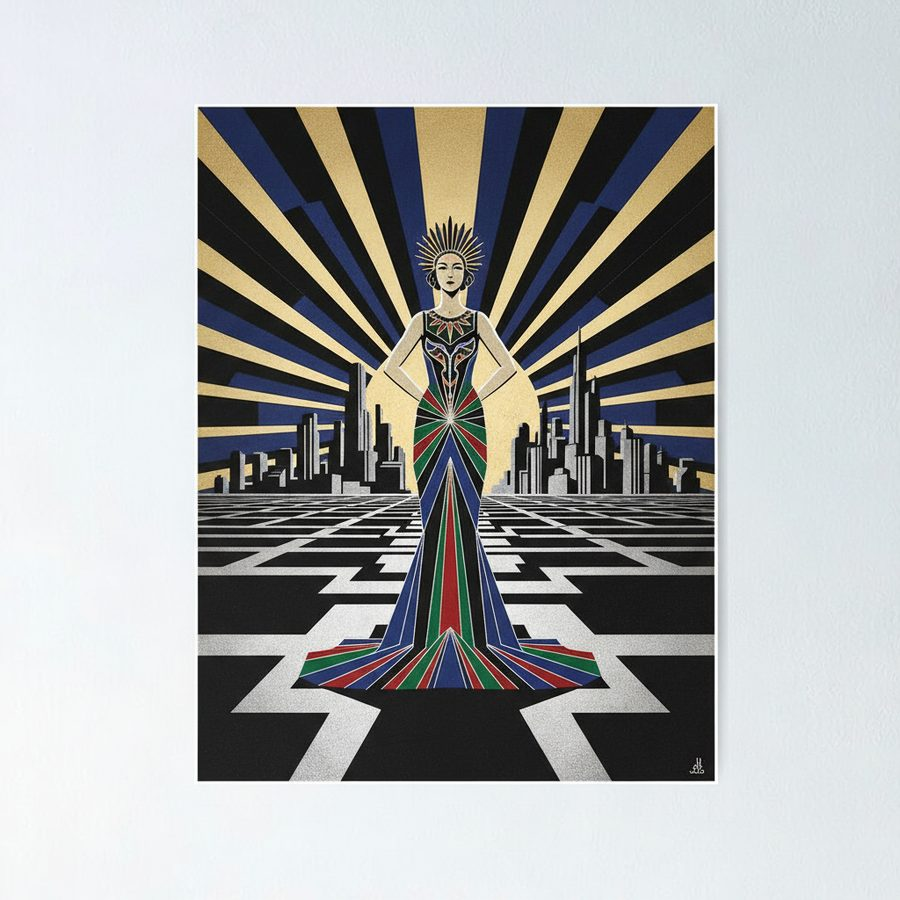
Art Deco
Aesthetics WikiArt movement1910s–1930s · Paris, France
a lone figure standing in an open landscape, Art Deco (1910s–1930s, Paris, France): Bold geometric shapes (chevrons, sunbursts, zig-zags); bold geometric patterns such as sunbursts; stylized natural forms; lavish ornamentation; limited colors; stepped forms; flat shapes; symmetry. Palette: High contrast palettes, black, silver, gold, chrome, rich jewel tones. Mood: Luxury, glamour, modernity, progress, faith in technology
Medium: lithograph / screenprinted poster, flat ink colour, sharp geometric edges. Lighting: soft directional daylight, subtle chiaroscuro, long shadows. Composition: centered lone figure, wide open landscape, generous negative space, horizon at lower third. Rendering: sharp, high detail.
--no watermark, text artefacts, muddy colour, extra limbs
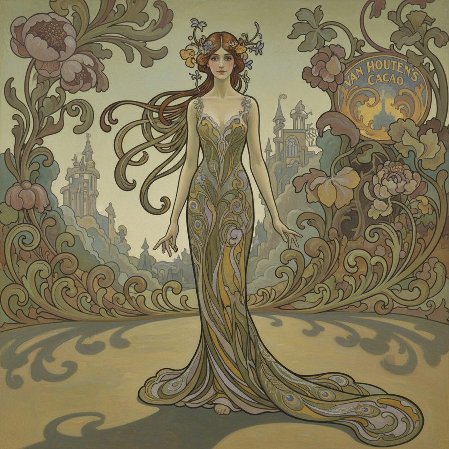
Art Nouveau
Aesthetics WikiArt movement1890s–1910s · Western Europe
oil on canvas, loose painterly brushwork, natural pigment
#002
a lone figure standing in an open landscape, Art Nouveau (1890s–1910s, Western Europe): stylized natural forms (flowers, insects, vines); color lithograph of the Castel Béranger; color lithograph van Hoten poster; organic shapes like flowers; "Whiplash" curves; peacock feathers; female figures; sinuous lines. Palette: Muted palettes including olive green, mustard yellow, brown, lilac, and sage, often with accents of gold and silver. Mood: Integration of fine and applied arts, rejection of historicism, ornamentation based on nature, use of modern materials
Medium: oil on canvas, loose painterly brushwork, natural pigment. Lighting: soft directional daylight, subtle chiaroscuro, long shadows. Composition: centered lone figure, wide open landscape, generous negative space, horizon at lower third. Rendering: sharp, high detail.
--no watermark, text artefacts, muddy colour, extra limbs
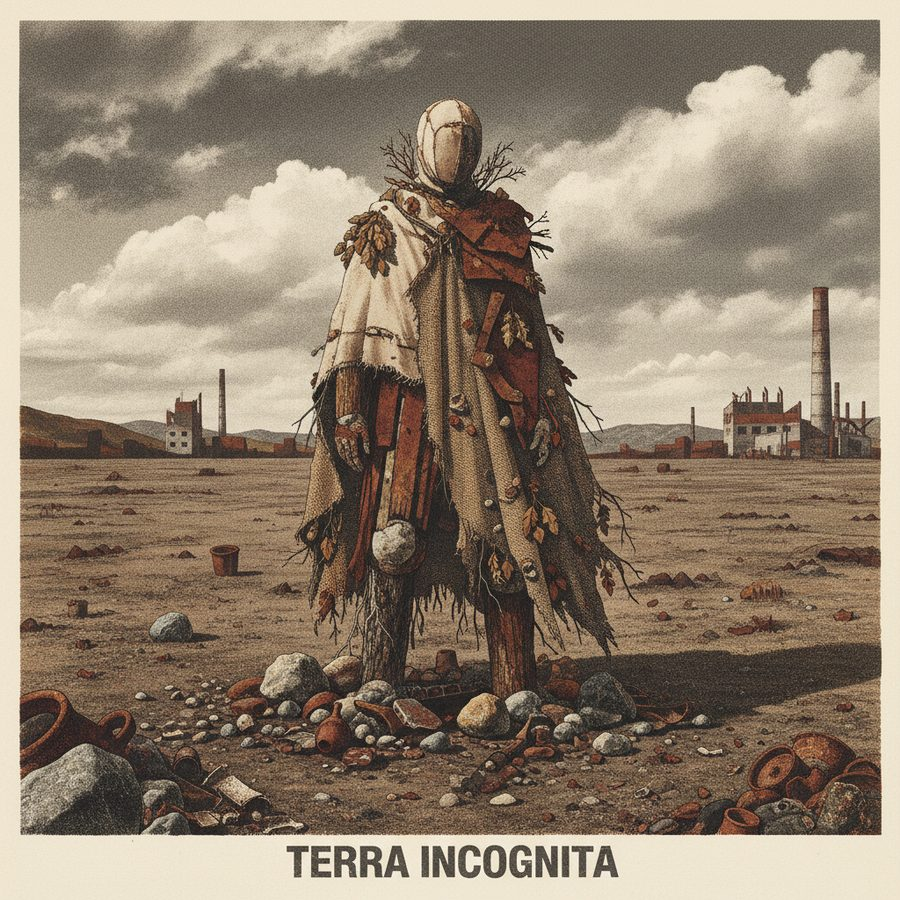
Arte Povera
Aesthetics WikiArt movementLate 1960s · Italy
screenprint with halftone dots, offset lithography, photocopy grain
#003
a lone figure standing in an open landscape, Arte Povera (Late 1960s, Italy): pre-industrial materials; Commonplace materials; "poor" materials; fabric; earth; rocks; metal; wood. Palette: Often earthy tones, natural colours, but also industrial colours (depending on materials used). Mood: Critique of consumerism, anti-materialism, anti-commercialism, rejection of traditional art values, emphasis on process
Medium: screenprint with halftone dots, offset lithography, photocopy grain. Lighting: soft directional daylight, subtle chiaroscuro, long shadows. Composition: centered lone figure, wide open landscape, generous negative space, horizon at lower third. Rendering: sharp, high detail.
--no watermark, text artefacts, muddy colour, extra limbs
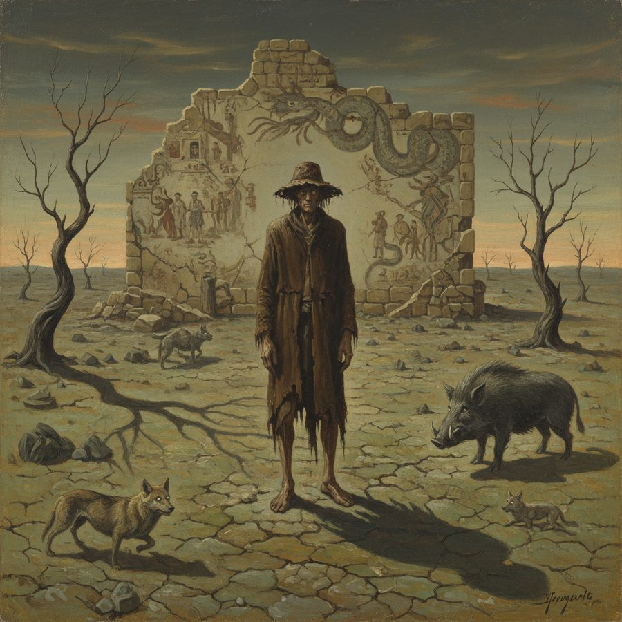
Australian Gothic
Aesthetics WikiArt movement1780s · —
oil on canvas, visible brushwork, aged varnish; architecture: fresco and carved stone
#004
a lone figure standing in an open landscape, Australian Gothic (1780s): Animals (Native and Invasive); History and myth; Outback scenes; Distorted Land; Ghosts. Palette: Natural and desert-like tones such as brown, grey and dull greens. Dark monotones such as black and dark blue. Mood: Distortion, isolation, history
Medium: oil on canvas, visible brushwork, aged varnish; architecture: fresco and carved stone. Lighting: soft directional daylight, subtle chiaroscuro, long shadows. Composition: centered lone figure, wide open landscape, generous negative space, horizon at lower third. Rendering: sharp, high detail.
--no watermark, text artefacts, muddy colour, extra limbs
oil on canvas, visible brushwork, aged varnish; architecture: fresco and carved stone
#005
a lone figure standing in an open landscape, Baroque (c. 1600 - 1750, Rome, Italy): chiaroscuro (strong light/dark contrast); elaborate ornamentation; classical mythology; use of deep colors; Dramatic movement; religious ecstasy; monumental scale; interiors curved; swirling forms. Palette: Deep, rich colors (crimson, indigo, ochre), dramatic contrasts of light and shadow, extensive use of gold and bronze. Mood: Opulence, grandeur, sensuousness, drama, movement
Medium: oil on canvas, visible brushwork, aged varnish; architecture: fresco and carved stone. Lighting: soft directional daylight, subtle chiaroscuro, long shadows. Composition: centered lone figure, wide open landscape, generous negative space, horizon at lower third. Rendering: sharp, high detail.
--no watermark, text artefacts, muddy colour, extra limbs
screenprint with halftone dots, offset lithography, photocopy grain
#006
a lone figure standing in an open landscape, Chicha (Mid-1970s (Music) 1980s (Art)): "Chicha" typography (bold, often hand-painted); psychedelic-inspired patterns; Tropical and Andean imagery; use of fluorescent colors; flowers and animals; street art elements; contrasting tones; using neon colors; bold typography. Palette: Pink, red, yellow, green, fluorescent, blue. Mood: Expression of Andean migrant identity, cultural fusion, sometimes activism (Indigenous rights, anti-racism, feminism, LGBT+ rights)
Medium: screenprint with halftone dots, offset lithography, photocopy grain. Lighting: soft directional daylight, subtle chiaroscuro, long shadows. Composition: centered lone figure, wide open landscape, generous negative space, horizon at lower third. Rendering: sharp, high detail.
--no watermark, text artefacts, muddy colour, extra limbs
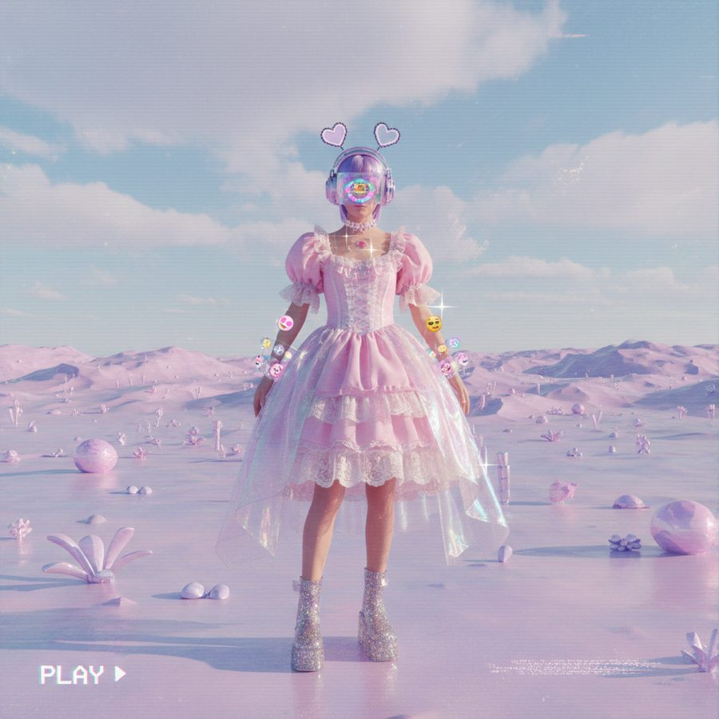
Cybertwee
Aesthetics WikiArt movement2010s · —
digital render / CRT scanlines / VHS artefacts / early-2000s web graphic
#007
a lone figure standing in an open landscape, Cybertwee (2010s): which stand in contrast to the cold blues; Pastel colors (especially pink, purple); soft textures (lace, ruffles, taffeta); holographic effects; kawaii imagery; wearable tech; glitter; plastic; emojis. Palette: Pastel pink, pastel purple, holographic, bright colors, soft hues, chrome. Mood: Sincerity, softness, sweetness, empathy, sentimentality
Medium: digital render / CRT scanlines / VHS artefacts / early-2000s web graphic. Lighting: soft directional daylight, subtle chiaroscuro, long shadows. Composition: centered lone figure, wide open landscape, generous negative space, horizon at lower third. Rendering: sharp, high detail.
--no watermark, text artefacts, muddy colour, extra limbs
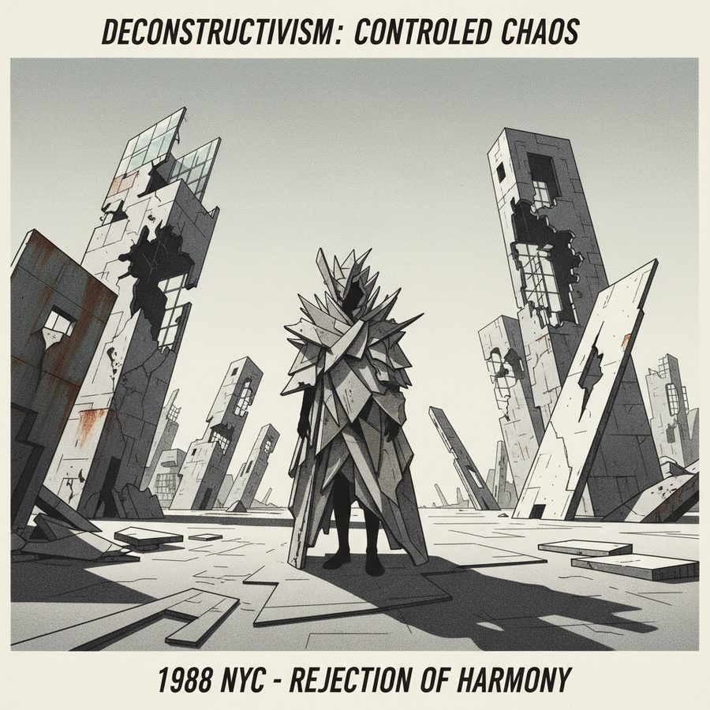
Deconstructivism
Aesthetics WikiArt movementLate 1980s · International (Catalyzed in New York, 1988)
a lone figure standing in an open landscape, Indigenous Futurisms (2000s-Present): traditional pattern and beadwork carried into futuristic settings; science-fiction imagery rendered in Indigenous visual traditions; land depicted as ancestral territory; comic-book and video-game rendering; starscapes and celestial mapping. Palette: earth ochre, turquoise, deep indigo. Mood: Self-determination, cultural resilience, sovereignty, connection to land
Medium: lithograph / screenprinted poster, flat ink colour, sharp geometric edges. Lighting: soft directional daylight, subtle chiaroscuro, long shadows. Composition: centered lone figure, wide open landscape, generous negative space, horizon at lower third. Rendering: sharp, high detail.
--no watermark, text artefacts, muddy colour, extra limbs
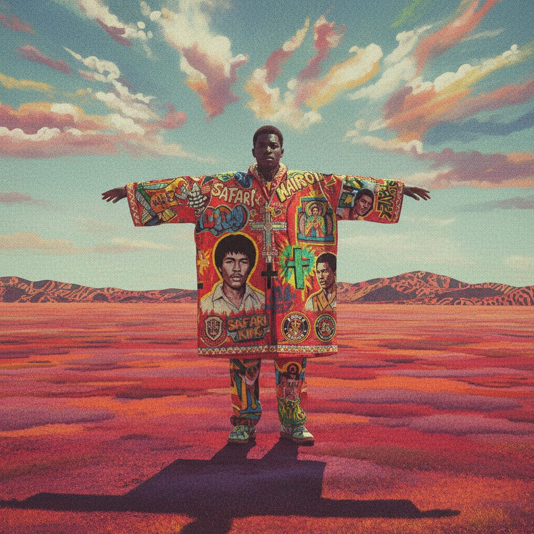
Matatu Art
Aesthetics WikiArt movement1970s · Nairobi, Kenya
screenprint with halftone dots, offset lithography, photocopy grain
#012
a lone figure standing in an open landscape, Matatu Art (1970s, Nairobi, Kenya): reds dominate exterior compositions; programmable color-changing systems; technologically enhanced interiors; slogans and text-based messaging; pop culture references; religious iconography; vibrant color schemes; Graffiti portraiture; sports team branding. Palette: Vibrant multicolor schemes including neon, metallic accents, bright oranges, yellows, greens, blues. Mood: Artistic expression, competition, identity, accessibility, youth culture
Medium: screenprint with halftone dots, offset lithography, photocopy grain. Lighting: soft directional daylight, subtle chiaroscuro, long shadows. Composition: centered lone figure, wide open landscape, generous negative space, horizon at lower third. Rendering: sharp, high detail.
--no watermark, text artefacts, muddy colour, extra limbs
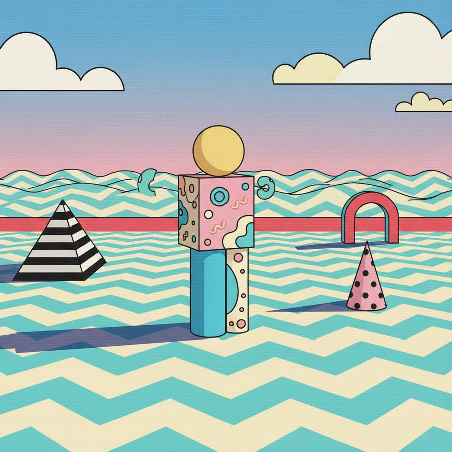
Memphis Design
Aesthetics WikiArt movement1980s · Milan, Italy
digital render / CRT scanlines / VHS artefacts / early-2000s web graphic
#013
a lone figure standing in an open landscape, Memphis Design (1980s, Milan, Italy): bold geometric shapes; bold geometric forms; teal color palette; zig zagged lines; playful patterns; pastel colors; zig-zag lines. Palette: Pink, blue, yellow, black, white, red. Mood: Experimentation
Medium: digital render / CRT scanlines / VHS artefacts / early-2000s web graphic. Lighting: soft directional daylight, subtle chiaroscuro, long shadows. Composition: centered lone figure, wide open landscape, generous negative space, horizon at lower third. Rendering: sharp, high detail.
--no watermark, text artefacts, muddy colour, extra limbs
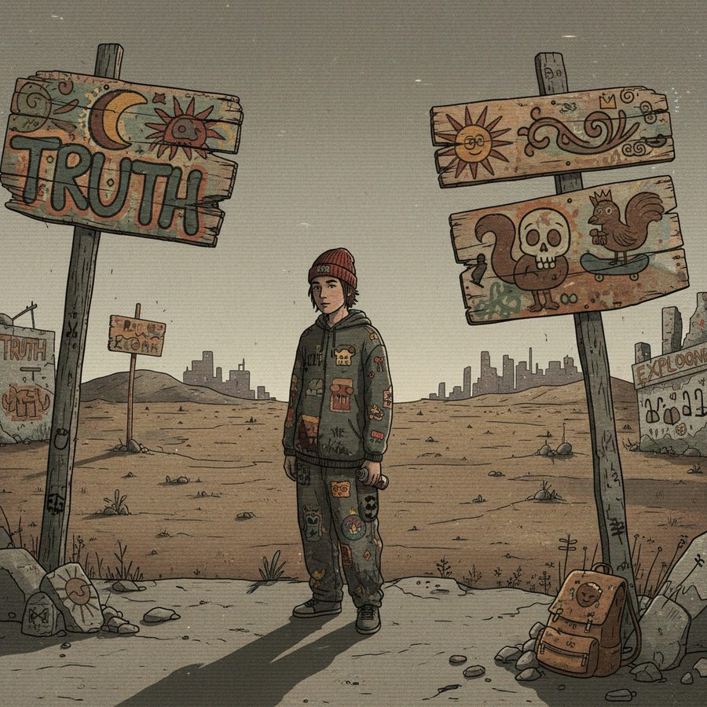
Mission School
Aesthetics WikiArt movement1990s · Mission District, San Francisco, USA
digital render / CRT scanlines / VHS artefacts / early-2000s web graphic
#014
a lone figure standing in an open landscape, Mission School (1990s, Mission District, San Francisco, USA): faux-weathered textures; Graffiti lettering; hand-painted signs; folk art patterns; cartoon figures; skater culture; hobo symbols; urban life. Palette: Muted colors, earthy and urban palettes. Mood: DIY ethos, anti-commercialism, appreciation for the handmade and found objects, authenticity, community
Medium: digital render / CRT scanlines / VHS artefacts / early-2000s web graphic. Lighting: soft directional daylight, subtle chiaroscuro, long shadows. Composition: centered lone figure, wide open landscape, generous negative space, horizon at lower third. Rendering: sharp, high detail.
--no watermark, text artefacts, muddy colour, extra limbs
oil on canvas, loose painterly brushwork, natural pigment
#015
a lone figure standing in an open landscape, Modernisme (c. 1888 - 1911, Catalonia, Spain): natural motifs (plants, animals, geology); curvilinear "whiplash" lines; use of the curvilinear line; forms inspired by nature; trencadís mosaics; wrought ironwork; Organic forms; stained glass; architecture. Palette: Vibrant polychromy, rich jewel tones, earthy and natural tones. Mood: Catalan cultural revival (Renaixença), national identity, artistic freedom, integration of the arts (Gesamtkunstwerk), innovation with materials
Medium: oil on canvas, loose painterly brushwork, natural pigment. Lighting: soft directional daylight, subtle chiaroscuro, long shadows. Composition: centered lone figure, wide open landscape, generous negative space, horizon at lower third. Rendering: sharp, high detail.
--no watermark, text artefacts, muddy colour, extra limbs
oil on canvas, visible brushwork, aged varnish; architecture: fresco and carved stone
#017
a lone figure standing in an open landscape, Neoclassicism (c. 1760–1830, Rome, Italy): Classical mythology and history; togas and Greco-Roman attire; architectural ruins; idealized figures; austere settings; idealized form; angular lines; civic virtue; heroism. Palette: Somber, serious colors, strong, clear light, avoidance of Rococo pastels. Mood: Order, reason, restraint, solemnity, morality
Medium: oil on canvas, visible brushwork, aged varnish; architecture: fresco and carved stone. Lighting: soft directional daylight, subtle chiaroscuro, long shadows. Composition: centered lone figure, wide open landscape, generous negative space, horizon at lower third. Rendering: sharp, high detail.
--no watermark, text artefacts, muddy colour, extra limbs
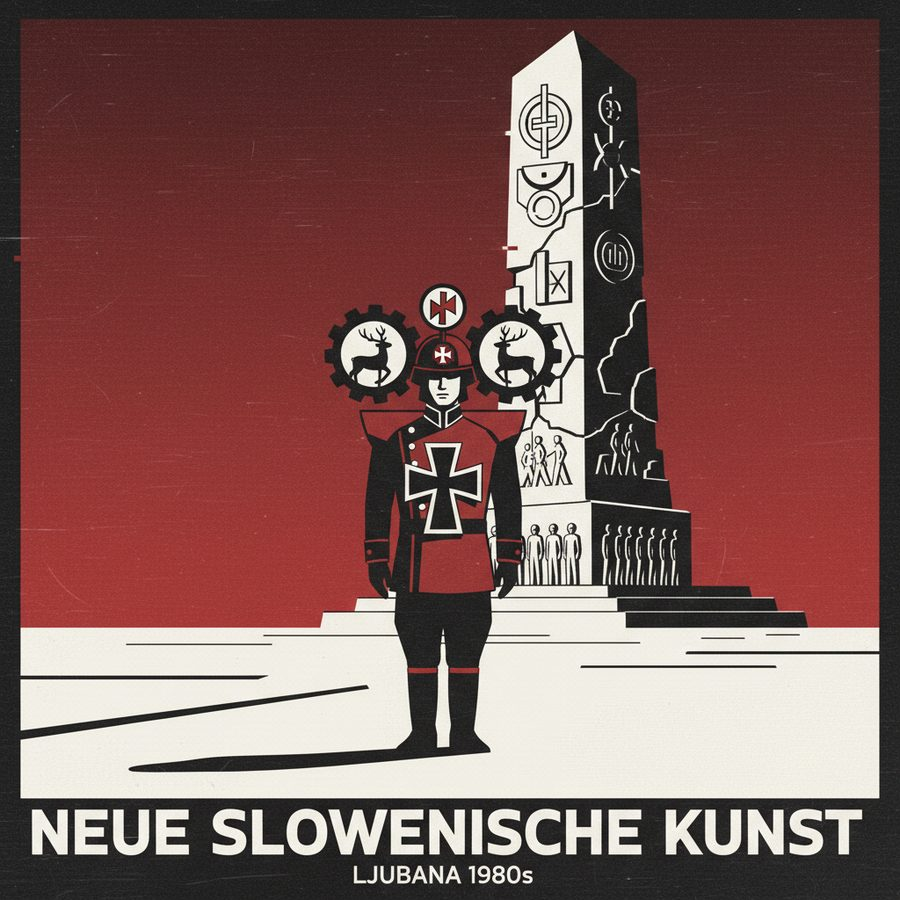
Neue Slowenische Kunst
Aesthetics WikiArt movement1980s · Ljubljana, Slovenia (then Yugoslavia)
digital render / CRT scanlines / VHS artefacts / early-2000s web graphic
#018
a lone figure standing in an open landscape, Neue Slowenische Kunst (1980s, Ljubljana, Slovenia (then Yugoslavia)): appropriation of totalitarian art (Nazi Kitsch, Socialist Realism); Black cross (Malevich); avant-garde symbols; industrial imagery; stags. Palette: Red, black, white. Mood: Collective identity, retro-avant-garde principles, challenging national identity, critique of ideology through "over-identification"
Medium: digital render / CRT scanlines / VHS artefacts / early-2000s web graphic. Lighting: soft directional daylight, subtle chiaroscuro, long shadows. Composition: centered lone figure, wide open landscape, generous negative space, horizon at lower third. Rendering: sharp, high detail.
--no watermark, text artefacts, muddy colour, extra limbs
screenprint with halftone dots, offset lithography, photocopy grain
#019
a lone figure standing in an open landscape, New Figuration (1950s-1960s, Argentina, Mexico, Venezuela, Spain): focus on the human figure; depictions of suffering; monstrous forms; Human figures; abstraction; distortion. Palette: Varies, often bold and expressive. Mood: Social critique, Freedom of expression, Individuality
Medium: screenprint with halftone dots, offset lithography, photocopy grain. Lighting: soft directional daylight, subtle chiaroscuro, long shadows. Composition: centered lone figure, wide open landscape, generous negative space, horizon at lower third. Rendering: sharp, high detail.
--no watermark, text artefacts, muddy colour, extra limbs
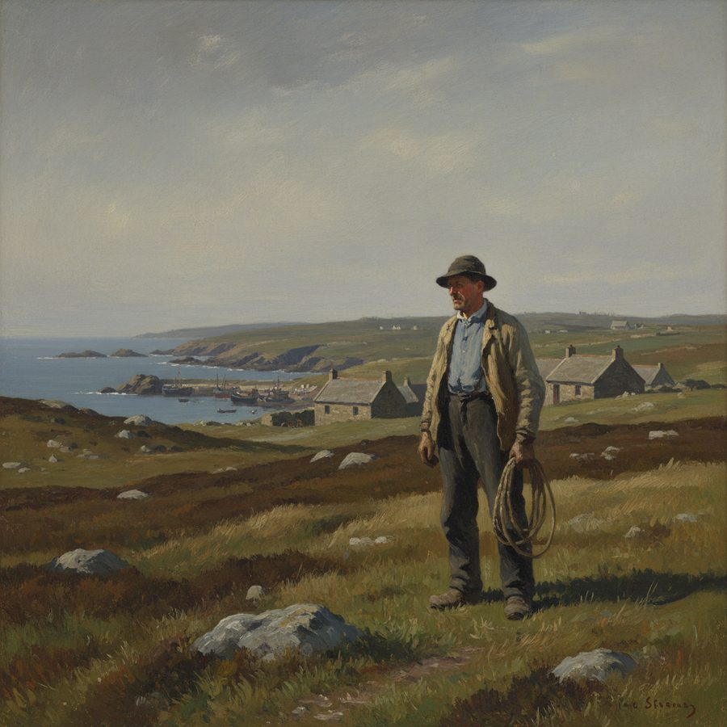
Newlyn School
Aesthetics WikiArt movementc. 1880s–1910s · Newlyn, Cornwall, England
oil on canvas, loose painterly brushwork, natural pigment
#020
a lone figure standing in an open landscape, Newlyn School (c. 1880s–1910s, Newlyn, Cornwall, England): Cornish fishing communities; quiet domestic interiors; bustling harbor scenes; working-class life; rugged coastlines; rural labor. Palette: Naturalistic palettes, silvery light, cool grays and blues, earthy tones. Mood: Realism, truth to life, social documentation, appreciation for traditional labor, depiction of natural light
Medium: oil on canvas, loose painterly brushwork, natural pigment. Lighting: soft directional daylight, subtle chiaroscuro, long shadows. Composition: centered lone figure, wide open landscape, generous negative space, horizon at lower third. Rendering: sharp, high detail.
--no watermark, text artefacts, muddy colour, extra limbs
oil on canvas, loose painterly brushwork, natural pigment
#021
a lone figure standing in an open landscape, Noucentisme (c. 1906–1923, Catalonia, Spain): serene depictions of the Catalan landscape; figures that evoke a timeless; Mediterranean landscapes; balanced compositions; idealized rural life; arches and columns; Classical forms; clarity; order. Palette: Muted and earthy tones, ochre, white, beige, soft blues and greens. Mood: Order, reason, classicism, civility, Catalan identity ("Catalanitat")
Medium: oil on canvas, loose painterly brushwork, natural pigment. Lighting: soft directional daylight, subtle chiaroscuro, long shadows. Composition: centered lone figure, wide open landscape, generous negative space, horizon at lower third. Rendering: sharp, high detail.
--no watermark, text artefacts, muddy colour, extra limbs
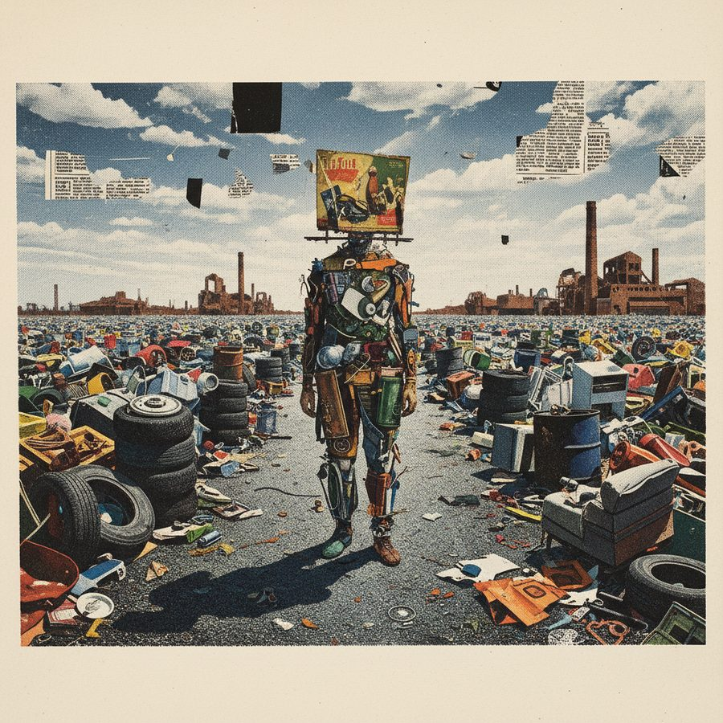
Nouveau Réalisme
Aesthetics WikiArt movementEarly 1960s · France
screenprint with halftone dots, offset lithography, photocopy grain
#022
a lone figure standing in an open landscape, Nouveau Réalisme (Early 1960s, France): discarded or industrial materials; Everyday objects; accumulations; compression; decollage. Palette: Varies, often bold and industrial. Mood: Appropriation of the real, social commentary, anti-aesthetic, anti-consumerism
Medium: screenprint with halftone dots, offset lithography, photocopy grain. Lighting: soft directional daylight, subtle chiaroscuro, long shadows. Composition: centered lone figure, wide open landscape, generous negative space, horizon at lower third. Rendering: sharp, high detail.
--no watermark, text artefacts, muddy colour, extra limbs
a lone figure standing in an open landscape, Plakatstil (1900s–1910s, Germany): lack of ornamentation; Isolated objects; bold lettering; negative space; vivid colours; flat colors. Palette: Simple, bold color palettes with high contrast. Mood: Clarity, directness, modernity, readability, impact
Medium: lithograph / screenprinted poster, flat ink colour, sharp geometric edges. Lighting: soft directional daylight, subtle chiaroscuro, long shadows. Composition: centered lone figure, wide open landscape, generous negative space, horizon at lower third. Rendering: sharp, high detail.
--no watermark, text artefacts, muddy colour, extra limbs
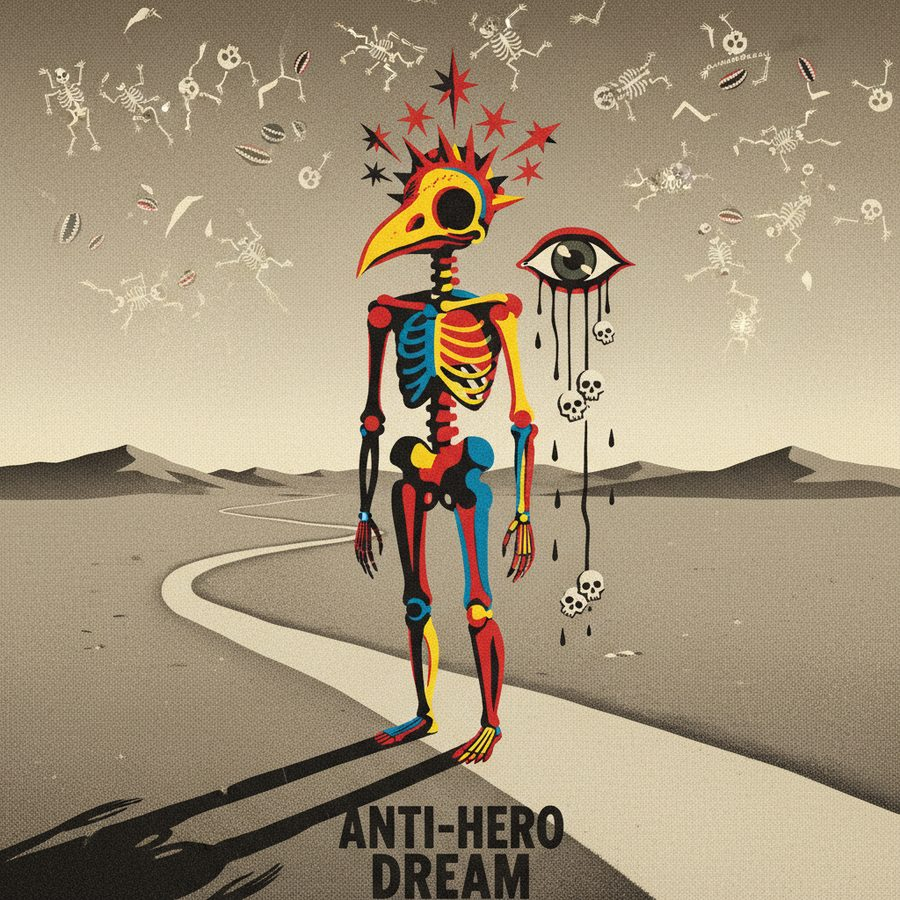
Polish Poster School
Aesthetics WikiArt movement1950s · Poland (Warsaw Academy of Fine Arts)
screenprint with halftone dots, offset lithography, photocopy grain
#024
a lone figure standing in an open landscape, Polish Poster School (1950s, Poland (Warsaw Academy of Fine Arts)): star-driven format of Western posters; vibrant colors derived from folk art; morbid imagery (skulls, bones); symbolic heads/figures; posters use concise; Painterly gesture; minimalist shapes; surrealism; dark humor. Palette: Vibrant reds, yellows, and blues (often isolated color pops against muted backgrounds). Mood: Artistic freedom (subversion), intellectual advertisement, emotional commentary, fine art over commercialism, anti-Hollywood standardization
Medium: screenprint with halftone dots, offset lithography, photocopy grain. Lighting: soft directional daylight, subtle chiaroscuro, long shadows. Composition: centered lone figure, wide open landscape, generous negative space, horizon at lower third. Rendering: sharp, high detail.
--no watermark, text artefacts, muddy colour, extra limbs
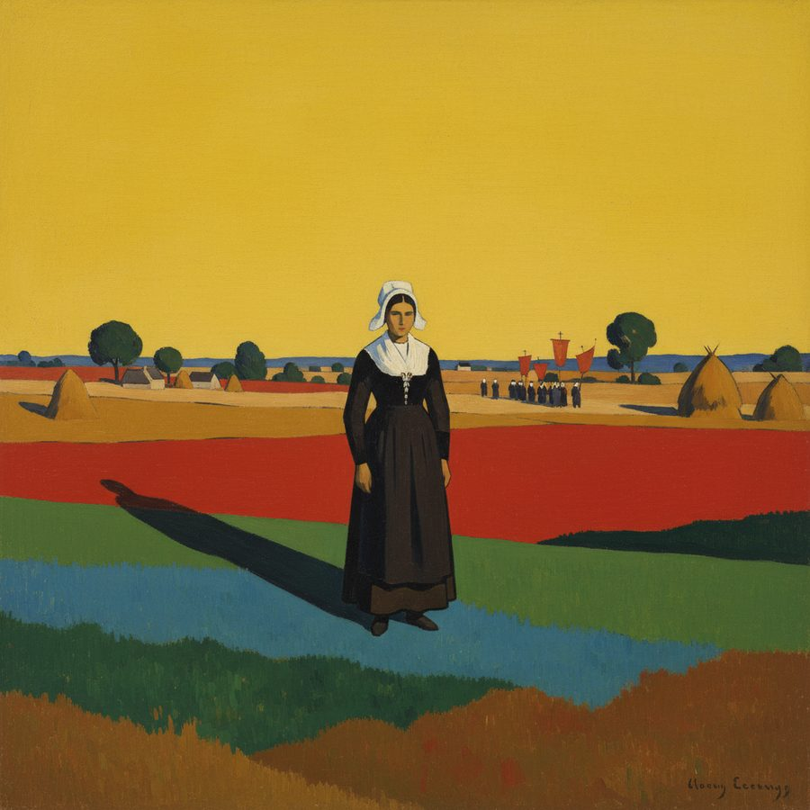
Pont-Aven School
Aesthetics WikiArt movementLate 1880s–Early 1890s · Pont-Aven, Brittany, France
oil on canvas, loose painterly brushwork, natural pigment
#025
a lone figure standing in an open landscape, Pont-Aven School (Late 1880s–Early 1890s, Pont-Aven, Brittany, France): flat areas of non-naturalistic color; deliberate simplification of forms; religious processions (pardons); strong outlines (cloisonnism); flat planes of color; strong dark outlines; Breton peasant life; rural landscapes; simplified forms. Palette: Bold, non-naturalistic colors (e.g., yellow skies, red fields), large, flat areas of color. Mood: Anti-naturalism, synthesis of observation and feeling, simplification of form, spiritual expression, "primitivism"
Medium: oil on canvas, loose painterly brushwork, natural pigment. Lighting: soft directional daylight, subtle chiaroscuro, long shadows. Composition: centered lone figure, wide open landscape, generous negative space, horizon at lower third. Rendering: sharp, high detail.
--no watermark, text artefacts, muddy colour, extra limbs
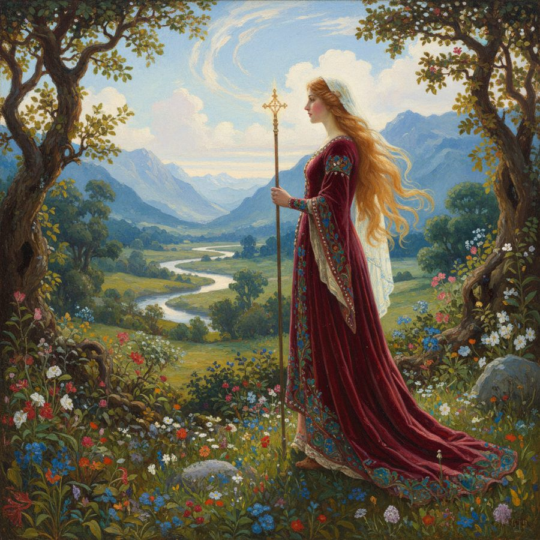
Pre-Raphaelite
Aesthetics WikiArt movement1848 · London, England
oil on canvas, loose painterly brushwork, natural pigment
#026
a lone figure standing in an open landscape, Pre-Raphaelite (1848, London, England): religious and mythological subjects; detailed natural landscapes; idealized female figures; languid female figure; visually rich scenes; jewel-toned colors; Arthurian legend; literary themes; clear colors. Palette: Vivid jewel tones (cobalt, ruby, emerald), luminous whites. Mood: Sincere representation, truth to nature, moral seriousness, opposition to academic conventions
Medium: oil on canvas, loose painterly brushwork, natural pigment. Lighting: soft directional daylight, subtle chiaroscuro, long shadows. Composition: centered lone figure, wide open landscape, generous negative space, horizon at lower third. Rendering: sharp, high detail.
--no watermark, text artefacts, muddy colour, extra limbs
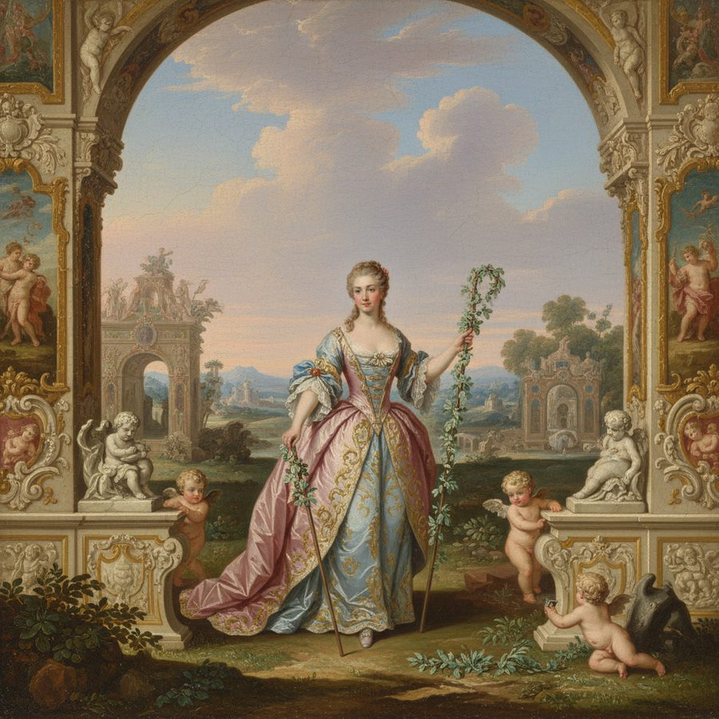
Rococo
Aesthetics WikiArt movement1720s - 1760s · Paris, France
oil on canvas, visible brushwork, aged varnish; architecture: fresco and carved stone
#027
a lone figure standing in an open landscape, Rococo (1720s - 1760s, Paris, France): natural forms in ornamentation; mythological love stories; elegantly flowing shapes; C-scrolls and S-scrolls; elaborate asymmetry; Shells (rocaille); acanthus leaves; putti (cherubs); pastoral scenes. Palette: Pastel palettes (light pink, powder blue, mint green, cream, lavender), ivory white, gold leaf. Mood: Frivolity, pleasure, intimacy, elegance, leisure
Medium: oil on canvas, visible brushwork, aged varnish; architecture: fresco and carved stone. Lighting: soft directional daylight, subtle chiaroscuro, long shadows. Composition: centered lone figure, wide open landscape, generous negative space, horizon at lower third. Rendering: sharp, high detail.
--no watermark, text artefacts, muddy colour, extra limbs
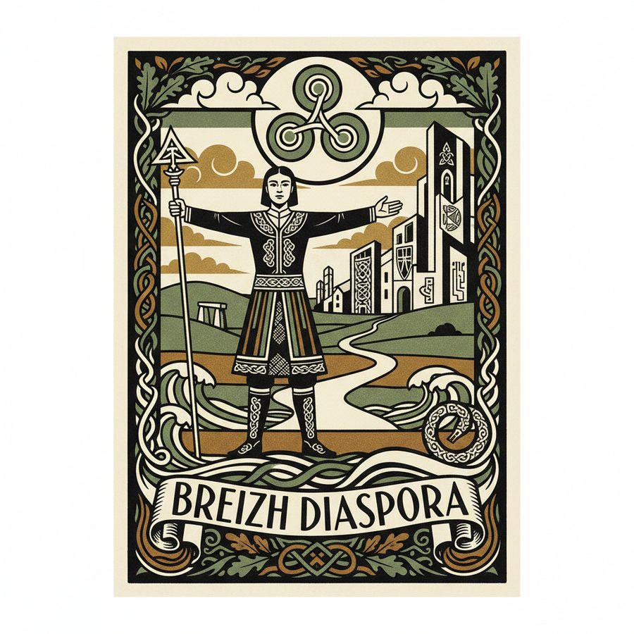
Seiz Breur
Aesthetics WikiArt movement1920s–1940s · Brittany, France
a lone figure standing in an open landscape, Seiz Breur (1920s–1940s, Brittany, France): wood engraving; Celtic knots; architecture; Triskelion; pilgrimage; typography; folklore; hermine; nature. Palette: Black, white, muted colors, earth tones, gold. Mood: Breton nationalism, anti-centralization, cultural revival, rejection of mass-produced tourist art, synthesis of tradition and modernism
Medium: lithograph / screenprinted poster, flat ink colour, sharp geometric edges. Lighting: soft directional daylight, subtle chiaroscuro, long shadows. Composition: centered lone figure, wide open landscape, generous negative space, horizon at lower third. Rendering: sharp, high detail.
--no watermark, text artefacts, muddy colour, extra limbs
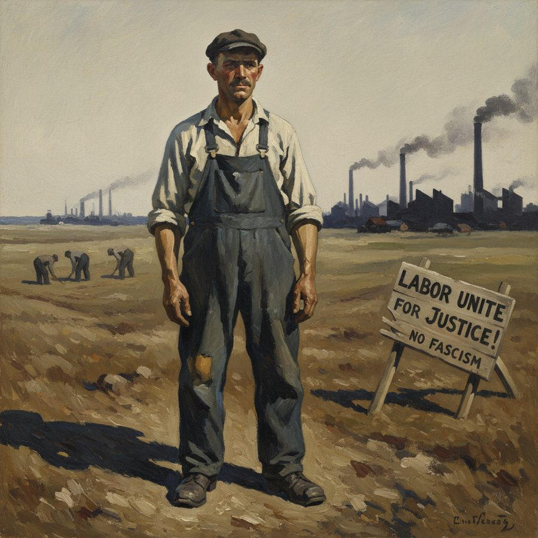
Social Realism
Aesthetics WikiArt movement1920s · —
oil on canvas, loose painterly brushwork, natural pigment
#029
a lone figure standing in an open landscape, Social Realism (1920s): the common person; rural struggles; the urban poor; human figure; industry; Workers; protest. Palette: Muted tones, earthy colors, grays, blacks, whites. Mood: Social justice, labor rights, anti-fascism, equality, human dignity
Medium: oil on canvas, loose painterly brushwork, natural pigment. Lighting: soft directional daylight, subtle chiaroscuro, long shadows. Composition: centered lone figure, wide open landscape, generous negative space, horizon at lower third. Rendering: sharp, high detail.
--no watermark, text artefacts, muddy colour, extra limbs
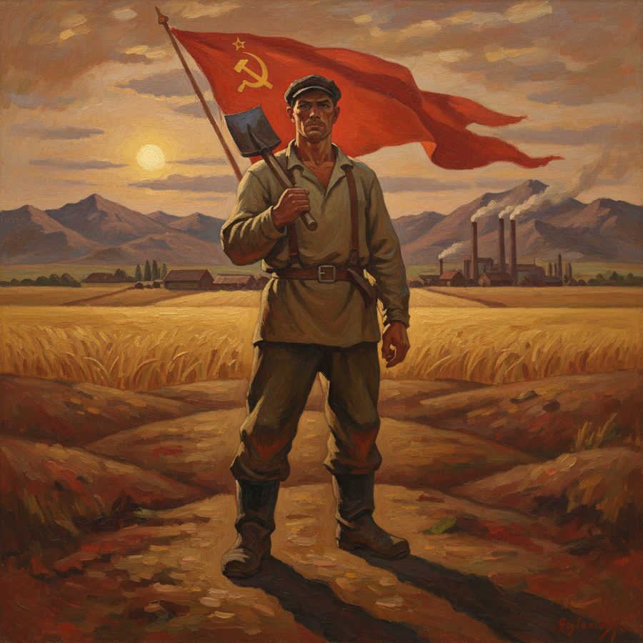
Socialist Realism
Aesthetics WikiArt movement1920s-1980s · —
oil on canvas, loose painterly brushwork, natural pigment
#030
a lone figure standing in an open landscape, Socialist Realism (1920s-1980s): political leaders; heroic struggles; national symbols; agriculture; peasants; soldiers; industry; Workers. Palette: Red, yellow, brown, muted tones. Mood: Communism, socialism, patriotism, heroism, the working class
Medium: oil on canvas, loose painterly brushwork, natural pigment. Lighting: soft directional daylight, subtle chiaroscuro, long shadows. Composition: centered lone figure, wide open landscape, generous negative space, horizon at lower third. Rendering: sharp, high detail.
--no watermark, text artefacts, muddy colour, extra limbs
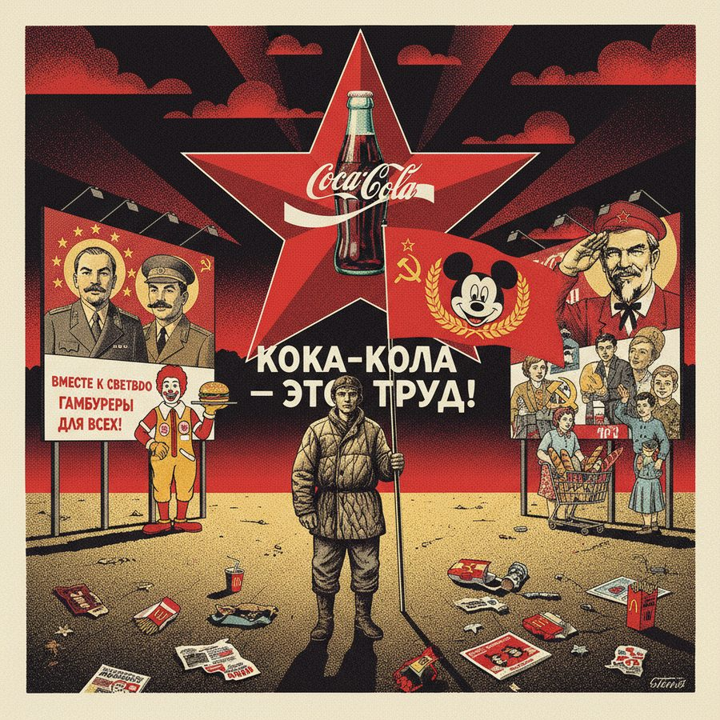
Sots Art
Aesthetics WikiArt movement1970s · Moscow, Soviet Union
screenprint with halftone dots, offset lithography, photocopy grain
#031
a lone figure standing in an open landscape, Sots Art (1970s, Moscow, Soviet Union): juxtaposition with Western pop culture icons (Mickey Mouse, Coca-Cola); Soviet symbols (hammer and sickle, red star); portraits of leaders (Lenin, Stalin); depicted scenes of everyday life; propaganda slogans; advertisements. Palette: Red, gold, black, and the idealized palette of Socialist Realism. Mood: Irony, parody, satire, critique of ideology, nonconformism
Medium: screenprint with halftone dots, offset lithography, photocopy grain. Lighting: soft directional daylight, subtle chiaroscuro, long shadows. Composition: centered lone figure, wide open landscape, generous negative space, horizon at lower third. Rendering: sharp, high detail.
--no watermark, text artefacts, muddy colour, extra limbs
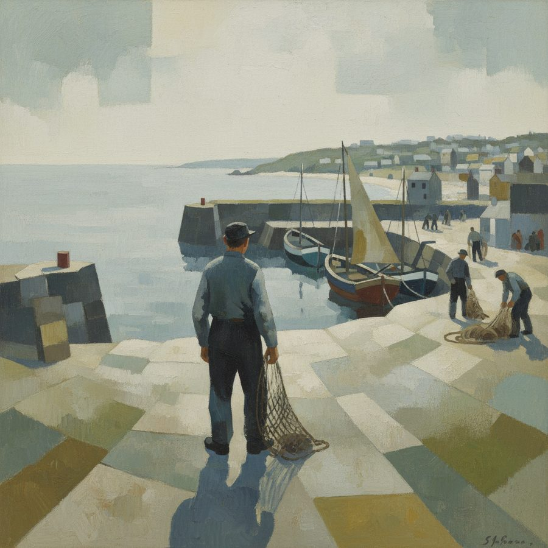
St Ives School
Aesthetics WikiArt movement1920s (Early Origins) 1940s-1960s · Cornwall, England ELLE YAZILDI
oil on canvas, loose painterly brushwork, natural pigment
#032
a lone figure standing in an open landscape, St Ives School (1920s (Early Origins) 1940s-1960s, Cornwall, England): coastal landscape abstracted into geometric forms; figures at daily work in a port town; fishing harbour, boats and quayside; Cornish coastal light and sea haze. Palette: muted grey-blue, sea green, ochre, weathered white
Medium: oil on canvas, loose painterly brushwork, natural pigment. Lighting: soft directional daylight, subtle chiaroscuro, long shadows. Composition: centered lone figure, wide open landscape, generous negative space, horizon at lower third. Rendering: sharp, high detail.
--no watermark, text artefacts, muddy colour, extra limbs
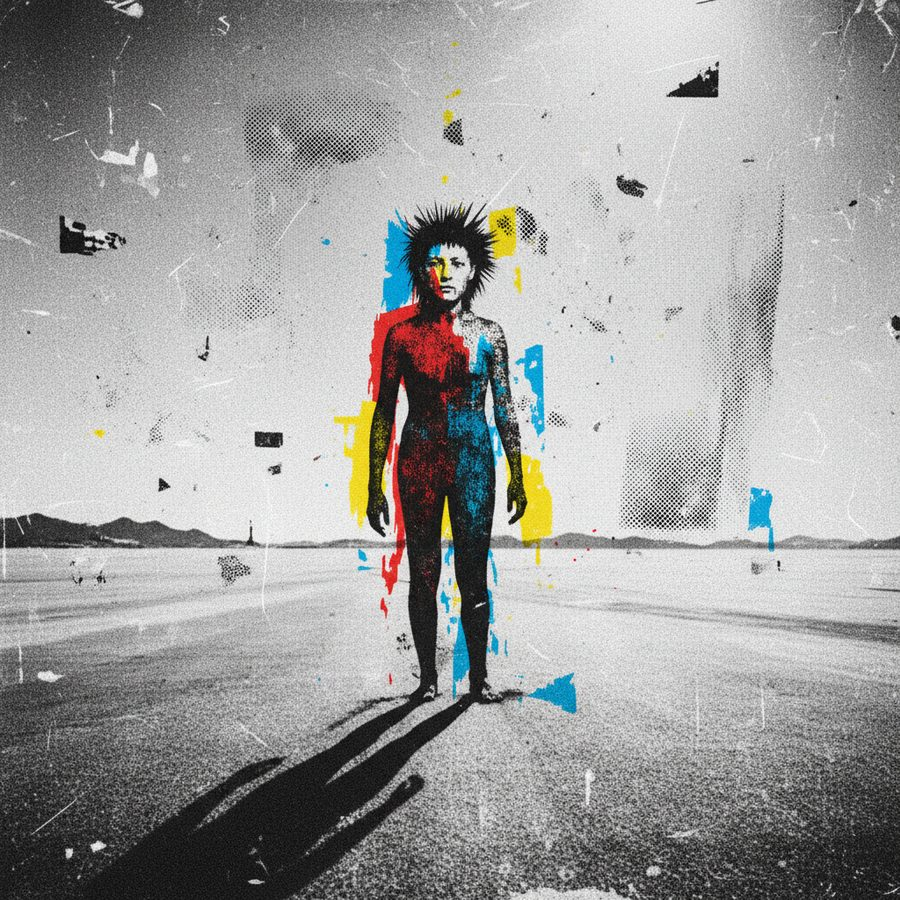
Xerox Art
Aesthetics WikiArt movement1960s · Broadly originated in the United States (Astoria, New York; Rochester, New York; San Francisco, California)
screenprint with halftone dots, offset lithography, photocopy grain
#033
a lone figure standing in an open landscape, Xerox Art (1960s, Broadly originated in the United States (Astoria, New York; Rochester, New York; San Francisco, California)): objects and body parts pressed flat against the glass platen; punk-inflected hues by varying exposure; ghostly and stretched or smeared forms; shallow and unstable depth of field; layered overprinting and collage; High-contrast tonal compression; grainy toner degradation; colour balance controls. Palette: Black and white (most early and classic work), later pieces make use of saturated primary toner colours in colour xerography. Mood: Accessibility and democratized reproduction, blurring of the line between original and copy, the transformation of an office tool into a means of artistic expression
Medium: screenprint with halftone dots, offset lithography, photocopy grain. Lighting: soft directional daylight, subtle chiaroscuro, long shadows. Composition: centered lone figure, wide open landscape, generous negative space, horizon at lower third. Rendering: sharp, high detail.
--no watermark, text artefacts, muddy colour, extra limbs
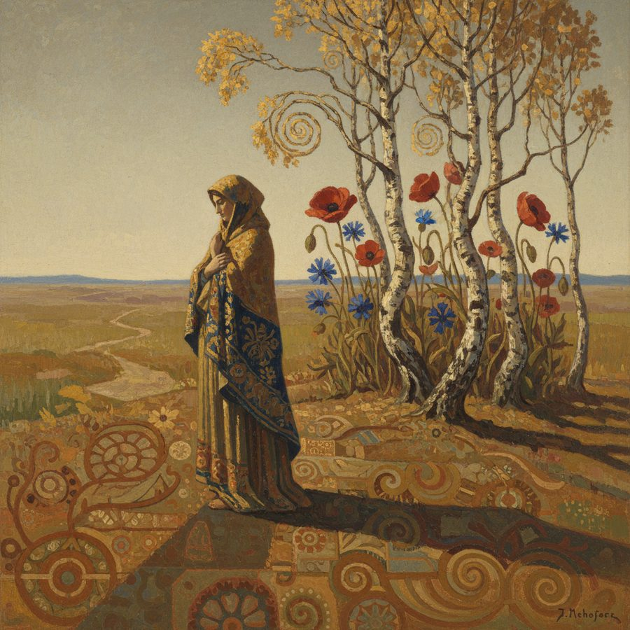
Young Poland
Aesthetics WikiArt movement1890s-1910s · Partitions of Poland
oil on canvas, loose painterly brushwork, natural pigment
#034
a lone figure standing in an open landscape, Young Poland (1890s-1910s, Partitions of Poland): melancholic figures; Symbolic flora; folk patterns. Palette: Earthy tones, gold, deep blues. Mood: National identity, patriotism, artistic freedom, spiritual expression, pessimism
Medium: oil on canvas, loose painterly brushwork, natural pigment. Lighting: soft directional daylight, subtle chiaroscuro, long shadows. Composition: centered lone figure, wide open landscape, generous negative space, horizon at lower third. Rendering: sharp, high detail.
--no watermark, text artefacts, muddy colour, extra limbs
a lone figure standing in an open landscape, Zenitism (1921–1926, Yugoslavia (Zagreb & Belgrade)): Balkan folklore motifs; geometric abstraction; The "Barbarogenius; dynamic typography; the modern city; " machines; airplanes. Palette: Often black, white, and red. Mood: Anti-traditionalism, Balkan cultural revival, synthesis of "East" and "West, " pacifism, primitivism
Medium: lithograph / screenprinted poster, flat ink colour, sharp geometric edges. Lighting: soft directional daylight, subtle chiaroscuro, long shadows. Composition: centered lone figure, wide open landscape, generous negative space, horizon at lower third. Rendering: sharp, high detail.
--no watermark, text artefacts, muddy colour, extra limbs
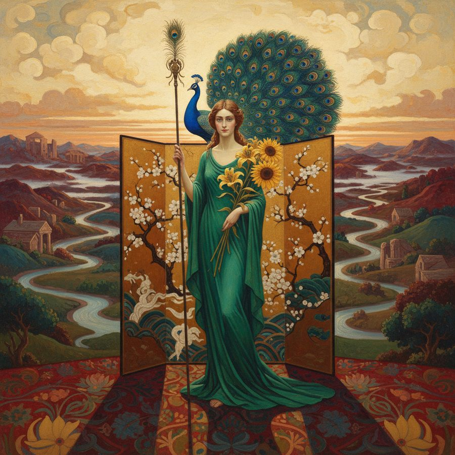
Aestheticism
Aesthetics WikiArt movementLate-19th century (approximately 1860s-1900s) · —
oil on canvas, loose painterly brushwork, natural pigment
#036
a lone figure standing in an open landscape, Aestheticism (Late-19th century (approximately 1860s-1900s)): stylized motifs like the peacock feather; Japanese motifs (fans, screens); intricate patterns; classical figures; flowing lines; rich colors; sunflowers; Peacocks; lilies. Palette: Jewel tones (emerald green, sapphire blue, ruby red), Gold, Ivory, Peacock blue. Mood: Art for art's sake, beauty, sensuality, refinement, individualism
Medium: oil on canvas, loose painterly brushwork, natural pigment. Lighting: soft directional daylight, subtle chiaroscuro, long shadows. Composition: centered lone figure, wide open landscape, generous negative space, horizon at lower third. Rendering: sharp, high detail.
--no watermark, text artefacts, muddy colour, extra limbs
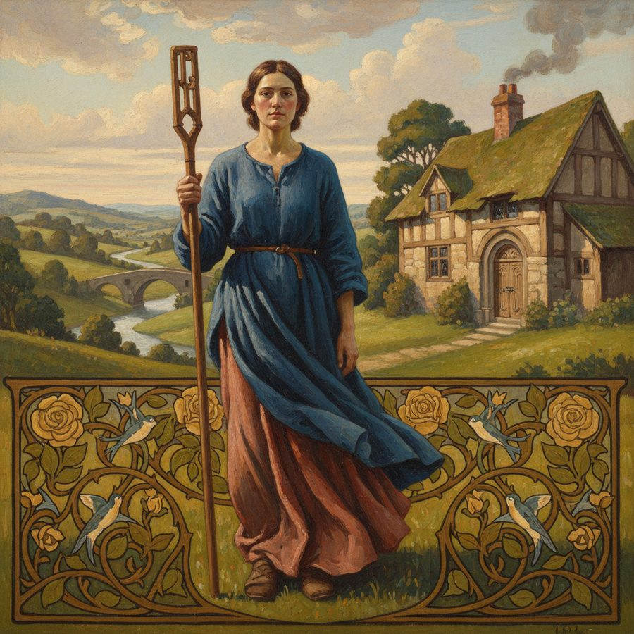
Arts and Crafts
Aesthetics WikiArt movement1880s - 1920s · United Kingdom
oil on canvas, loose painterly brushwork, natural pigment
#037
a lone figure standing in an open landscape, Arts and Crafts (1880s - 1920s, United Kingdom): Stylized natural forms (flowers, vines, birds); it emphasized simplicity of form; simple and strong construction; natural forms of British flora; handcrafted textures; medieval influences; visible joinery. Palette: Rich, deep colors from natural dyes (earthy reds, deep greens, ochre yellows, indigo blues). Mood: Dignity of labor, anti-industrialism, social reform, truth to materials, unity of art and life
Medium: oil on canvas, loose painterly brushwork, natural pigment. Lighting: soft directional daylight, subtle chiaroscuro, long shadows. Composition: centered lone figure, wide open landscape, generous negative space, horizon at lower third. Rendering: sharp, high detail.
--no watermark, text artefacts, muddy colour, extra limbs
a lone figure standing in an open landscape, Bauhaus (1919 - 1933, Weimar, Germany): Geometric shapes (circles, squares, triangles); industrial materials (steel, glass, concrete); simple geometric forms; sans-serif typography; lack of ornamentation; use of clean lines; abstract forms. Palette: Primary colors (red, yellow, blue), black, white, gray. Mood: Unification of art and industry, "form follows function, " social purpose of design, rationality, simplicity
Medium: lithograph / screenprinted poster, flat ink colour, sharp geometric edges. Lighting: soft directional daylight, subtle chiaroscuro, long shadows. Composition: centered lone figure, wide open landscape, generous negative space, horizon at lower third. Rendering: sharp, high detail.
--no watermark, text artefacts, muddy colour, extra limbs
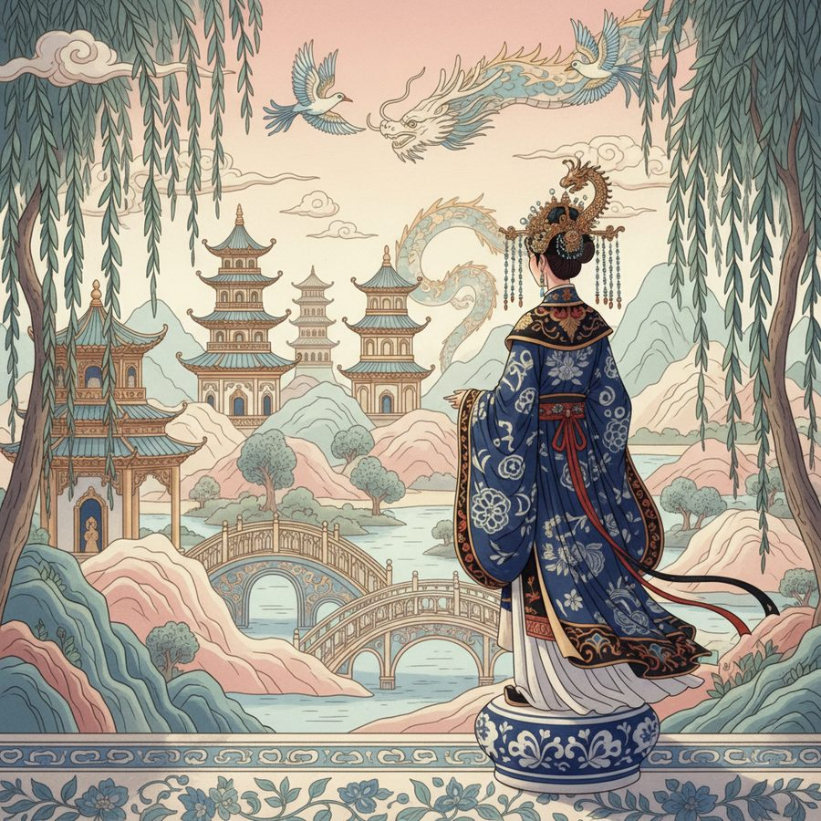
Chinoiserie
Aesthetics WikiArt movement17th–18th centuries · Europe (primarily France)
digital painting or vector illustration (wiki does not specify a medium)
#039
a lone figure standing in an open landscape, Chinoiserie (17th–18th centuries, Europe (primarily France)): decorative nature of Rococo interiors; stylized figures in "Chinese" attire; blue and white porcelain patterns; intricate lattice work; imagined landscapes; weeping willows; exotic birds; Pagodas; dragons. Palette: Blue and white, gold, lacquer red and black, soft pastel backgrounds. Mood: Exoticism, fantasy, playfulness, luxury, ornamentation
Medium: digital painting or vector illustration (wiki does not specify a medium). Lighting: soft directional daylight, subtle chiaroscuro, long shadows. Composition: centered lone figure, wide open landscape, generous negative space, horizon at lower third. Rendering: sharp, high detail.
--no watermark, text artefacts, muddy colour, extra limbs
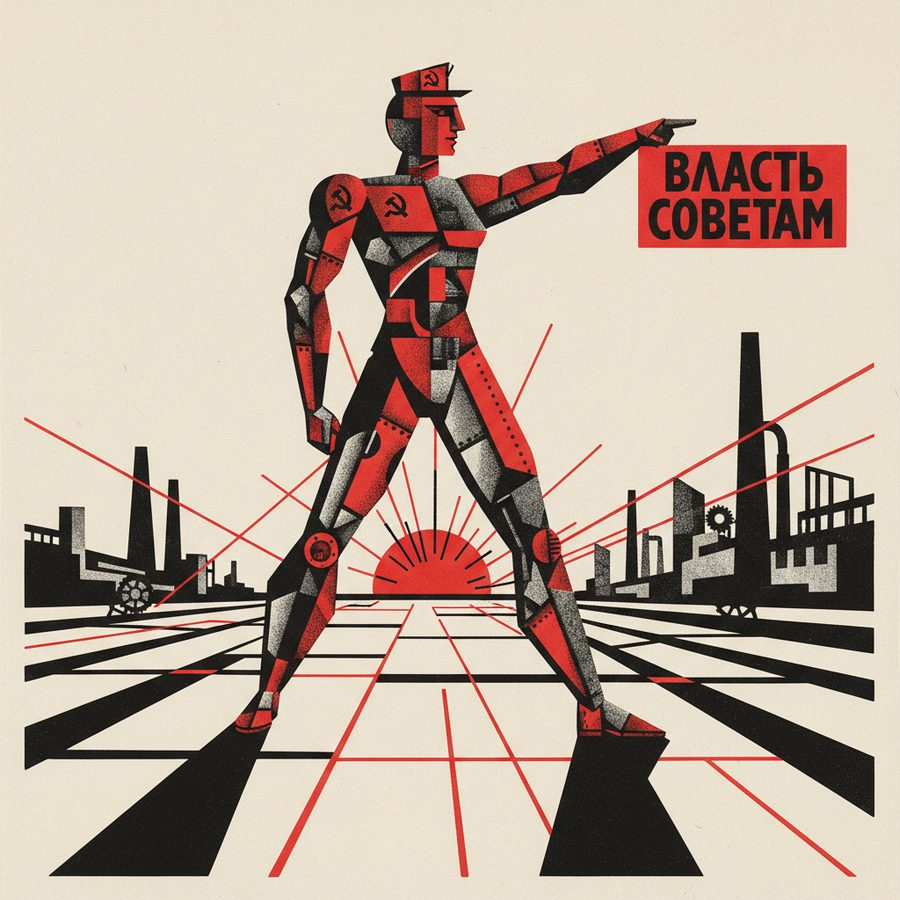
Constructivism
Aesthetics WikiArt movement1910s - 1920s · Soviet Russia
a lone figure standing in an open landscape, Expressionism (1900s-1920s, Germany): Distorted or elongated figures; radical distortion of form; psychological turmoil; agitated brushwork; simplified shapes; urban alienation; woodcut textures; bright colours; raw emotion. Palette: Intense, arbitrary, symbolic, and often dissonant colors, strong, jarring contrasts. Mood: Subjective emotional experience over objective reality, expression of inner psychological states, critique of modern society, spiritual renewal
Medium: lithograph / screenprinted poster, flat ink colour, sharp geometric edges. Lighting: soft directional daylight, subtle chiaroscuro, long shadows. Composition: centered lone figure, wide open landscape, generous negative space, horizon at lower third. Rendering: sharp, high detail.
--no watermark, text artefacts, muddy colour, extra limbs
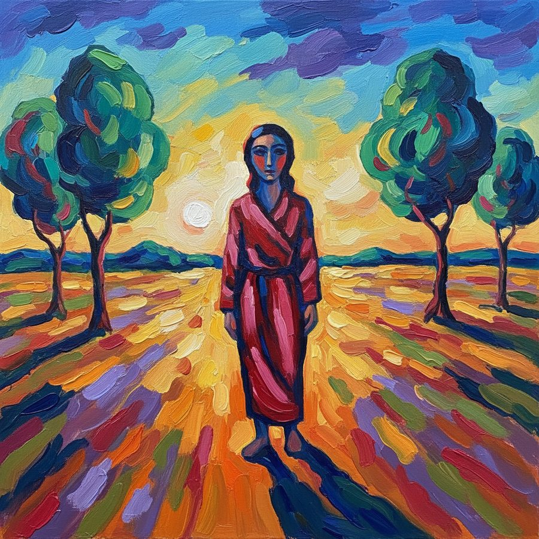
Fauvism
Aesthetics WikiArt movement1900s · Paris, France
oil on canvas, loose painterly brushwork, natural pigment
#045
a lone figure standing in an open landscape, Fauvism (1900s, Paris, France): non-naturalistic colors; flattened perspective; painterly brushwork; vigorous brushwork; schematic figures; Simplified forms; landscapes; portraits. Palette: Intense, pure, non-naturalistic colors, often applied directly from the tube, strong and dissonant color contrasts. Mood: Emotional expression through color, separation of color from descriptive reality, painterly spontaneity
Medium: oil on canvas, loose painterly brushwork, natural pigment. Lighting: soft directional daylight, subtle chiaroscuro, long shadows. Composition: centered lone figure, wide open landscape, generous negative space, horizon at lower third. Rendering: sharp, high detail.
--no watermark, text artefacts, muddy colour, extra limbs
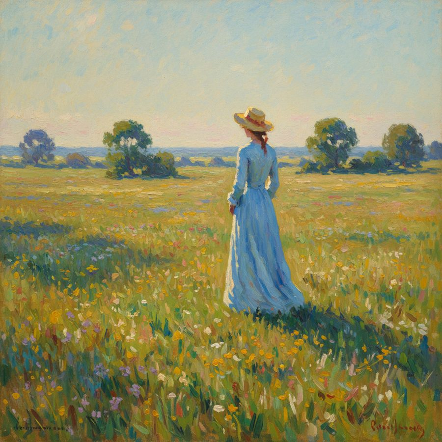
Impressionism
Aesthetics WikiArt movement1870s - 1880s · Paris, France
oil on canvas, loose painterly brushwork, natural pigment
#046
a lone figure standing in an open landscape, Impressionism (1870s - 1880s, Paris, France): leisure activities (boating, cafés, dances); particularly the fleeting effects of light; effects of changing light and atmosphere; Scenes of modern life; urban scenes; landscapes. Palette: Bright, often unmixed colors, emphasis on natural light, broken color, avoidance of black paint. Mood: Capturing the fleeting moment, visual sensation over fine detail, observation of modern life, rejection of academic tradition
Medium: oil on canvas, loose painterly brushwork, natural pigment. Lighting: soft directional daylight, subtle chiaroscuro, long shadows. Composition: centered lone figure, wide open landscape, generous negative space, horizon at lower third. Rendering: sharp, high detail.
--no watermark, text artefacts, muddy colour, extra limbs
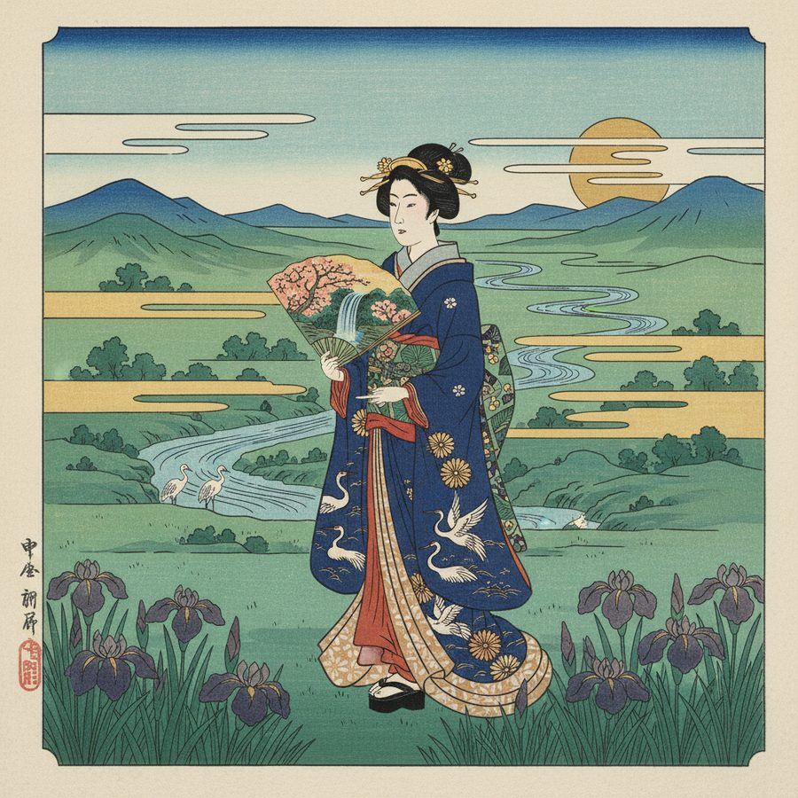
Japonisme
Aesthetics WikiArt movementMid-19th century · Europe and America
woodblock print, flat colour areas, visible paper grain, fine line contours
#047
a lone figure standing in an open landscape, Japonisme (Mid-19th century, Europe and America): flora and fauna (especially birds and flowers); portraits of women; urban scenes; Landscapes; screens; fans. Palette: Vibrant and contrasting colours, often in flat planes, blues, greens, reds, yellows. Mood: Asymmetrical composition, flattened perspective, emphasis on line and pattern, depiction of everyday life, nature-inspired motifs
Medium: woodblock print, flat colour areas, visible paper grain, fine line contours. Lighting: soft directional daylight, subtle chiaroscuro, long shadows. Composition: centered lone figure, wide open landscape, generous negative space, horizon at lower third. Rendering: sharp, high detail.
--no watermark, text artefacts, muddy colour, extra limbs
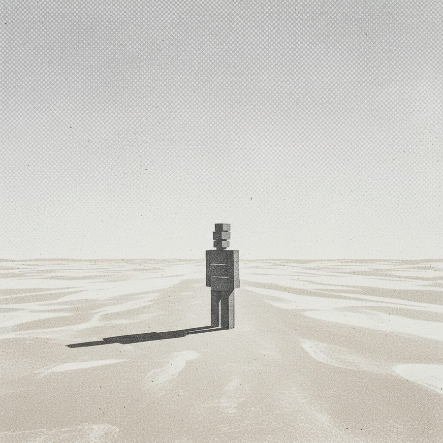
Minimalism
Aesthetics WikiArt movement1960s · — ELLE YAZILDI
screenprint with halftone dots, offset lithography, photocopy grain
#048
a lone figure standing in an open landscape, Minimalism (1960s): empty space and negative space; reductive geometric forms; absence of ornamentation; flat monochrome surfaces; serial repetition. Palette: white, beige, grey, black. Mood: Quality over quantity, decluttering, prioritizing important things, attention to materials and textures, anti-materialism
Medium: screenprint with halftone dots, offset lithography, photocopy grain. Lighting: soft directional daylight, subtle chiaroscuro, long shadows. Composition: centered lone figure, wide open landscape, generous negative space, horizon at lower third. Rendering: sharp, high detail.
--no watermark, text artefacts, muddy colour, extra limbs
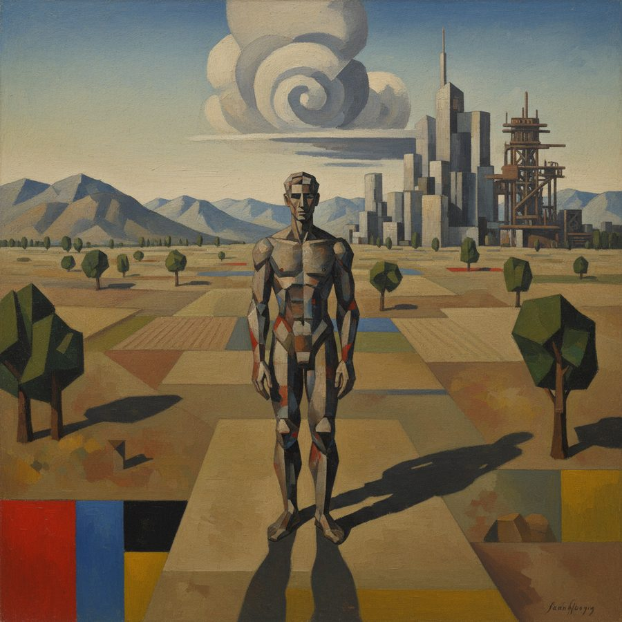
Modernism
Aesthetics WikiArt movementc. 1890s - 1945 · Western Europe
oil on canvas, loose painterly brushwork, natural pigment
#049
a lone figure standing in an open landscape, Modernism (c. 1890s - 1945, Western Europe): search for new forms of expression; subjective reality; geometric shapes; geometric forms; the modern city; fragmentation; Abstraction; machinery. Palette: Varies widely by sub-movement, from the muted tones of Analytic Cubism to the pure primary colors of De Stijl. Mood: Rejection of tradition and historical revivalism, commitment to radical experimentation ("Make it new"), belief in progress, function over ornament, emphasis on individual subjective experience
Medium: oil on canvas, loose painterly brushwork, natural pigment. Lighting: soft directional daylight, subtle chiaroscuro, long shadows. Composition: centered lone figure, wide open landscape, generous negative space, horizon at lower third. Rendering: sharp, high detail.
--no watermark, text artefacts, muddy colour, extra limbs
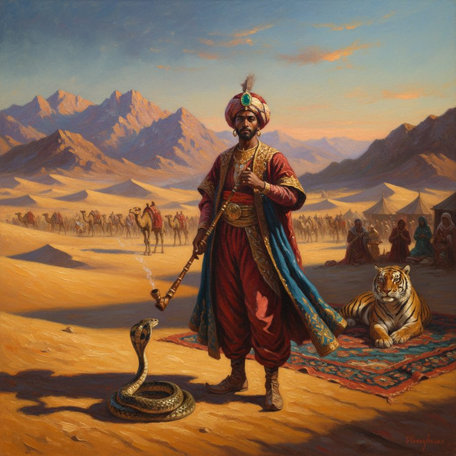
Orientalism
Aesthetics WikiArt movementc. 1820s–1900 · Western Europe (primarily France & Britain)
oil on canvas, loose painterly brushwork, natural pigment
#050
a lone figure standing in an open landscape, Orientalism (c. 1820s–1900, Western Europe (primarily France & Britain)): snake charmers; hookah pipes; odalisques; caravans; bazaars; deserts; Harems; tigers; motifs. Palette: Rich, jewel-toned colors, strong contrasts of light and shadow, use of gold and opulent textures. Mood: Exoticism, fantasy, sensuality, nostalgia, escapism
Medium: oil on canvas, loose painterly brushwork, natural pigment. Lighting: soft directional daylight, subtle chiaroscuro, long shadows. Composition: centered lone figure, wide open landscape, generous negative space, horizon at lower third. Rendering: sharp, high detail.
--no watermark, text artefacts, muddy colour, extra limbs
Post-Impressionism
Aesthetics WikiArt movementc. 1886–1905 · France
oil on canvas, loose painterly brushwork, natural pigment
#051
a lone figure standing in an open landscape, Post-Impressionism (c. 1886–1905, France): Varies by artist: Still lifes (Cézanne); sunflowers and starry nights (Van Gogh); Breton and Tahitian life (Gauguin); unnatural or arbitrary color; Parisian leisure (Seurat); use of vivid colors; distorted forms. Palette: Varies by artist: Intense, symbolic color (Van Gogh, Gauguin), Dotted pure color (Seurat), Structured, form-building color (Cézanne). Mood: Rejection of Impressionism's limitations, emphasis on symbolic content, personal expression, formal order, and structure
Medium: oil on canvas, loose painterly brushwork, natural pigment. Lighting: soft directional daylight, subtle chiaroscuro, long shadows. Composition: centered lone figure, wide open landscape, generous negative space, horizon at lower third. Rendering: sharp, high detail.
--no watermark, text artefacts, muddy colour, extra limbs
Romanesque
Aesthetics WikiArt movementc. 1000–1200 · Europe
oil on canvas, visible brushwork, aged varnish; architecture: fresco and carved stone
#052
a lone figure standing in an open landscape, Romanesque (c. 1000–1200, Europe): stylized sculptural figures; religious narratives; decorative arcades; Rounded arches; massive walls; barrel vaults; large towers; thick piers. Palette: Muted, earthy tones of stone, vibrant colors in frescoes and stained glass. Mood: Christianity (pilgrimage, monasticism), order, durability, divine authority, symbolism over realism
Medium: oil on canvas, visible brushwork, aged varnish; architecture: fresco and carved stone. Lighting: soft directional daylight, subtle chiaroscuro, long shadows. Composition: centered lone figure, wide open landscape, generous negative space, horizon at lower third. Rendering: sharp, high detail.
--no watermark, text artefacts, muddy colour, extra limbs
Ukiyo-e
Aesthetics WikiArt movement17th–19th centuries · Edo, Japan (modern-day Tokyo)
woodblock print, flat colour areas, visible paper grain, fine line contours
#053
a lone figure standing in an open landscape, Ukiyo-e (17th–19th centuries, Edo, Japan (modern-day Tokyo)): Courtesans and beautiful women (bijin-ga); scenes from history and folklore; kabuki actors (yakusha-e); asymmetrical compositions; landscapes (fūkei-ga); sumo wrestlers; unshaded color; vibrant colors; nature scenes. Palette: Rich and varied palettes, often with bold black outlines and flat areas of color. Mood: Appreciation of transient pleasures, urban entertainment culture, beauty, theatricality, observation of nature and daily life
Medium: woodblock print, flat colour areas, visible paper grain, fine line contours. Lighting: soft directional daylight, subtle chiaroscuro, long shadows. Composition: centered lone figure, wide open landscape, generous negative space, horizon at lower third. Rendering: sharp, high detail.
--no watermark, text artefacts, muddy colour, extra limbs
Art Singulier
Aesthetics WikiArt movement1970s · —
screenprint with halftone dots, offset lithography, photocopy grain
#054
a lone figure standing in an open landscape, Art Singulier (1970s): exploration of individual realities; rejection of intellectualism; non-academic techniques; diverse styles. Palette: Bright colors. Mood: Individual creativity, freedom from artistic norms, authenticity, personal vision, emotional expression
Medium: screenprint with halftone dots, offset lithography, photocopy grain. Lighting: soft directional daylight, subtle chiaroscuro, long shadows. Composition: centered lone figure, wide open landscape, generous negative space, horizon at lower third. Rendering: sharp, high detail.
--no watermark, text artefacts, muddy colour, extra limbs
Bohemian
Aesthetics WikiArt movement19th Century · Paris, France
digital painting or vector illustration (wiki does not specify a medium)
#055
a lone figure standing in an open landscape, Bohemian (19th Century, Paris, France): misunderstood figure; Flowing silhouette; artistic pursuits; natural fabrics. Palette: Earthy tones (brown, terracotta, sand), jewel tones (deep red, purple, emerald). Mood: Artistic expression, freedom, non-conformity, creativity, anti-materialism
Medium: digital painting or vector illustration (wiki does not specify a medium). Lighting: soft directional daylight, subtle chiaroscuro, long shadows. Composition: centered lone figure, wide open landscape, generous negative space, horizon at lower third. Rendering: sharp, high detail.
--no watermark, text artefacts, muddy colour, extra limbs
Costumbrismo
Aesthetics WikiArt movement19th century · Spain
digital painting or vector illustration (wiki does not specify a medium)
#056
a lone figure standing in an open landscape, Costumbrismo (19th century, Spain): traditional architecture; use of broad brushwork; Everyday life scenes; regional landscapes; regional clothing; social gatherings; religious imagery; archetypes. Palette: Natural colours. Mood: Tradition, community, realism, social observation, regionalism
Medium: digital painting or vector illustration (wiki does not specify a medium). Lighting: soft directional daylight, subtle chiaroscuro, long shadows. Composition: centered lone figure, wide open landscape, generous negative space, horizon at lower third. Rendering: sharp, high detail.
--no watermark, text artefacts, muddy colour, extra limbs
a lone figure standing in an open landscape, Dau al Set (c. 1948–1951, Barcelona, Catalonia, Spain): mythological figures; dreamlike landscapes; fantastic creatures; Surrealist imagery; mystical symbols. Palette: Varies by artist, often dark and earthy palettes. Mood: Avant-gardism, artistic freedom, anti-Francoism, Catalan cultural revival, philosophical exploration
Medium: lithograph / screenprinted poster, flat ink colour, sharp geometric edges. Lighting: soft directional daylight, subtle chiaroscuro, long shadows. Composition: centered lone figure, wide open landscape, generous negative space, horizon at lower third. Rendering: sharp, high detail.
--no watermark, text artefacts, muddy colour, extra limbs
oil on canvas, visible brushwork, aged varnish; architecture: fresco and carved stone
#060
a lone figure standing in an open landscape, Dutch Golden Age (c. 1600 - 1700, Dutch Republic (Netherlands)): still lifes (vanitas, floral, banquet); individual and group portraits; extraordinary mastery of light; Genre scenes (domestic life); landscapes; seascapes; texture. Palette: Somber, earthy tones (browns, ochres, grays), masterful use of light and shadow (chiaroscuro), accents of brilliant color. Mood: Realism, observation of daily life, Protestant morality, civic pride, prosperity
Medium: oil on canvas, visible brushwork, aged varnish; architecture: fresco and carved stone. Lighting: soft directional daylight, subtle chiaroscuro, long shadows. Composition: centered lone figure, wide open landscape, generous negative space, horizon at lower third. Rendering: sharp, high detail.
--no watermark, text artefacts, muddy colour, extra limbs
a lone figure standing in an open landscape, Glasgow Style: stronger emphasis on geometric forms; ethereal human figures; vertical lines
Medium: lithograph / screenprinted poster, flat ink colour, sharp geometric edges. Lighting: soft directional daylight, subtle chiaroscuro, long shadows. Composition: centered lone figure, wide open landscape, generous negative space, horizon at lower third. Rendering: sharp, high detail.
--no watermark, text artefacts, muddy colour, extra limbs
Glitch Art
Aesthetics WikiArt movementMid-20th century (precursors); 1990s-2000s (as a distinct art movement) · —
digital render / CRT scanlines / VHS artefacts / early-2000s web graphic
#062
a lone figure standing in an open landscape, Glitch Art (Mid-20th century (precursors); 1990s-2000s (as a distinct art movement)): unexpected changes in color; Digital artifacts; data corruption; pattern breakup; color bleeding; fragmentation; color shifts; pixelation; static. Mood: Embracing error and failure, randomness, critique of technology, deconstruction of media
Medium: digital render / CRT scanlines / VHS artefacts / early-2000s web graphic. Lighting: soft directional daylight, subtle chiaroscuro, long shadows. Composition: centered lone figure, wide open landscape, generous negative space, horizon at lower third. Rendering: sharp, high detail.
--no watermark, text artefacts, muddy colour, extra limbs
Heidelberg School
Aesthetics WikiArt movement1880s · Heidelberg, Melbourne, Australia
oil on canvas, loose painterly brushwork, natural pigment
#063
a lone figure standing in an open landscape, Heidelberg School (1880s, Heidelberg, Melbourne, Australia): peoples' interaction with nature and the country; display of humid rural environments; simple daily life in Australia; loose and rapid brushstrokes; bright colours and shading; "En Plein Air settings"; landscape composition; loose brushwork. Palette: Warm muted colours such as golden yellows, ochre yellows and oranges, deep brownish reds, light mossy yellow green shades, muted blue palettes. Mood: Authenticity of life, Australian nationalism, appreciation for rural environments, romanticised viewpoints of living in the country
Medium: oil on canvas, loose painterly brushwork, natural pigment. Lighting: soft directional daylight, subtle chiaroscuro, long shadows. Composition: centered lone figure, wide open landscape, generous negative space, horizon at lower third. Rendering: sharp, high detail.
--no watermark, text artefacts, muddy colour, extra limbs
Italian Renaissance
Aesthetics WikiArt movement14th-16th Centuries · Italian Peninsula
oil on canvas, visible brushwork, aged varnish; architecture: fresco and carved stone
#064
a lone figure standing in an open landscape, Italian Renaissance (14th-16th Centuries, Italian Peninsula): subtle gradations of light; religious narratives; Classical antiquity; portraiture; allegory; shadow. Palette: Luminous colors, chiaroscuro, sfumato, and cangiante. Mood: Humanism, classicism, realism, individualism
Medium: oil on canvas, visible brushwork, aged varnish; architecture: fresco and carved stone. Lighting: soft directional daylight, subtle chiaroscuro, long shadows. Composition: centered lone figure, wide open landscape, generous negative space, horizon at lower third. Rendering: sharp, high detail.
--no watermark, text artefacts, muddy colour, extra limbs
Lowbrow
Aesthetics WikiArt movementLate 1960s-Present · —
screenprint with halftone dots, offset lithography, photocopy grain
#065
a lone figure standing in an open landscape, Lowbrow (Late 1960s-Present): pop culture icons; surreal figures; retro imagery; Cartoons. Palette: Vibrant/saturated colors. Mood: Anti-establishment, accessibility, individual expression, subcultural influence, challenging artistic norms
Medium: screenprint with halftone dots, offset lithography, photocopy grain. Lighting: soft directional daylight, subtle chiaroscuro, long shadows. Composition: centered lone figure, wide open landscape, generous negative space, horizon at lower third. Rendering: sharp, high detail.
--no watermark, text artefacts, muddy colour, extra limbs
Mail Art
Aesthetics WikiArt movement1950s-1960s · New York City, United States
screenprint with halftone dots, offset lithography, photocopy grain
#066
a lone figure standing in an open landscape, Mail Art (1950s-1960s, New York City, United States): poems to figures in the art world; collage and photomontage; decorated envelopes; hand-lettering; Rubber stamps; artistamps; xerography. Mood: Anti-commercialism, egalitarian exchange, inclusion, networking
Medium: screenprint with halftone dots, offset lithography, photocopy grain. Lighting: soft directional daylight, subtle chiaroscuro, long shadows. Composition: centered lone figure, wide open landscape, generous negative space, horizon at lower third. Rendering: sharp, high detail.
--no watermark, text artefacts, muddy colour, extra limbs
a lone figure standing in an open landscape, Mexican Muralism (1920s-1950s, Mexico): historical narratives; revolutionary themes; Indigenous imagery; national identity; fresco painting; vibrant colors. Palette: Vibrant colors. Mood: Social justice, revolution, education, national pride, indigenous representation
Medium: lithograph / screenprinted poster, flat ink colour, sharp geometric edges. Lighting: soft directional daylight, subtle chiaroscuro, long shadows. Composition: centered lone figure, wide open landscape, generous negative space, horizon at lower third. Rendering: sharp, high detail.
--no watermark, text artefacts, muddy colour, extra limbs
Money Art
Aesthetics WikiArt movementPrecursors in the 19th century; established as an ongoing practice from the 1970s onward · —
screenprint with halftone dots, offset lithography, photocopy grain
#068
a lone figure standing in an open landscape, Money Art (Precursors in the 19th century; established as an ongoing practice from the 1970s onward): guilloche and engraving-style line work; reglued into entirely new figures; engraved presidential portraits; collage fragments of currency; trompe l'oeil realism; Banknote portraits; serial numbers; green tones; scenes. Palette: Varies by the national currency used (US dollar-based works: green, black, and cream). Mood: Skepticism toward the authority and socially constructed value of money, critique of capitalism and wealth, interrogation of trust in fiat currency
Medium: screenprint with halftone dots, offset lithography, photocopy grain. Lighting: soft directional daylight, subtle chiaroscuro, long shadows. Composition: centered lone figure, wide open landscape, generous negative space, horizon at lower third. Rendering: sharp, high detail.
--no watermark, text artefacts, muddy colour, extra limbs
Neo-Pop
Aesthetics WikiArt movement1980s · United States
digital render / CRT scanlines / VHS artefacts / early-2000s web graphic
#069
a lone figure standing in an open landscape, Neo-Pop (1980s, United States): use of bright colors; cartoon characters; polished surfaces; Everyday objects; diverse patterns; celebrity icons; balloon animals; consumer goods; appropriation. Palette: Bright, saturated, commercial colors. Mood: Appropriation, critique of consumerism, embracing banality, blurring lines between high art and mass culture
Medium: digital render / CRT scanlines / VHS artefacts / early-2000s web graphic. Lighting: soft directional daylight, subtle chiaroscuro, long shadows. Composition: centered lone figure, wide open landscape, generous negative space, horizon at lower third. Rendering: sharp, high detail.
--no watermark, text artefacts, muddy colour, extra limbs
Net.art
Aesthetics WikiArt movement1990s · —
digital render / CRT scanlines / VHS artefacts / early-2000s web graphic
#070
a lone figure standing in an open landscape, Net.art (1990s): early website aesthetics; social networking; Web browsers; online forms; digital data; hyperlinks; HTML code; glitches. Palette: The basic color schemes of early websites (primarily). Mood: Connectivity, interactivity, immateriality, challenging traditional art structures, exploring the internet as a medium and subject
Medium: digital render / CRT scanlines / VHS artefacts / early-2000s web graphic. Lighting: soft directional daylight, subtle chiaroscuro, long shadows. Composition: centered lone figure, wide open landscape, generous negative space, horizon at lower third. Rendering: sharp, high detail.
--no watermark, text artefacts, muddy colour, extra limbs
Op Art
Aesthetics WikiArt movement1960s (origins dating back to the 1930s) · —
a lone figure standing in an open landscape, Op Art (1960s (origins dating back to the 1930s)): high contrast (often black and white); investigate how colors interact; use of abstract patterns; perceived movement; Geometric shapes; vibrating colors; moiré effects; after-images; lines. Mood: Perception, illusion, scientific inquiry, visual experimentation, challenging the eye
Medium: lithograph / screenprinted poster, flat ink colour, sharp geometric edges. Lighting: soft directional daylight, subtle chiaroscuro, long shadows. Composition: centered lone figure, wide open landscape, generous negative space, horizon at lower third. Rendering: sharp, high detail.
--no watermark, text artefacts, muddy colour, extra limbs
PC Music
Aesthetics WikiArt movement2010s · London, United Kingdom
digital render / CRT scanlines / VHS artefacts / early-2000s web graphic
#072
a lone figure standing in an open landscape, PC Music (2010s, London, United Kingdom): hyper-real textures (water, metal, plastic); experimental electronic textures; devised pop star personas; unexpected sound textures; early 2000s web design; corporate branding; Glossy CGI. Palette: Hyper-saturated pinks, blues, neons, metallic silver. Mood: Artificiality, consumerism (critique/celebration), internet culture, experimental pop, nostalgia
Medium: digital render / CRT scanlines / VHS artefacts / early-2000s web graphic. Lighting: soft directional daylight, subtle chiaroscuro, long shadows. Composition: centered lone figure, wide open landscape, generous negative space, horizon at lower third. Rendering: sharp, high detail.
--no watermark, text artefacts, muddy colour, extra limbs
Pop Art
Aesthetics WikiArt movement1950s · United Kingdom, United States
screenprint with halftone dots, offset lithography, photocopy grain
#073
a lone figure standing in an open landscape, Pop Art (1950s, United Kingdom, United States): commercial art techniques; celebrity portraits; mass media imagery; saturated colors; Consumer goods; bold outlines; bright colors; Ben-Day dots; bold lines. Palette: Saturated primary and secondary colors. Mood: Critique and celebration of consumerism, mass culture, anti-elitism, humor, irony
Medium: screenprint with halftone dots, offset lithography, photocopy grain. Lighting: soft directional daylight, subtle chiaroscuro, long shadows. Composition: centered lone figure, wide open landscape, generous negative space, horizon at lower third. Rendering: sharp, high detail.
--no watermark, text artefacts, muddy colour, extra limbs
a lone figure standing in an open landscape, Precisionism (Mid 1920s): reducing details to a graphic form; Urban and industrial landscapes; geometric compositions; minimal form; skyscrapers; liminality; factories; bridges. Mood: Industrialization, modernization
Medium: lithograph / screenprinted poster, flat ink colour, sharp geometric edges. Lighting: soft directional daylight, subtle chiaroscuro, long shadows. Composition: centered lone figure, wide open landscape, generous negative space, horizon at lower third. Rendering: sharp, high detail.
--no watermark, text artefacts, muddy colour, extra limbs
Psychedelia
Aesthetics WikiArt movement1960s · San Francisco and London
screenprint with halftone dots, offset lithography, photocopy grain
#075
a lone figure standing in an open landscape, Psychedelia (1960s, San Francisco and London): altered states of consciousness; featuring swirling patterns; vibrant color palettes; day-glo color palettes; Distorted visuals; optical illusions; surreal imagery; themes of love; organic forms. Mood: Counterculture, exploration of consciousness, altered perception, artistic experimentation, spiritual exploration
Medium: screenprint with halftone dots, offset lithography, photocopy grain. Lighting: soft directional daylight, subtle chiaroscuro, long shadows. Composition: centered lone figure, wide open landscape, generous negative space, horizon at lower third. Rendering: sharp, high detail.
--no watermark, text artefacts, muddy colour, extra limbs
screenprint with halftone dots, offset lithography, photocopy grain
#076
a lone figure standing in an open landscape, Radical Design (1960s, Florence, Italy): focused on urban architecture; speculation on future cities; critique of consumerism; Unconventional forms; unique shapes. Palette: Bold and varied. Mood: Challenging norms, experimentation, social and political commentary, questioning beauty standards
Medium: screenprint with halftone dots, offset lithography, photocopy grain. Lighting: soft directional daylight, subtle chiaroscuro, long shadows. Composition: centered lone figure, wide open landscape, generous negative space, horizon at lower third. Rendering: sharp, high detail.
--no watermark, text artefacts, muddy colour, extra limbs
Realism
Aesthetics WikiArt movement1840s · France
oil on canvas, loose painterly brushwork, natural pigment
#077
a lone figure standing in an open landscape, Realism (1840s, France): landscapes without romanticization; scenes of everyday life; the working class; unidealized nudes; Rural laborers; mundane scenes. Palette: Earthy tones, somber palettes, faithful representation of natural light, avoidance of artificial or overly dramatic color. Mood: Truth and accuracy, observation of contemporary life, rejection of idealization and Romantic emotionalism, social consciousness
Medium: oil on canvas, loose painterly brushwork, natural pigment. Lighting: soft directional daylight, subtle chiaroscuro, long shadows. Composition: centered lone figure, wide open landscape, generous negative space, horizon at lower third. Rendering: sharp, high detail.
--no watermark, text artefacts, muddy colour, extra limbs
Renovador Movement
Aesthetics WikiArt movement1920s–1930s · Galicia, Spain (including the Galician diaspora)
a lone figure standing in an open landscape, Retrofuturism (Late 19th Century – Early 20th Century): juxtaposition of outdated aesthetics with advanced concepts; Imagined future technologies from a past perspective; optimistic or dystopian visions of progress; industrial tones of Dieselpunk; fantastical architecture; space exploration; geometric shapes; flying vehicles; rayguns. Palette: Varies by subgenre (e.g., chrome, pastels, muted industrial tones, vibrant atomic-age colors)
Medium: lithograph / screenprinted poster, flat ink colour, sharp geometric edges. Lighting: soft directional daylight, subtle chiaroscuro, long shadows. Composition: centered lone figure, wide open landscape, generous negative space, horizon at lower third. Rendering: sharp, high detail.
--no watermark, text artefacts, muddy colour, extra limbs
Romanticism
Aesthetics WikiArt movementLate 18th to mid 19th centuries · —
oil on canvas, loose painterly brushwork, natural pigment
#080
a lone figure standing in an open landscape, Romanticism (Late 18th to mid 19th centuries): Nature (especially untamed, wild, and sublime); dynamic compositions; the medieval past; the supernatural; heightened color; folk traditions; nationalism; exoticism; heroism. Mood: Emotion and intuition over reason, individualism, imagination, subjectivity, transcendence
Medium: oil on canvas, loose painterly brushwork, natural pigment. Lighting: soft directional daylight, subtle chiaroscuro, long shadows. Composition: centered lone figure, wide open landscape, generous negative space, horizon at lower third. Rendering: sharp, high detail.
--no watermark, text artefacts, muddy colour, extra limbs
a lone figure standing in an open landscape, Russian Cosmism (1900s, Russia): avant-garde geometric compositions; interstellar landscapes; Cosmic nebulae. Palette: Black, blue, metallics
Medium: lithograph / screenprinted poster, flat ink colour, sharp geometric edges. Lighting: soft directional daylight, subtle chiaroscuro, long shadows. Composition: centered lone figure, wide open landscape, generous negative space, horizon at lower third. Rendering: sharp, high detail.
--no watermark, text artefacts, muddy colour, extra limbs
Signalism
Aesthetics WikiArt movementLate 1960s–1970s · Novi Sad, Yugoslavia
screenprint with halftone dots, offset lithography, photocopy grain
#082
a lone figure standing in an open landscape, Signalism (Late 1960s–1970s, Novi Sad, Yugoslavia): linguistic signs (letters, punctuation); symbols drawn from science; abstract geometric shapes; mathematical formulas; machine-like diagrams; Scientific symbols; celestial bodies; visual poetry; arrows. Palette: Often black, white, and red. Mood: Experimentation, anti-traditionalism, synthesizing science and art, exploring language as a material, "scientification" of poetry
Medium: screenprint with halftone dots, offset lithography, photocopy grain. Lighting: soft directional daylight, subtle chiaroscuro, long shadows. Composition: centered lone figure, wide open landscape, generous negative space, horizon at lower third. Rendering: sharp, high detail.
--no watermark, text artefacts, muddy colour, extra limbs
a lone figure standing in an open landscape, Sinofuturism (2010s): audio-visual landscape of China’s urban; artificial intelligence; space exploration; Infrastructure; Chinese cities; electronics. Palette: Red, blue, beige, metallics. Mood: Cultural identity, reflection and prospect on modern technology
Medium: lithograph / screenprinted poster, flat ink colour, sharp geometric edges. Lighting: soft directional daylight, subtle chiaroscuro, long shadows. Composition: centered lone figure, wide open landscape, generous negative space, horizon at lower third. Rendering: sharp, high detail.
--no watermark, text artefacts, muddy colour, extra limbs
Superflat
Aesthetics WikiArt movementLate 1990s · —
screenprint with halftone dots, offset lithography, photocopy grain
#084
a lone figure standing in an open landscape, Superflat (Late 1990s): Combining the flat imagery of Japanese pop culture with traditional elements and disturbing topics; along with pronounced chromatic palette; high-contrast palette; super bright colours; geometric shapes; bold outlines. Mood: Flatness, shallowness, consumerism, satire, otaku culture
Medium: screenprint with halftone dots, offset lithography, photocopy grain. Lighting: soft directional daylight, subtle chiaroscuro, long shadows. Composition: centered lone figure, wide open landscape, generous negative space, horizon at lower third. Rendering: sharp, high detail.
--no watermark, text artefacts, muddy colour, extra limbs
a lone figure standing in an open landscape, Suprematism (1910s, Russian Empire): Basic geometric forms (squares, circles, crosses, rectangles); non-objective compositions; forms floating in space; limited range of colors; flat planes of color; lines). Palette: Limited palettes, including black, white, red, and other pure colors, typically against a white background. Mood: Supremacy of pure artistic feeling, non-objectivity, spiritual liberation through abstraction, rejection of mimetic representation, a universal artistic language
Medium: lithograph / screenprinted poster, flat ink colour, sharp geometric edges. Lighting: soft directional daylight, subtle chiaroscuro, long shadows. Composition: centered lone figure, wide open landscape, generous negative space, horizon at lower third. Rendering: sharp, high detail.
--no watermark, text artefacts, muddy colour, extra limbs
Surrealism
Aesthetics WikiArt movement1920s–1950s · Paris, France
oil on canvas, loose painterly brushwork, natural pigment
#086
a lone figure standing in an open landscape, Surrealism (1920s–1950s, Paris, France): everyday objects in strange contexts; unexpected juxtapositions; mythological symbols; biomorphic forms. Palette: Varies widely by artist. Mood: Unlocking the unconscious, freedom from reason, psychological truth, revolution (personal and social), the marvelous
Medium: oil on canvas, loose painterly brushwork, natural pigment. Lighting: soft directional daylight, subtle chiaroscuro, long shadows. Composition: centered lone figure, wide open landscape, generous negative space, horizon at lower third. Rendering: sharp, high detail.
--no watermark, text artefacts, muddy colour, extra limbs
a lone figure standing in an open landscape, Vorticism (1910s (c. 1914–1917), London, United Kingdom): dynamism captured in a static moment (the "vortex"); urban scenes rendered with sharp lines; angular and geometric forms; hard-edged lines; urban landscapes; bold typography; The machine. Palette: Harsh, bold color combinations, strong use of black and white. Mood: Machine-age energy, anti-sentimentality, embracing modernity, a rejection of both Victorian naturalism and the perceived chaos of Futurism
Medium: lithograph / screenprinted poster, flat ink colour, sharp geometric edges. Lighting: soft directional daylight, subtle chiaroscuro, long shadows. Composition: centered lone figure, wide open landscape, generous negative space, horizon at lower third. Rendering: sharp, high detail.
--no watermark, text artefacts, muddy colour, extra limbs
Celtic Revival
Aesthetics WikiArt movementLate 19th Century · Ireland
digital painting or vector illustration (wiki does not specify a medium)
#089
a lone figure standing in an open landscape, Celtic Revival (Late 19th Century, Ireland): mythological figures (Cú Chulainn, Tuatha Dé Danann); ancient manuscripts (Book of Kells); spirals (triskelions); pastoral landscapes; Celtic knots; folklore. Palette: Green, Sage Yellow, Brown. Mood: Nationalism, romanticism, mysticism, anti-modernism, cultural identity
Medium: digital painting or vector illustration (wiki does not specify a medium). Lighting: soft directional daylight, subtle chiaroscuro, long shadows. Composition: centered lone figure, wide open landscape, generous negative space, horizon at lower third. Rendering: sharp, high detail.
--no watermark, text artefacts, muddy colour, extra limbs
Danish Golden Age
Aesthetics WikiArt movementEarly 19th century (c. 1801-1864) · Denmark
oil on canvas, visible brushwork, aged varnish; architecture: fresco and carved stone
#090
a lone figure standing in an open landscape, Danish Golden Age (Early 19th century (c. 1801-1864), Denmark): distinctive rendering of the Nordic light; portraits of artists and citizens; genre scenes of everyday life; Neoclassical architecture; Copenhagen cityscapes; scenes of daily life; Danish landscapes. Palette: Soft, natural light with strong color contrasts, muted tones and vibrant accents. Mood: National identity, idealized realism, detailed observation, depictions of daily life, landscape
Medium: oil on canvas, visible brushwork, aged varnish; architecture: fresco and carved stone. Lighting: soft directional daylight, subtle chiaroscuro, long shadows. Composition: centered lone figure, wide open landscape, generous negative space, horizon at lower third. Rendering: sharp, high detail.
--no watermark, text artefacts, muddy colour, extra limbs
Decadence
Aesthetics WikiArt movementLate-19th century · —
digital painting or vector illustration (wiki does not specify a medium)
#091
a lone figure standing in an open landscape, Decadence (Late-19th century): Exotic flowers (orchids, lilies); artificiality; morbid beauty; opium poppies; androgyny; absinthe; Salomé; decay. Palette: Deep purples, blacks, golds, jewel tones (emerald, ruby, sapphire), sickly greens. Mood: Self-indulgence, sensuality, artifice, the macabre, anti-bourgeois sentiment
Medium: digital painting or vector illustration (wiki does not specify a medium). Lighting: soft directional daylight, subtle chiaroscuro, long shadows. Composition: centered lone figure, wide open landscape, generous negative space, horizon at lower third. Rendering: sharp, high detail.
--no watermark, text artefacts, muddy colour, extra limbs
Gulf Futurism
Aesthetics WikiArt movement2008 · The Middle East Gulf Area
a lone figure standing in an open landscape, Gulf Futurism (2008, The Middle East Gulf Area): Arabian Gulf traditional ornaments; petroleum industries; off-road vehicles; geometric forms; skyscrapers. Mood: Hypermodernity, paradox of prosperity, globalization, surrealism
Medium: lithograph / screenprinted poster, flat ink colour, sharp geometric edges. Lighting: soft directional daylight, subtle chiaroscuro, long shadows. Composition: centered lone figure, wide open landscape, generous negative space, horizon at lower third. Rendering: sharp, high detail.
--no watermark, text artefacts, muddy colour, extra limbs
Mannerism
Aesthetics WikiArt movement1520s · Italy
oil on canvas, visible brushwork, aged varnish; architecture: fresco and carved stone
#093
a lone figure standing in an open landscape, Mannerism (1520s, Italy): intense and unnatural colors; strained or twisting poses; elongated proportions; strange perspectives; exaggerated forms; Elongated limbs
Medium: oil on canvas, visible brushwork, aged varnish; architecture: fresco and carved stone. Lighting: soft directional daylight, subtle chiaroscuro, long shadows. Composition: centered lone figure, wide open landscape, generous negative space, horizon at lower third. Rendering: sharp, high detail.
--no watermark, text artefacts, muddy colour, extra limbs
Photorealism
Aesthetics WikiArt movementLate 1960s–1970s · United States
oil on canvas, loose painterly brushwork, natural pigment
#094
a lone figure standing in an open landscape, Photorealism (Late 1960s–1970s, United States): Reflective surfaces (storefronts, cars, chrome); still lifes of everyday objects; urban landscapes; motorcycles; portraits; diners. Palette: Colors are dictated by the source photograph, aiming for documentary accuracy. Mood: Technical virtuosity, objectivity, documentary precision, rejection of abstraction, interest in the nature of vision and photography
Medium: oil on canvas, loose painterly brushwork, natural pigment. Lighting: soft directional daylight, subtle chiaroscuro, long shadows. Composition: centered lone figure, wide open landscape, generous negative space, horizon at lower third. Rendering: sharp, high detail.
--no watermark, text artefacts, muddy colour, extra limbs
Purism
Aesthetics WikiArt movementc. 1918–1925 · Paris, France
a lone figure standing in an open landscape, Purism (c. 1918–1925, Paris, France): Everyday objects (bottles, glasses, pipes); subdued palette of flat colors; simplified geometric forms; architectonic compositions; machine-like precision; balanced compositions; clean outlines. Palette: Subdued, flat colors, often earthy tones like ochre, brown, green, and gray. Mood: Order, rationality, precision, universality, functionalism
Medium: lithograph / screenprinted poster, flat ink colour, sharp geometric edges. Lighting: soft directional daylight, subtle chiaroscuro, long shadows. Composition: centered lone figure, wide open landscape, generous negative space, horizon at lower third. Rendering: sharp, high detail.
--no watermark, text artefacts, muddy colour, extra limbs
Symbolism
Aesthetics WikiArt movementLate-19th century · —
oil on canvas, loose painterly brushwork, natural pigment
#096
a lone figure standing in an open landscape, Symbolism (Late-19th century): psychological truths through forms; the subconscious; compositions; the occult; the erotic; visions; colours; myths; death. Palette: Often muted or evocative colours, use of light and shadow to create mood. Mood: Subjectivity, emotion, spirituality, the power of suggestion, exploration of inner experience
Medium: oil on canvas, loose painterly brushwork, natural pigment. Lighting: soft directional daylight, subtle chiaroscuro, long shadows. Composition: centered lone figure, wide open landscape, generous negative space, horizon at lower third. Rendering: sharp, high detail.
--no watermark, text artefacts, muddy colour, extra limbs
collage and photomontage, newsprint, hard-edged cut shapes
#097
a lone figure standing in an open landscape, Dadaism (1910s (c. 1916–1924), Zurich, Switzerland): The readymade, collage and photomontage, chance operations, nonsense poetry, provocative performance, appropriation of mass media. Palette: Varies, often black, white, and red in graphic design. Mood: Anti-art, irrationality, absurdity, chance, protest, nihilism, rejection of bourgeois logic
Medium: collage and photomontage, newsprint, hard-edged cut shapes. Lighting: soft directional daylight, subtle chiaroscuro, long shadows. Composition: centered lone figure, wide open landscape, generous negative space, horizon at lower third. Rendering: sharp, high detail.
--no watermark, text artefacts, muddy colour, extra limbs
Empire Style
Aesthetics WikiArt movement1800s |location_of_origin = Paris, France |key_motifs = Napoleonic symbols (eagle, bee, letter 'N'), Greco-Roman figures (Nike, swans, sphinxes, lyres), Egyptian Revival elements (lotus capitals, scarabs), military trophies, laurel wreaths |key_colours = Rich, bold colors (emerald green, deep blue, crimson, gold) with dark woods |key_values = Imperial glory, power, authority, order, symmetry, grandeur, classicism |related_aesthetics = Biedermeier Egyptian Revival Federal Style Greek Revival Neoclassicism Regency Style · Paris, France |key_motifs = Napoleonic symbols (eagle, bee, letter 'N'), Greco-Roman figures (Nike, swans, sphinxes, lyres), Egyptian Revival elements (lotus capitals, scarabs), military trophies, laurel wreaths |key_colours = Rich, bold colors (emerald green, deep blue, crimson, gold) with dark woods |key_values = Imperial glory, power, authority, order, symmetry, grandeur, classicism |related_aesthetics = Biedermeier Egyptian Revival Federal Style Greek Revival Neoclassicism Regency Style
oil on canvas, decorative detail, aged varnish
#098
a lone figure standing in an open landscape, Empire Style (1800s |location_of_origin = Paris, France |key_motifs = Napoleonic symbols (eagle, bee, letter 'N'), Greco-Roman figures (Nike, swans, sphinxes, lyres), Egyptian Revival elements (lotus capitals, scarabs), military trophies, laurel wreaths |key_colours = Rich, bold colors (emerald green, deep blue, crimson, gold) with dark woods |key_values = Imperial glory, power, authority, order, symmetry, grandeur, classicism |related_aesthetics = Biedermeier Egyptian Revival Federal Style Greek Revival Neoclassicism Regency Style, Paris, France |key_motifs = Napoleonic symbols (eagle, bee, letter 'N'), Greco-Roman figures (Nike, swans, sphinxes, lyres), Egyptian Revival elements (lotus capitals, scarabs), military trophies, laurel wreaths |key_colours = Rich, bold colors (emerald green, deep blue, crimson, gold) with dark woods |key_values = Imperial glory, power, authority, order, symmetry, grandeur, classicism |related_aesthetics = Biedermeier Egyptian Revival Federal Style Greek Revival Neoclassicism Regency Style): Napoleonic symbols (eagle, bee, letter 'N'), Greco-Roman figures (Nike, swans, sphinxes, lyres), Egyptian Revival elements (lotus capitals, scarabs), military trophies, laurel wreaths |key_colours = Rich, bold colors (emerald green, deep blue, crimson, gold) with dark woods |key_values = Imperial glory, power, authority, order, symmetry, grandeur, classicism |related_aesthetics = Biedermeier Egyptian Revival Federal Style Greek Revival Neoclassicism Regency Style. Palette: Rich, bold colors (emerald green, deep blue, crimson, gold) with dark woods |key_values = Imperial glory, power, authority, order, symmetry, grandeur, classicism |related_aesthetics = Biedermeier Egyptian Revival Federal Style Greek Revival Neoclassicism Regency Style. Mood: Imperial glory, power, authority, order, symmetry, grandeur, classicism |related_aesthetics = Biedermeier Egyptian Revival Federal Style Greek Revival Neoclassicism Regency Style
Medium: oil on canvas, decorative detail, aged varnish. Lighting: soft directional daylight, subtle chiaroscuro, long shadows. Composition: centered lone figure, wide open landscape, generous negative space, horizon at lower third. Rendering: sharp, high detail.
--no watermark, text artefacts, muddy colour, extra limbs
Turquerie
Aesthetics WikiArt movement16th-18th Centuries (peak in 18th century) · Western Europe (particularly France)
oil on canvas, decorative detail, aged varnish
#099
a lone figure standing in an open landscape, Turquerie (16th-18th Centuries (peak in 18th century), Western Europe (particularly France)): Turbans, caftans, coffee houses, harem scenes, Turkish carpets, pavilions, floral patterns (tulips, carnations). Palette: Rich jewel tones (deep reds, blues, greens), gold. Mood: Exoticism, fantasy, luxury, worldliness, cultural curiosity
Medium: oil on canvas, decorative detail, aged varnish. Lighting: soft directional daylight, subtle chiaroscuro, long shadows. Composition: centered lone figure, wide open landscape, generous negative space, horizon at lower third. Rendering: sharp, high detail.
--no watermark, text artefacts, muddy colour, extra limbs
New Ugly
Aesthetics WikiArt movementLate 2010s · China, East Asia
digital render and crude collage, photocopy grain
#100
a lone figure standing in an open landscape, New Ugly (Late 2010s, China, East Asia): Bright colors, messy and deconstructed fonts, unbalanced layouts, rough textures. Palette: Saturated, neon colors. Mood: Rejecting the harmonious and polished visuals of commercial and artistic design Reveling deliberately over-the-top and being the intensely authenticity
Medium: digital render and crude collage, photocopy grain. Lighting: soft directional daylight, subtle chiaroscuro, long shadows. Composition: centered lone figure, wide open landscape, generous negative space, horizon at lower third. Rendering: sharp, high detail.
--no watermark, text artefacts, muddy colour, extra limbs
a lone figure standing in an open landscape, Streamline Moderne (1930s–1940s): Curved corners, horizontal lines ("speed lines"), smooth and unadorned surfaces, glass block, chrome accents, porthole windows. Palette: Often white or pale earth tones, with accents of chrome and steel. Mood: Speed, efficiency, modernity, technology, motion, functionality
Medium: architectural photograph, wide-angle, dusk light, sharp detail. Lighting: soft directional daylight, subtle chiaroscuro, long shadows. Composition: centered lone figure, wide open landscape, generous negative space, horizon at lower third. Rendering: sharp, high detail.
--no watermark, text artefacts, muddy colour, extra limbs
a lone figure standing in an open landscape, Mid-Century Modern (c. 1945–1969): Clean lines, organic and geometric forms, functionality over ornament, open-plan spaces, large windows, integration with nature. Palette: Earthy tones (wood, greens, browns) mixed with pops of bold color (mustard yellow, orange, turquoise). Mood: Simplicity, functionality, optimism, modernity, connection to nature
Medium: architectural photograph, wide-angle, dusk light, sharp detail. Lighting: soft directional daylight, subtle chiaroscuro, long shadows. Composition: centered lone figure, wide open landscape, generous negative space, horizon at lower third. Rendering: sharp, high detail.
--no watermark, text artefacts, muddy colour, extra limbs
a lone figure standing in an open landscape, Gothic Architecture (Late 12th century): Pointed arches, rib vaults, flying buttresses, large stained glass windows, verticality, elaborate tracery. Palette: The effect of light and stained glass was used, encompassing a wide spectrum of colours within the interiors. Exterior stone often appeared in shades of gray and white. Mood: Divine light, vertical aspiration towards God, structural innovation, communal expression of faith and civic pride
Medium: architectural photograph, wide-angle, dusk light, sharp detail. Lighting: soft directional daylight, subtle chiaroscuro, long shadows. Composition: centered lone figure, wide open landscape, generous negative space, horizon at lower third. Rendering: sharp, high detail.
--no watermark, text artefacts, muddy colour, extra limbs
wide-angle interior photograph, flat fluorescent light, film grain
#114
a lone figure standing in an open landscape, Liminal Space (2000s/Late 2010s): Empty indoor/outdoor areas, white noise. Palette: Cream yellow, typical building colors, black and grey for shadows. Mood: Uncanniness, surreality, nostalgia, familiarity, discomfort, comfort
Medium: wide-angle interior photograph, flat fluorescent light, film grain. Lighting: soft directional daylight, subtle chiaroscuro, long shadows. Composition: centered lone figure, wide open landscape, generous negative space, horizon at lower third. Rendering: sharp, high detail.
--no watermark, text artefacts, muddy colour, extra limbs
Weirdcore
Aesthetics WikiInternet aesthetic2010s · —
lo-fi digital photograph and screenshot collage, compression artefacts
#115
a lone figure standing in an open landscape, Weirdcore (2010s): Low-quality digital images, amateur editing, primitive graphics, image compression, distorted or out-of-place objects, unusual borders, word art, uncomfortably framed subjects, liminal spaces, out-of-context captions, incorrect or nonsensical labels, digital artifacts, distorted geometry. Mood: Confusion, disorientation, dread, alienation, nostalgia (anemoia), dreamlike states, distorted perception, the unfamiliar within the familiar, unease, comfort (paradoxically), curiosity, questioning of reality
Medium: lo-fi digital photograph and screenshot collage, compression artefacts. Lighting: soft directional daylight, subtle chiaroscuro, long shadows. Composition: centered lone figure, wide open landscape, generous negative space, horizon at lower third. Rendering: sharp, high detail.
--no watermark, text artefacts, muddy colour, extra limbs
lo-fi digital photograph, soft bloom, compression artefacts
#116
a lone figure standing in an open landscape, Dreamcore (Late 2010s-Early 2020s): Characters, creatures, reoccurrence of eyes (e.g. mushrooms with eyes, floating angels), teeth, dreamy liminal spaces, kidcore/yami kawaii/webcore elements, silhouettes, cryptic red text questioning reality, nature of dreams & identity, CRT TVs, organs, voids, flowers, clouds, and wings|key_values=To portray events and things within dreams; nostalgia, anemoia, or comfort; questioning self-identity and reality|related_aesthetics=Liminal Space Nostalgiacore Kidcore Weirdcore Yami Kawaii Gurokawa Webcore Traumacore|succeeded_by= Nostalgiacore |primary_platform=TikTok|key_colours=|preceded_by= Traumacore |creator/s=Emerged from several creators, primarily @gbrltvrst on Tumblr|iconic_figures=|related_media=}} Dreamcore is a surreal internet aesthetic that emerged in the early 2020s focusing on visuals inspired by dreams. Its imagery is often settings which can be computer-generated or edited to evoke a dream like quality, using a bright, surreal, or hazy atmosphere to create nostalgia and comfort. While its settings are comprised of Liminal Space these spaces can be edited to elicit a dreamy look. The expansion of Dreamcore on platforms such as TikTok led users to incorporate motifs such as eyes, angels, text, mushrooms, and stitched characters into these settings. These specific motifs led to self-expression through cosplays/fashion and original characters, as well as through music artists like Jack Stauber. However, this aesthetic had gotten criticism, with some perceiving Dreamcore as "cringe" or a "watered down" version of the related weirdcore aesthetic. While it is often confused with weirdcore, with both aiming to evoke feelings of nostalgia and unfamiliarity, Dreamcore specifically aims at evoking comfort and familiarity, while weirdcore focuses on feelings of confusion and alienation. Despite Dreamcore's reliance on some horror elements, it intends to make the viewer feel both simultaneously comforted and unsettled. The use of characters and or certain elements from other aesthetics subverts the individual's expectations of familiarity, yet the backgrounds and liminal spaces provide comfort and nostalgia. [https://journals.sagepub.com/doi/10.1177/02762374251356955 What Makes People Like Dreamcore Aesthetics? by Jia-Yu Song, Won-Ho Choi, Ru L.] This dissonance can be confusing or unsettling to some individuals however. == History == The term "Dreamcore" wasn't used before the early 2020s, however images seen in Dreamcore related media traces back to 2018 on Tumblr, where user [https://jaaaaaim.tumblr.com/post/678238116792893440/gbrltvrstgabrielle-traversat @gbrltvrst] shared visuals featuring surreal landscapes and 3D elements. Over time, specifically around the COVID-19 pandemic, the aesthetic saw a significant rise in popularity, with creators such as "[https://www.tiktok.com/@little.lizard.kisses @lizardKisses]" creating comedic videos that included stitched characters. Which would eventually become a common factor in Dreamcore images. The expansion of Dreamcore was also fueled by compilations of TikTok shorts, user expression, and YouTube channels like "[https://www.youtube.com/@motheriswatching9298 mother is watching]," as well as Backrooms videos from creators like Kane Pixels. Additionally, Dreamcore's influence indirectly contributed to the emergence of nostalgiacore, an aesthetic focused on the melancholic appreciation of childhood memories. Dreamcore began to gradually decline after 2021, as new trends began to emerge and take its spot. However, Dreamcore has seen a resurgence in popularity in 2025-2026 after the release of the highly anticipated "Backrooms" (2026) by Kane Pixels. == Visuals == === Settings === The settings of the Dreamcore aesthetic typically feature bright and hazy visuals, which enhance the dreamlike quality of the image. These can convey feelings of nostalgia, comfort, or anemoia. Dreamcore settings draw inspiration from liminal space but are notably more colorful and include other elements like surreal landscapes and architecture, rainbows, clouds, and unconventional contexts like skies or flowers replacing walls or floors. Dreamcore settings can encompass imagery related to the Backrooms or Poolrooms, which reflect the emotions and sensations that Dreamcore aims to evoke. Users on social media would use grainy, distorted text-to-speech narration to state "rules" for entering a surreal world, often parodying [https://www.tiktok.com/@jgretznerd @jgretznerd's] video, with the phrase, "there exists a world, that you can only reach between 4:20 and 4:44 am." Dreamcore Aesthetic: A Deep Dive Into The Uncanny | Pink Wafer === External Motifs === During the peak of Dreamcore's rise, users on platforms such as TikTok and Picsart would create object headed original characters (usually sporting cardboard cutout masks) and creatures such as winged-eyed angels, or silhouettes with facial features that usually reflected the "weird" and "surreal" feeling of dreams. In addition to these object-headed characters, users would also subvert the nostalgic settings using voids, cryptic read text and overlay, organs, animals, mushrooms, and motifs from other aesthetics, especially Yami Kawaii where users implement pills, bandages, and syringes, and Kidcore stickers. File:TypDreamcoreimg1.jpg|Example of Dreamcore settings. File:Dreamcore9.png|Example of Dreamcore's external motifs. == Criticism == A part of the criticism around Dreamcore was due to inherent irony centered around the "core" suffix and the overcategorization of certain aesthetics. Many communities viewed Dreamcore as "cringey" or a joke, and other communities believed that Dreamcore (and other related aesthetics, such as Traumacore and Weirdcore) were merely "buzzwords" or terms used to validate and romanticize "fake" or "undiagnosed" mental health issues. Dreamcore's visuals were also a significant factor of criticism since many people would call out the "repetitive" visuals of Dreamcore. Such as mushrooms, eyes, OC's, cryptic text, and angels with wings. Without any "unique" change to the aesthetic. The conflicting names of Weirdcore and Dreamcore also led to further criticism of Dreamcore, causing some viewers to yearn for the "old" Weirdcore or to label Dreamcore a "watered-down" version of Weirdcore. == Differences from Weirdcore == {|class="wikitable sortable" ! Concept ! Weirdcore ! Dreamcore. Palette: preceded_by= Traumacore |creator/s=Emerged from several creators, primarily @gbrltvrst on Tumblr|iconic_figures=|related_media=}} Dreamcore is a surreal internet aesthetic that emerged in the early 2020s focusing on visuals inspired by dreams. Its imagery is often settings which can be computer-generated or edited to evoke a dream like quality, using a bright, surreal, or hazy atmosphere to create nostalgia and comfort. While its settings are comprised of Liminal Space these spaces can be edited to elicit a dreamy look. The expansion of Dreamcore on platforms such as TikTok led users to incorporate motifs such as eyes, angels, text, mushrooms, and stitched characters into these settings. These specific motifs led to self-expression through cosplays/fashion and original characters, as well as through music artists like Jack Stauber. However, this aesthetic had gotten criticism, with some perceiving Dreamcore as "cringe" or a "watered down" version of the related weirdcore aesthetic. While it is often confused with weirdcore, with both aiming to evoke feelings of nostalgia and unfamiliarity, Dreamcore specifically aims at evoking comfort and familiarity, while weirdcore focuses on feelings of confusion and alienation. Despite Dreamcore's reliance on some horror elements, it intends to make the viewer feel both simultaneously comforted and unsettled. The use of characters and or certain elements from other aesthetics subverts the individual's expectations of familiarity, yet the backgrounds and liminal spaces provide comfort and nostalgia. [https://journals.sagepub.com/doi/10.1177/02762374251356955 What Makes People Like Dreamcore Aesthetics? by Jia-Yu Song, Won-Ho Choi, Ru L.] This dissonance can be confusing or unsettling to some individuals however. == History == The term "Dreamcore" wasn't used before the early 2020s, however images seen in Dreamcore related media traces back to 2018 on Tumblr, where user [https://jaaaaaim.tumblr.com/post/678238116792893440/gbrltvrstgabrielle-traversat @gbrltvrst] shared visuals featuring surreal landscapes and 3D elements. Over time, specifically around the COVID-19 pandemic, the aesthetic saw a significant rise in popularity, with creators such as "[https://www.tiktok.com/@little.lizard.kisses @lizardKisses]" creating comedic videos that included stitched characters. Which would eventually become a common factor in Dreamcore images. The expansion of Dreamcore was also fueled by compilations of TikTok shorts, user expression, and YouTube channels like "[https://www.youtube.com/@motheriswatching9298 mother is watching]," as well as Backrooms videos from creators like Kane Pixels. Additionally, Dreamcore's influence indirectly contributed to the emergence of nostalgiacore, an aesthetic focused on the melancholic appreciation of childhood memories. Dreamcore began to gradually decline after 2021, as new trends began to emerge and take its spot. However, Dreamcore has seen a resurgence in popularity in 2025-2026 after the release of the highly anticipated "Backrooms" (2026) by Kane Pixels. == Visuals == === Settings === The settings of the Dreamcore aesthetic typically feature bright and hazy visuals, which enhance the dreamlike quality of the image. These can convey feelings of nostalgia, comfort, or anemoia. Dreamcore settings draw inspiration from liminal space but are notably more colorful and include other elements like surreal landscapes and architecture, rainbows, clouds, and unconventional contexts like skies or flowers replacing walls or floors. Dreamcore settings can encompass imagery related to the Backrooms or Poolrooms, which reflect the emotions and sensations that Dreamcore aims to evoke. Users on social media would use grainy, distorted text-to-speech narration to state "rules" for entering a surreal world, often parodying [https://www.tiktok.com/@jgretznerd @jgretznerd's] video, with the phrase, "there exists a world, that you can only reach between 4:20 and 4:44 am." Dreamcore Aesthetic: A Deep Dive Into The Uncanny | Pink Wafer === External Motifs === During the peak of Dreamcore's rise, users on platforms such as TikTok and Picsart would create object headed original characters (usually sporting cardboard cutout masks) and creatures such as winged-eyed angels, or silhouettes with facial features that usually reflected the "weird" and "surreal" feeling of dreams. In addition to these object-headed characters, users would also subvert the nostalgic settings using voids, cryptic read text and overlay, organs, animals, mushrooms, and motifs from other aesthetics, especially Yami Kawaii where users implement pills, bandages, and syringes, and Kidcore stickers. File:TypDreamcoreimg1.jpg|Example of Dreamcore settings. File:Dreamcore9.png|Example of Dreamcore's external motifs. == Criticism == A part of the criticism around Dreamcore was due to inherent irony centered around the "core" suffix and the overcategorization of certain aesthetics. Many communities viewed Dreamcore as "cringey" or a joke, and other communities believed that Dreamcore (and other related aesthetics, such as Traumacore and Weirdcore) were merely "buzzwords" or terms used to validate and romanticize "fake" or "undiagnosed" mental health issues. Dreamcore's visuals were also a significant factor of criticism since many people would call out the "repetitive" visuals of Dreamcore. Such as mushrooms, eyes, OC's, cryptic text, and angels with wings. Without any "unique" change to the aesthetic. The conflicting names of Weirdcore and Dreamcore also led to further criticism of Dreamcore, causing some viewers to yearn for the "old" Weirdcore or to label Dreamcore a "watered-down" version of Weirdcore. == Differences from Weirdcore == {|class="wikitable sortable" ! Concept ! Weirdcore ! Dreamcore. Mood: To portray events and things within dreams; nostalgia, anemoia, or comfort; questioning self-identity and reality|related_aesthetics=Liminal Space Nostalgiacore Kidcore Weirdcore Yami Kawaii Gurokawa Webcore Traumacore|succeeded_by= Nostalgiacore |primary_platform=TikTok|key_colours=|preceded_by= Traumacore |creator/s=Emerged from several creators, primarily @gbrltvrst on Tumblr|iconic_figures=|related_media=}} Dreamcore is a surreal internet aesthetic that emerged in the early 2020s focusing on visuals inspired by dreams. Its imagery is often settings which can be computer-generated or edited to evoke a dream like quality, using a bright, surreal, or hazy atmosphere to create nostalgia and comfort. While its settings are comprised of Liminal Space these spaces can be edited to elicit a dreamy look. The expansion of Dreamcore on platforms such as TikTok led users to incorporate motifs such as eyes, angels, text, mushrooms, and stitched characters into these settings. These specific motifs led to self-expression through cosplays/fashion and original characters, as well as through music artists like Jack Stauber. However, this aesthetic had gotten criticism, with some perceiving Dreamcore as "cringe" or a "watered down" version of the related weirdcore aesthetic. While it is often confused with weirdcore, with both aiming to evoke feelings of nostalgia and unfamiliarity, Dreamcore specifically aims at evoking comfort and familiarity, while weirdcore focuses on feelings of confusion and alienation. Despite Dreamcore's reliance on some horror elements, it intends to make the viewer feel both simultaneously comforted and unsettled. The use of characters and or certain elements from other aesthetics subverts the individual's expectations of familiarity, yet the backgrounds and liminal spaces provide comfort and nostalgia. [https://journals.sagepub.com/doi/10.1177/02762374251356955 What Makes People Like Dreamcore Aesthetics? by Jia-Yu Song, Won-Ho Choi, Ru L.] This dissonance can be confusing or unsettling to some individuals however. == History == The term "Dreamcore" wasn't used before the early 2020s, however images seen in Dreamcore related media traces back to 2018 on Tumblr, where user [https://jaaaaaim.tumblr.com/post/678238116792893440/gbrltvrstgabrielle-traversat @gbrltvrst] shared visuals featuring surreal landscapes and 3D elements. Over time, specifically around the COVID-19 pandemic, the aesthetic saw a significant rise in popularity, with creators such as "[https://www.tiktok.com/@little.lizard.kisses @lizardKisses]" creating comedic videos that included stitched characters. Which would eventually become a common factor in Dreamcore images. The expansion of Dreamcore was also fueled by compilations of TikTok shorts, user expression, and YouTube channels like "[https://www.youtube.com/@motheriswatching9298 mother is watching]," as well as Backrooms videos from creators like Kane Pixels. Additionally, Dreamcore's influence indirectly contributed to the emergence of nostalgiacore, an aesthetic focused on the melancholic appreciation of childhood memories. Dreamcore began to gradually decline after 2021, as new trends began to emerge and take its spot. However, Dreamcore has seen a resurgence in popularity in 2025-2026 after the release of the highly anticipated "Backrooms" (2026) by Kane Pixels. == Visuals == === Settings === The settings of the Dreamcore aesthetic typically feature bright and hazy visuals, which enhance the dreamlike quality of the image. These can convey feelings of nostalgia, comfort, or anemoia. Dreamcore settings draw inspiration from liminal space but are notably more colorful and include other elements like surreal landscapes and architecture, rainbows, clouds, and unconventional contexts like skies or flowers replacing walls or floors. Dreamcore settings can encompass imagery related to the Backrooms or Poolrooms, which reflect the emotions and sensations that Dreamcore aims to evoke. Users on social media would use grainy, distorted text-to-speech narration to state "rules" for entering a surreal world, often parodying [https://www.tiktok.com/@jgretznerd @jgretznerd's] video, with the phrase, "there exists a world, that you can only reach between 4:20 and 4:44 am." Dreamcore Aesthetic: A Deep Dive Into The Uncanny | Pink Wafer === External Motifs === During the peak of Dreamcore's rise, users on platforms such as TikTok and Picsart would create object headed original characters (usually sporting cardboard cutout masks) and creatures such as winged-eyed angels, or silhouettes with facial features that usually reflected the "weird" and "surreal" feeling of dreams. In addition to these object-headed characters, users would also subvert the nostalgic settings using voids, cryptic read text and overlay, organs, animals, mushrooms, and motifs from other aesthetics, especially Yami Kawaii where users implement pills, bandages, and syringes, and Kidcore stickers. File:TypDreamcoreimg1.jpg|Example of Dreamcore settings. File:Dreamcore9.png|Example of Dreamcore's external motifs. == Criticism == A part of the criticism around Dreamcore was due to inherent irony centered around the "core" suffix and the overcategorization of certain aesthetics. Many communities viewed Dreamcore as "cringey" or a joke, and other communities believed that Dreamcore (and other related aesthetics, such as Traumacore and Weirdcore) were merely "buzzwords" or terms used to validate and romanticize "fake" or "undiagnosed" mental health issues. Dreamcore's visuals were also a significant factor of criticism since many people would call out the "repetitive" visuals of Dreamcore. Such as mushrooms, eyes, OC's, cryptic text, and angels with wings. Without any "unique" change to the aesthetic. The conflicting names of Weirdcore and Dreamcore also led to further criticism of Dreamcore, causing some viewers to yearn for the "old" Weirdcore or to label Dreamcore a "watered-down" version of Weirdcore. == Differences from Weirdcore == {|class="wikitable sortable" ! Concept ! Weirdcore ! Dreamcore
Medium: lo-fi digital photograph, soft bloom, compression artefacts. Lighting: soft directional daylight, subtle chiaroscuro, long shadows. Composition: centered lone figure, wide open landscape, generous negative space, horizon at lower third. Rendering: sharp, high detail.
--no watermark, text artefacts, muddy colour, extra limbs
Cyberpunk
Aesthetics WikiInternet aesthetic1980s · North America and Japan
digital render, diesel machinery, volumetric smoke, film grain
#118
a lone figure standing in an open landscape, Dieselpunk (2000s (term coinage)): Diesel-powered machinery, riveted surfaces, engine turning, aviation, vacuum tubes, Art Deco, Streamline Moderne, propaganda art, pulp fiction. Palette: Black, grey, muted industrial tones, metallic shades. Mood: Technological advancement, societal change, war, rebellion, dystopia, utopia, human-machine interaction, noir elements
Medium: digital render, diesel machinery, volumetric smoke, film grain. Lighting: soft directional daylight, subtle chiaroscuro, long shadows. Composition: centered lone figure, wide open landscape, generous negative space, horizon at lower third. Rendering: sharp, high detail.
--no watermark, text artefacts, muddy colour, extra limbs
Solarpunk
Aesthetics WikiInternet aestheticCoined c. 2000s Gained prevalence in the 2010s.|creator/s =Matt Stagg, John Robert, Adam Flyn |key_motifs = Stained glass solar panels, plant life, art noveau, cluttered visuals, African and Asian patterns.|key_colours = Green, yellow, blue, white|key_values = Inclusion, community, environmental awareness, local businesses over corporations, renewable energy.|related_aesthetics=Afrofuturism Art Nouveau Avant Apocalypse Biopunk Cottagecore Cyberprep Cyberpunk (contrasts) Frutiger Aero Frutiger Eco Lunarpunk Technozen Naturecore Steampunk (contrasts) Indigenous Futurisms|location_of_origin=Brazil|overlaps_with= Frutiger Eco |preceded_by= Cyberpunk Steampunk |coined_by=John Robert|related_brands=|iconic_figures=Luc Schuiten (architecture), John Robert (coined the term)|caption1=A stereotypical "Solarpunk" city with tall biophilic structures referred to as "Asian Cairns" by 'Vincent Callebaut Architectures.'}}Solarpunk is a genre of speculative fiction originating in Brazil around the late 2000s https://solarpunkfestival.com/history/ that focuses on renewable energy, living in harmony with nature, and the better future envisioned through both. Solarpunk also emphasizes handcrafted wares (as opposed to mass-produced products) and community. The 'punk' in Solarpunk comes from the genre's anti-authoritarian and anti-capitalist nature, as well as its strong focus on community and prefigurative politics, which separates it from aesthetics like Cyberprep. Solarpunk futurism is not nihilistic like Cyberpunk and it avoids Steampunk's potentially quasi-reactionary tendencies: it is about ingenuity, generativity, independence, and community. At its core, Solarpunk is a vision of a future that embodies the best of what humanity can achieve: a post-scarcity, post-hierarchy, post-capitalistic world where humanity sees itself as part of nature and clean energy replaces fossil fuels. The Solarpunk Manifesto may be found [https://www.re-des.org/a-solarpunk-manifesto/ here]. A reference guide for all things Solarpunk may be found at this [https://medium.com/solarpunks/solarpunk-a-reference-guide-8bcf18871965 link], and more content may also be found at [https://www.reddit.com/r/solarpunk/ r/solarpunk] and on [https://solarpunks.net solarpunks.net]. == History == In 2008, Solarpunk was coined in a blog called "From Steampunk to Solarpunk" by John Robert From [https://www.bing.com/ck/a?!&&p=6b15d57e22bafe6f2d1f87ea2a02170c1db13dfdbcf1dac5db2623d5bd37c9fcJmltdHM9MTc2NTQ5NzYwMA&ptn=3&ver=2&hsh=4&fclid=2abde66f-c7d6-6eee-1efe-f038c6566f75&psq=What+was+the+blog+%22From+Steampunk+to+Solarpunk%3f%22&u=a1aHR0cHM6Ly9yZXB1YmxpY29mdGhlYmVlcy5ibG9nc3BvdC5jb20vMjAwOC8wNC9mcm9tLXN0ZWFtcHVuay10by1zb2xhcnB1bmsuaHRtbA Steampunk to Solarpunk]. , detailing Steampunks philosophy but with practicality and ethics. Matt Stagg's "GreenPunk Manifesto" continued this philosophy adding ethical use of technology with ecological progress. But the aesthetic fully gained traction in 2014 with user Olivia Louise creating a concept art relating to aesthetic. Later Adam Flyn contributed to the genre's rise with Project Hieroglyph, as well as A Solarpunk Manifesto, a comprehensive list of elements in the genre which was published in 2019. In 2021, Chobani released an ad titled "Dear Alice" that further cemented the aesthetics' visuals, using motifs such as open fields, a connection with nature, renewable energy and advanced technology. [https://www.looper.com/1446464/what-is-solarpunk-dear-alice-ad-explained/?scrlybrkr=331f21e5 What Is SolarPunk: How An Animated Ad Helped Define A Genre Aesthetic] == Philosophy == Solarpunk imagines humans living in ecological balance through renewable energy, social justice, and mutual care. It blends a countercultural “punk” rejection of extractive capitalism with practical, community-level experiments in sustainable living. https://solarpunkstation.com/2023/04/26/solarpunk-as-a-spiritual-framework-for-everyone/ https://en.wikipedia.org/wiki/Solarpunk https://stimpunks.org/glossary/solarpunk/ A few recurring principles are: * Environmental sustainability and regeneration rather than mere “less harm” * Community, cooperation, and mutual aid instead of extreme individualism * Decentralized, DIY solutions rather than top‑down control These position solarpunk as both an artistic vision and a guide for real-world practices like ecovillages, community gardens, and local energy systems. Rather than rejecting technology, solarpunk insists that tools and infrastructure must enhance ecosystems and human well‑being. This includes renewable energy, low-impact architecture, open‑source hardware, and low-tech methods such as permaculture, repair culture, and upcycling. https://blogs.canterbury.ac.uk/sustainability/an-introduction-to-solarpunk/ https://newintrigue.com/2025/01/29/solarpunk-a-vision-for-a-sustainable-future/ Another key philosophical move in solarpunk is refusing pessimism and climate doomerism, insisting on “radical hope” grounded in action. The “punk” element is expressed as opposition to systems of domination and consumerism, favoring egalitarianism, decolonial thinking, and experiments in self-governance. https://theanarchistlibrary.org/library/saint-andrew-what-is-solarpunk Solarpunk generally embraces racial and gender equality, inclusivity, and attention to marginalized communities. It treats liberation as both human‑centric and eco‑centric, aiming to heal the split between people and nature while transforming how work, resources, and power are organized. ==Elements of Solarpunk== Everything from a positive imagining of our collective futures to actually creating it: 3D printing, Afrofuturism, art, cooperatives, DIY, ecological restoration, nature, engineering, fiction, futurism, gardening, geodesic domes, green architecture, green design, green energy, ingenuous indigenous practices, intentional community, maker spaces, materials science, music, permaculture, repair cafes, solar, solar power, sustainability, tree planting, urban planning, and volunteering (amongst other things). It can be argued that Hayao Miyazaki set the visual tone of Solarpunk's philosophy with his films emphasizing the connection between nature and man, ethical technology, and sprawling landscapes with distant cities. Such films like Castle in the Sky and Nausicaä of the Valley of the Wind are primal examples. Though, Hayao Miyazaki's films usually deviate from the aesthetics philosphy despite the visuals he portrays. === Other elements === The other visual motifs and aesthetics of Solarpunk are open and evolving. They include a mash-up of the following: *1800s age-of-sail/frontier living (but with more bicycles) *Creative reuse of existing infrastructure (sometimes post-apocalyptic, sometimes present-weird) *Art Nouveau *[https://en.wikipedia.org/wiki/Jugaad Jugaad]-style innovation from the non-Western world *High-tech backends with simple, elegant outputs === Architecture === Solarpunk architecture usually looks like buildings wrapped in greenery, powered by visible renewables, and designed at a human, community-friendly scale. It tends to blend organic, nature-inspired forms with clean technology in a way that feels hopeful rather than high-tech or dystopian. https://roomofinspo.com/solarpunk-architecture/ https://architizer.com/blog/inspiration/stories/solarpunk-architecture-and-the-built-future/ https://www.designcriticalthinking.com/solarpunk-inspired-design-principles/ Buildings often feature green roofs and facades covered in plants, trees, and vertical gardens that cool the structure and provide habitat. There are also large windows, atriums, and skylights that maximize daylight and connect interiors with surrounding nature, as well as curved or irregular forms, timber or earthen finishes, and visible water features that soften the hard edges of conventional urban design. https://storiesfromtomorrow.com/2025/04/23/five-real-life-examples-of-solarpunk/ https://www.messynessychic.com/2021/06/10/inside-the-imaginarium-of-a-solarpunk-architect/ Technology is usually on display rather than hidden. Solar panels, small wind turbines, rainwater catchment systems, and sometimes kinetic pavement or micro-grids are incorporated into the visible skin of the building. Materials and systems are chosen for low energy use and sometimes for self-sufficiency, such as Earthship-style structures using thermal mass, recycled components, and on-site water and sewage treatment. These buildings aim to feel like part of a living ecosystem rather than sealed boxes in a city. Public terraces, rooftop gardens, shared green courtyards, and edible landscapes are common, supporting urban agriculture and social gathering alongside biodiversity. https://solarpunkarchitecture.org/ Several contemporary projects are frequently cited as “solarpunk-adjacent,” even if not labeled that way by their designers. One Central Park in Sydney uses large vertical gardens to shade the facade, reduce energy demand, and visually merge a tower with greenery. Earthship communities in New Mexico, urban farm offices like Pasona Urban Farm in Tokyo, and tree-filled residential projects such as 25 Verde in Turin all illustrate core solarpunk traits: integrated vegetation, on-site resource systems, and strong human–nature connection. === Fashion === When it comes to Solarpunk, fashion is less a fixed “look” and more a way of dressing that prioritizes sustainability. It emphasizes how clothes are made, used, and repaired as much as how they appear. https://imposemagazine.com/bytes/cinema/the-definitive-guide-to-solarpunk-fashion-movies-aesthetic-more https://builtin.com/articles/solarpunk Outfits are often described as light, airy, and practical, with silhouettes that allow for movement and outdoor work rather than rigid or hyper‑formal cuts. Common visuals include loose layers, cloaks, workwear pieces like overalls and aprons, and garments that could plausibly be mended and worn for many years. https://www.reddit.com/r/solarpunk/comments/s6btgt/what_should_solarpunk_fashion_look_like/ Colors tend to draw from nature. Soft greens and browns, earthy neutrals, floral tones, and other muted shades sit comfortably with plants and natural light, though brighter accents are not excluded. Fabrics are imagined as primarily natural or low‑impact along with visible mending, patchwork, and upcycling rather than disposable fast fashion. https://www.jordireneeblog.com/solar-punk-fashion/ The core of solarpunk fashion is ethical production: local or small‑scale making, fair working conditions, and a strong culture of reusing, repairing, and thrifting clothing instead of constant new consumption. Many in the scene frame “the most solarpunk outfit” as simply the most sustainable one you already own or find secondhand, rather than anything bought for an aesthetic. Visually speaking, the fashion often mixes Art Nouveau inspiration (organic, flowing lines) with contemporary streetwear and historical garments suited to local climates. == Criticisms == A prominent criticism is that much visible “solarpunk” content is aesthetic-first and can easily slide into greenwashing. Commentators note that glossy images of towers with token rooftop gardens or scattered trees often resemble conventional luxury developments that displace poorer residents, while claiming ecological virtue. In this view, it simply decorates an unsustainable status quo with cityscapes that look green but leave extractive economies and unequal access to housing and energy unchanged. This extends to corporations and institutions that borrow solarpunk-like visuals for branding, without shifting supply chains, labor practices, or emissions, turning the movement’s hopeful imagery into a marketing language that obscures ongoing harm. Another line of critique focuses on the “punk” in solarpunk, arguing that many depictions underplay conflict and systemic struggle. Detractors say that some fiction and art imagine almost frictionless eco-utopias, where oppression has already been solved, leaving little space for resistance, dissent, or messy politics. Compared with genres where “punk” highlights marginal figures resisting powerful systems, solarpunk jumps too quickly to a harmonious collective future, glossing over the hard, often confrontational work of getting there (such as organizing, confronting fossil capital, and dealing with backlash from entrenched interests). Critics warn that if the genre focuses mainly on serene post-transition worlds, it risks becoming a form of escapism that celebrates the end state while neglecting the actual conflicts and power struggles that any transition requires. https://brightflame.com/in-response-to-misinformed-criticism-of-solarpunk/ https://lareviewofbooks.org/article/solarpunk-against-a-shitty-future https://pleiadesmag.com/solarpunk-heres-my-crew-an-interview-with-tom-cassauwers/ Scholars and reviewers point out that the utopian imagery carries racial and class blind spots. Some essays argue that in certain works, inequality, policing, and colonial histories fade into the background or are treated as already resolved, leading to “misty” visions that downplay how race, class, and empire structure both climate vulnerability and access to green technology. This can result in settings where eco-architecture, communal gardens, and renewables exist, but the stories do not fully confront who owns the land, who controls the infrastructure, and whose labor maintains the systems. These are issues that determine whether a future is genuinely liberatory or simply a cleaner version of existing hierarchies. There are also concerns about the realism of solarpunk’s technological and economic visions. Analysts of energy systems observe that solar panels, batteries, and other hardware still rely on extractive mining, global supply chains, and labor conditions that can reproduce the very injustices solarpunk wants to escape. If the movement imagines abundant clean energy without rethinking ownership, production, and material limits, it risks offering “green modernity” that is more equitable in imagery than in practice, especially when energy infrastructure in poorer regions is built primarily to serve wealthier markets elsewhere. In addition, some critics highlight how policy barriers, grid constraints, financing models, and state resistance can make community-scale renewables far harder to implement than idealized stories suggest. == Differences from Frutiger Eco == While Solarpunk and Frutiger Eco both use green, tech‑optimistic imagery, Solarpunk is a grassroots social and design movement with a political philosophy; Frutiger Eco is a largely corporate visual style derived from 2000s advertising and UI design. They differ in purpose, who uses them, and how deeply they engage with sustainability and social change. === Purpose and ideology === Solarpunk treats aesthetics as an expression of a broader philosophy: decentralization, mutual aid, climate justice, and living within ecological limits. Frutiger Eco, on the other hand, is an offshoot of the Frutiger Aero graphic style, mainly used in marketing to signal “green” modernity and environmental concern, without necessarily changing underlying systems. As a result, Solarpunk is often critical of capitalism and consumerism, whereas Frutiger Eco tends to appear on corporate branding, packaging, and stock imagery. === Visual style and medium === Solarpunk spans architecture, fashion, illustration, and fiction, with imagery of dense greenery, localized infrastructure, and people actively inhabiting eco‑friendly spaces. Frutiger Eco is primarily 2D graphic design, with its most iconic features including glossy blues and greens, Earth globes, solar panels, leaves, bubbles, and sleek “eco tech” icons layered over clean gradients. Solarpunk often looks hand‑touched, lived‑in, and somewhat DIY, while Frutiger Eco looks polished, corporate, and stock‑photo‑like. === Relationship to technology and nature === Solarpunk imagines small‑scale, accessible technologies integrated into everyday life, like community solar, low‑impact buildings, shared gardens, and visible maintenance or repair. Frutiger Eco tends to show technology abstractly floating in idealized landscapes, with little sense of how people actually live there. In Solarpunk, nature is coequal with humans and often partly “wild”; in Frutiger Eco, nature is more symbolic and carefully sanitized to communicate optimism and cleanliness. === Community vs corporate context === Solarpunk is driven by communities, artists, activists, and small projects; its imagery often emerges from subcultures, zines, indie games, and local experiments. Frutiger Eco rose through corporations, NGOs, and governmental campaigns, becoming a visual shorthand for “environmentally friendly” in the 2000s and early 2010s. Some Solarpunk creators explicitly distinguish their work from Frutiger Eco, seeing the latter as a “corporate utopian” veneer that can coexist with unsustainable practices. {| class="fandom-table" !Aspect !Solarpunk !Frutiger Eco · Brazil|overlaps_with= Frutiger Eco |preceded_by= Cyberpunk Steampunk |coined_by=John Robert|related_brands=|iconic_figures=Luc Schuiten (architecture), John Robert (coined the term)|caption1=A stereotypical "Solarpunk" city with tall biophilic structures referred to as "Asian Cairns" by 'Vincent Callebaut Architectures.'}}Solarpunk is a genre of speculative fiction originating in Brazil around the late 2000s https://solarpunkfestival.com/history/ that focuses on renewable energy, living in harmony with nature, and the better future envisioned through both. Solarpunk also emphasizes handcrafted wares (as opposed to mass-produced products) and community. The 'punk' in Solarpunk comes from the genre's anti-authoritarian and anti-capitalist nature, as well as its strong focus on community and prefigurative politics, which separates it from aesthetics like Cyberprep. Solarpunk futurism is not nihilistic like Cyberpunk and it avoids Steampunk's potentially quasi-reactionary tendencies: it is about ingenuity, generativity, independence, and community. At its core, Solarpunk is a vision of a future that embodies the best of what humanity can achieve: a post-scarcity, post-hierarchy, post-capitalistic world where humanity sees itself as part of nature and clean energy replaces fossil fuels. The Solarpunk Manifesto may be found [https://www.re-des.org/a-solarpunk-manifesto/ here]. A reference guide for all things Solarpunk may be found at this [https://medium.com/solarpunks/solarpunk-a-reference-guide-8bcf18871965 link], and more content may also be found at [https://www.reddit.com/r/solarpunk/ r/solarpunk] and on [https://solarpunks.net solarpunks.net]. == History == In 2008, Solarpunk was coined in a blog called "From Steampunk to Solarpunk" by John Robert From [https://www.bing.com/ck/a?!&&p=6b15d57e22bafe6f2d1f87ea2a02170c1db13dfdbcf1dac5db2623d5bd37c9fcJmltdHM9MTc2NTQ5NzYwMA&ptn=3&ver=2&hsh=4&fclid=2abde66f-c7d6-6eee-1efe-f038c6566f75&psq=What+was+the+blog+%22From+Steampunk+to+Solarpunk%3f%22&u=a1aHR0cHM6Ly9yZXB1YmxpY29mdGhlYmVlcy5ibG9nc3BvdC5jb20vMjAwOC8wNC9mcm9tLXN0ZWFtcHVuay10by1zb2xhcnB1bmsuaHRtbA Steampunk to Solarpunk]. , detailing Steampunks philosophy but with practicality and ethics. Matt Stagg's "GreenPunk Manifesto" continued this philosophy adding ethical use of technology with ecological progress. But the aesthetic fully gained traction in 2014 with user Olivia Louise creating a concept art relating to aesthetic. Later Adam Flyn contributed to the genre's rise with Project Hieroglyph, as well as A Solarpunk Manifesto, a comprehensive list of elements in the genre which was published in 2019. In 2021, Chobani released an ad titled "Dear Alice" that further cemented the aesthetics' visuals, using motifs such as open fields, a connection with nature, renewable energy and advanced technology. [https://www.looper.com/1446464/what-is-solarpunk-dear-alice-ad-explained/?scrlybrkr=331f21e5 What Is SolarPunk: How An Animated Ad Helped Define A Genre Aesthetic] == Philosophy == Solarpunk imagines humans living in ecological balance through renewable energy, social justice, and mutual care. It blends a countercultural “punk” rejection of extractive capitalism with practical, community-level experiments in sustainable living. https://solarpunkstation.com/2023/04/26/solarpunk-as-a-spiritual-framework-for-everyone/ https://en.wikipedia.org/wiki/Solarpunk https://stimpunks.org/glossary/solarpunk/ A few recurring principles are: * Environmental sustainability and regeneration rather than mere “less harm” * Community, cooperation, and mutual aid instead of extreme individualism * Decentralized, DIY solutions rather than top‑down control These position solarpunk as both an artistic vision and a guide for real-world practices like ecovillages, community gardens, and local energy systems. Rather than rejecting technology, solarpunk insists that tools and infrastructure must enhance ecosystems and human well‑being. This includes renewable energy, low-impact architecture, open‑source hardware, and low-tech methods such as permaculture, repair culture, and upcycling. https://blogs.canterbury.ac.uk/sustainability/an-introduction-to-solarpunk/ https://newintrigue.com/2025/01/29/solarpunk-a-vision-for-a-sustainable-future/ Another key philosophical move in solarpunk is refusing pessimism and climate doomerism, insisting on “radical hope” grounded in action. The “punk” element is expressed as opposition to systems of domination and consumerism, favoring egalitarianism, decolonial thinking, and experiments in self-governance. https://theanarchistlibrary.org/library/saint-andrew-what-is-solarpunk Solarpunk generally embraces racial and gender equality, inclusivity, and attention to marginalized communities. It treats liberation as both human‑centric and eco‑centric, aiming to heal the split between people and nature while transforming how work, resources, and power are organized. ==Elements of Solarpunk== Everything from a positive imagining of our collective futures to actually creating it: 3D printing, Afrofuturism, art, cooperatives, DIY, ecological restoration, nature, engineering, fiction, futurism, gardening, geodesic domes, green architecture, green design, green energy, ingenuous indigenous practices, intentional community, maker spaces, materials science, music, permaculture, repair cafes, solar, solar power, sustainability, tree planting, urban planning, and volunteering (amongst other things). It can be argued that Hayao Miyazaki set the visual tone of Solarpunk's philosophy with his films emphasizing the connection between nature and man, ethical technology, and sprawling landscapes with distant cities. Such films like Castle in the Sky and Nausicaä of the Valley of the Wind are primal examples. Though, Hayao Miyazaki's films usually deviate from the aesthetics philosphy despite the visuals he portrays. === Other elements === The other visual motifs and aesthetics of Solarpunk are open and evolving. They include a mash-up of the following: *1800s age-of-sail/frontier living (but with more bicycles) *Creative reuse of existing infrastructure (sometimes post-apocalyptic, sometimes present-weird) *Art Nouveau *[https://en.wikipedia.org/wiki/Jugaad Jugaad]-style innovation from the non-Western world *High-tech backends with simple, elegant outputs === Architecture === Solarpunk architecture usually looks like buildings wrapped in greenery, powered by visible renewables, and designed at a human, community-friendly scale. It tends to blend organic, nature-inspired forms with clean technology in a way that feels hopeful rather than high-tech or dystopian. https://roomofinspo.com/solarpunk-architecture/ https://architizer.com/blog/inspiration/stories/solarpunk-architecture-and-the-built-future/ https://www.designcriticalthinking.com/solarpunk-inspired-design-principles/ Buildings often feature green roofs and facades covered in plants, trees, and vertical gardens that cool the structure and provide habitat. There are also large windows, atriums, and skylights that maximize daylight and connect interiors with surrounding nature, as well as curved or irregular forms, timber or earthen finishes, and visible water features that soften the hard edges of conventional urban design. https://storiesfromtomorrow.com/2025/04/23/five-real-life-examples-of-solarpunk/ https://www.messynessychic.com/2021/06/10/inside-the-imaginarium-of-a-solarpunk-architect/ Technology is usually on display rather than hidden. Solar panels, small wind turbines, rainwater catchment systems, and sometimes kinetic pavement or micro-grids are incorporated into the visible skin of the building. Materials and systems are chosen for low energy use and sometimes for self-sufficiency, such as Earthship-style structures using thermal mass, recycled components, and on-site water and sewage treatment. These buildings aim to feel like part of a living ecosystem rather than sealed boxes in a city. Public terraces, rooftop gardens, shared green courtyards, and edible landscapes are common, supporting urban agriculture and social gathering alongside biodiversity. https://solarpunkarchitecture.org/ Several contemporary projects are frequently cited as “solarpunk-adjacent,” even if not labeled that way by their designers. One Central Park in Sydney uses large vertical gardens to shade the facade, reduce energy demand, and visually merge a tower with greenery. Earthship communities in New Mexico, urban farm offices like Pasona Urban Farm in Tokyo, and tree-filled residential projects such as 25 Verde in Turin all illustrate core solarpunk traits: integrated vegetation, on-site resource systems, and strong human–nature connection. === Fashion === When it comes to Solarpunk, fashion is less a fixed “look” and more a way of dressing that prioritizes sustainability. It emphasizes how clothes are made, used, and repaired as much as how they appear. https://imposemagazine.com/bytes/cinema/the-definitive-guide-to-solarpunk-fashion-movies-aesthetic-more https://builtin.com/articles/solarpunk Outfits are often described as light, airy, and practical, with silhouettes that allow for movement and outdoor work rather than rigid or hyper‑formal cuts. Common visuals include loose layers, cloaks, workwear pieces like overalls and aprons, and garments that could plausibly be mended and worn for many years. https://www.reddit.com/r/solarpunk/comments/s6btgt/what_should_solarpunk_fashion_look_like/ Colors tend to draw from nature. Soft greens and browns, earthy neutrals, floral tones, and other muted shades sit comfortably with plants and natural light, though brighter accents are not excluded. Fabrics are imagined as primarily natural or low‑impact along with visible mending, patchwork, and upcycling rather than disposable fast fashion. https://www.jordireneeblog.com/solar-punk-fashion/ The core of solarpunk fashion is ethical production: local or small‑scale making, fair working conditions, and a strong culture of reusing, repairing, and thrifting clothing instead of constant new consumption. Many in the scene frame “the most solarpunk outfit” as simply the most sustainable one you already own or find secondhand, rather than anything bought for an aesthetic. Visually speaking, the fashion often mixes Art Nouveau inspiration (organic, flowing lines) with contemporary streetwear and historical garments suited to local climates. == Criticisms == A prominent criticism is that much visible “solarpunk” content is aesthetic-first and can easily slide into greenwashing. Commentators note that glossy images of towers with token rooftop gardens or scattered trees often resemble conventional luxury developments that displace poorer residents, while claiming ecological virtue. In this view, it simply decorates an unsustainable status quo with cityscapes that look green but leave extractive economies and unequal access to housing and energy unchanged. This extends to corporations and institutions that borrow solarpunk-like visuals for branding, without shifting supply chains, labor practices, or emissions, turning the movement’s hopeful imagery into a marketing language that obscures ongoing harm. Another line of critique focuses on the “punk” in solarpunk, arguing that many depictions underplay conflict and systemic struggle. Detractors say that some fiction and art imagine almost frictionless eco-utopias, where oppression has already been solved, leaving little space for resistance, dissent, or messy politics. Compared with genres where “punk” highlights marginal figures resisting powerful systems, solarpunk jumps too quickly to a harmonious collective future, glossing over the hard, often confrontational work of getting there (such as organizing, confronting fossil capital, and dealing with backlash from entrenched interests). Critics warn that if the genre focuses mainly on serene post-transition worlds, it risks becoming a form of escapism that celebrates the end state while neglecting the actual conflicts and power struggles that any transition requires. https://brightflame.com/in-response-to-misinformed-criticism-of-solarpunk/ https://lareviewofbooks.org/article/solarpunk-against-a-shitty-future https://pleiadesmag.com/solarpunk-heres-my-crew-an-interview-with-tom-cassauwers/ Scholars and reviewers point out that the utopian imagery carries racial and class blind spots. Some essays argue that in certain works, inequality, policing, and colonial histories fade into the background or are treated as already resolved, leading to “misty” visions that downplay how race, class, and empire structure both climate vulnerability and access to green technology. This can result in settings where eco-architecture, communal gardens, and renewables exist, but the stories do not fully confront who owns the land, who controls the infrastructure, and whose labor maintains the systems. These are issues that determine whether a future is genuinely liberatory or simply a cleaner version of existing hierarchies. There are also concerns about the realism of solarpunk’s technological and economic visions. Analysts of energy systems observe that solar panels, batteries, and other hardware still rely on extractive mining, global supply chains, and labor conditions that can reproduce the very injustices solarpunk wants to escape. If the movement imagines abundant clean energy without rethinking ownership, production, and material limits, it risks offering “green modernity” that is more equitable in imagery than in practice, especially when energy infrastructure in poorer regions is built primarily to serve wealthier markets elsewhere. In addition, some critics highlight how policy barriers, grid constraints, financing models, and state resistance can make community-scale renewables far harder to implement than idealized stories suggest. == Differences from Frutiger Eco == While Solarpunk and Frutiger Eco both use green, tech‑optimistic imagery, Solarpunk is a grassroots social and design movement with a political philosophy; Frutiger Eco is a largely corporate visual style derived from 2000s advertising and UI design. They differ in purpose, who uses them, and how deeply they engage with sustainability and social change. === Purpose and ideology === Solarpunk treats aesthetics as an expression of a broader philosophy: decentralization, mutual aid, climate justice, and living within ecological limits. Frutiger Eco, on the other hand, is an offshoot of the Frutiger Aero graphic style, mainly used in marketing to signal “green” modernity and environmental concern, without necessarily changing underlying systems. As a result, Solarpunk is often critical of capitalism and consumerism, whereas Frutiger Eco tends to appear on corporate branding, packaging, and stock imagery. === Visual style and medium === Solarpunk spans architecture, fashion, illustration, and fiction, with imagery of dense greenery, localized infrastructure, and people actively inhabiting eco‑friendly spaces. Frutiger Eco is primarily 2D graphic design, with its most iconic features including glossy blues and greens, Earth globes, solar panels, leaves, bubbles, and sleek “eco tech” icons layered over clean gradients. Solarpunk often looks hand‑touched, lived‑in, and somewhat DIY, while Frutiger Eco looks polished, corporate, and stock‑photo‑like. === Relationship to technology and nature === Solarpunk imagines small‑scale, accessible technologies integrated into everyday life, like community solar, low‑impact buildings, shared gardens, and visible maintenance or repair. Frutiger Eco tends to show technology abstractly floating in idealized landscapes, with little sense of how people actually live there. In Solarpunk, nature is coequal with humans and often partly “wild”; in Frutiger Eco, nature is more symbolic and carefully sanitized to communicate optimism and cleanliness. === Community vs corporate context === Solarpunk is driven by communities, artists, activists, and small projects; its imagery often emerges from subcultures, zines, indie games, and local experiments. Frutiger Eco rose through corporations, NGOs, and governmental campaigns, becoming a visual shorthand for “environmentally friendly” in the 2000s and early 2010s. Some Solarpunk creators explicitly distinguish their work from Frutiger Eco, seeing the latter as a “corporate utopian” veneer that can coexist with unsustainable practices. {| class="fandom-table" !Aspect !Solarpunk !Frutiger Eco
digital render, lush planted architecture, warm daylight
#119
a lone figure standing in an open landscape, Solarpunk (Coined c. 2000s Gained prevalence in the 2010s.|creator/s =Matt Stagg, John Robert, Adam Flyn |key_motifs = Stained glass solar panels, plant life, art noveau, cluttered visuals, African and Asian patterns.|key_colours = Green, yellow, blue, white|key_values = Inclusion, community, environmental awareness, local businesses over corporations, renewable energy.|related_aesthetics=Afrofuturism Art Nouveau Avant Apocalypse Biopunk Cottagecore Cyberprep Cyberpunk (contrasts) Frutiger Aero Frutiger Eco Lunarpunk Technozen Naturecore Steampunk (contrasts) Indigenous Futurisms|location_of_origin=Brazil|overlaps_with= Frutiger Eco |preceded_by= Cyberpunk Steampunk |coined_by=John Robert|related_brands=|iconic_figures=Luc Schuiten (architecture), John Robert (coined the term)|caption1=A stereotypical "Solarpunk" city with tall biophilic structures referred to as "Asian Cairns" by 'Vincent Callebaut Architectures.'}}Solarpunk is a genre of speculative fiction originating in Brazil around the late 2000s https://solarpunkfestival.com/history/ that focuses on renewable energy, living in harmony with nature, and the better future envisioned through both. Solarpunk also emphasizes handcrafted wares (as opposed to mass-produced products) and community. The 'punk' in Solarpunk comes from the genre's anti-authoritarian and anti-capitalist nature, as well as its strong focus on community and prefigurative politics, which separates it from aesthetics like Cyberprep. Solarpunk futurism is not nihilistic like Cyberpunk and it avoids Steampunk's potentially quasi-reactionary tendencies: it is about ingenuity, generativity, independence, and community. At its core, Solarpunk is a vision of a future that embodies the best of what humanity can achieve: a post-scarcity, post-hierarchy, post-capitalistic world where humanity sees itself as part of nature and clean energy replaces fossil fuels. The Solarpunk Manifesto may be found [https://www.re-des.org/a-solarpunk-manifesto/ here]. A reference guide for all things Solarpunk may be found at this [https://medium.com/solarpunks/solarpunk-a-reference-guide-8bcf18871965 link], and more content may also be found at [https://www.reddit.com/r/solarpunk/ r/solarpunk] and on [https://solarpunks.net solarpunks.net]. == History == In 2008, Solarpunk was coined in a blog called "From Steampunk to Solarpunk" by John Robert From [https://www.bing.com/ck/a?!&&p=6b15d57e22bafe6f2d1f87ea2a02170c1db13dfdbcf1dac5db2623d5bd37c9fcJmltdHM9MTc2NTQ5NzYwMA&ptn=3&ver=2&hsh=4&fclid=2abde66f-c7d6-6eee-1efe-f038c6566f75&psq=What+was+the+blog+%22From+Steampunk+to+Solarpunk%3f%22&u=a1aHR0cHM6Ly9yZXB1YmxpY29mdGhlYmVlcy5ibG9nc3BvdC5jb20vMjAwOC8wNC9mcm9tLXN0ZWFtcHVuay10by1zb2xhcnB1bmsuaHRtbA Steampunk to Solarpunk]. , detailing Steampunks philosophy but with practicality and ethics. Matt Stagg's "GreenPunk Manifesto" continued this philosophy adding ethical use of technology with ecological progress. But the aesthetic fully gained traction in 2014 with user Olivia Louise creating a concept art relating to aesthetic. Later Adam Flyn contributed to the genre's rise with Project Hieroglyph, as well as A Solarpunk Manifesto, a comprehensive list of elements in the genre which was published in 2019. In 2021, Chobani released an ad titled "Dear Alice" that further cemented the aesthetics' visuals, using motifs such as open fields, a connection with nature, renewable energy and advanced technology. [https://www.looper.com/1446464/what-is-solarpunk-dear-alice-ad-explained/?scrlybrkr=331f21e5 What Is SolarPunk: How An Animated Ad Helped Define A Genre Aesthetic] == Philosophy == Solarpunk imagines humans living in ecological balance through renewable energy, social justice, and mutual care. It blends a countercultural “punk” rejection of extractive capitalism with practical, community-level experiments in sustainable living. https://solarpunkstation.com/2023/04/26/solarpunk-as-a-spiritual-framework-for-everyone/ https://en.wikipedia.org/wiki/Solarpunk https://stimpunks.org/glossary/solarpunk/ A few recurring principles are: * Environmental sustainability and regeneration rather than mere “less harm” * Community, cooperation, and mutual aid instead of extreme individualism * Decentralized, DIY solutions rather than top‑down control These position solarpunk as both an artistic vision and a guide for real-world practices like ecovillages, community gardens, and local energy systems. Rather than rejecting technology, solarpunk insists that tools and infrastructure must enhance ecosystems and human well‑being. This includes renewable energy, low-impact architecture, open‑source hardware, and low-tech methods such as permaculture, repair culture, and upcycling. https://blogs.canterbury.ac.uk/sustainability/an-introduction-to-solarpunk/ https://newintrigue.com/2025/01/29/solarpunk-a-vision-for-a-sustainable-future/ Another key philosophical move in solarpunk is refusing pessimism and climate doomerism, insisting on “radical hope” grounded in action. The “punk” element is expressed as opposition to systems of domination and consumerism, favoring egalitarianism, decolonial thinking, and experiments in self-governance. https://theanarchistlibrary.org/library/saint-andrew-what-is-solarpunk Solarpunk generally embraces racial and gender equality, inclusivity, and attention to marginalized communities. It treats liberation as both human‑centric and eco‑centric, aiming to heal the split between people and nature while transforming how work, resources, and power are organized. ==Elements of Solarpunk== Everything from a positive imagining of our collective futures to actually creating it: 3D printing, Afrofuturism, art, cooperatives, DIY, ecological restoration, nature, engineering, fiction, futurism, gardening, geodesic domes, green architecture, green design, green energy, ingenuous indigenous practices, intentional community, maker spaces, materials science, music, permaculture, repair cafes, solar, solar power, sustainability, tree planting, urban planning, and volunteering (amongst other things). It can be argued that Hayao Miyazaki set the visual tone of Solarpunk's philosophy with his films emphasizing the connection between nature and man, ethical technology, and sprawling landscapes with distant cities. Such films like Castle in the Sky and Nausicaä of the Valley of the Wind are primal examples. Though, Hayao Miyazaki's films usually deviate from the aesthetics philosphy despite the visuals he portrays. === Other elements === The other visual motifs and aesthetics of Solarpunk are open and evolving. They include a mash-up of the following: *1800s age-of-sail/frontier living (but with more bicycles) *Creative reuse of existing infrastructure (sometimes post-apocalyptic, sometimes present-weird) *Art Nouveau *[https://en.wikipedia.org/wiki/Jugaad Jugaad]-style innovation from the non-Western world *High-tech backends with simple, elegant outputs === Architecture === Solarpunk architecture usually looks like buildings wrapped in greenery, powered by visible renewables, and designed at a human, community-friendly scale. It tends to blend organic, nature-inspired forms with clean technology in a way that feels hopeful rather than high-tech or dystopian. https://roomofinspo.com/solarpunk-architecture/ https://architizer.com/blog/inspiration/stories/solarpunk-architecture-and-the-built-future/ https://www.designcriticalthinking.com/solarpunk-inspired-design-principles/ Buildings often feature green roofs and facades covered in plants, trees, and vertical gardens that cool the structure and provide habitat. There are also large windows, atriums, and skylights that maximize daylight and connect interiors with surrounding nature, as well as curved or irregular forms, timber or earthen finishes, and visible water features that soften the hard edges of conventional urban design. https://storiesfromtomorrow.com/2025/04/23/five-real-life-examples-of-solarpunk/ https://www.messynessychic.com/2021/06/10/inside-the-imaginarium-of-a-solarpunk-architect/ Technology is usually on display rather than hidden. Solar panels, small wind turbines, rainwater catchment systems, and sometimes kinetic pavement or micro-grids are incorporated into the visible skin of the building. Materials and systems are chosen for low energy use and sometimes for self-sufficiency, such as Earthship-style structures using thermal mass, recycled components, and on-site water and sewage treatment. These buildings aim to feel like part of a living ecosystem rather than sealed boxes in a city. Public terraces, rooftop gardens, shared green courtyards, and edible landscapes are common, supporting urban agriculture and social gathering alongside biodiversity. https://solarpunkarchitecture.org/ Several contemporary projects are frequently cited as “solarpunk-adjacent,” even if not labeled that way by their designers. One Central Park in Sydney uses large vertical gardens to shade the facade, reduce energy demand, and visually merge a tower with greenery. Earthship communities in New Mexico, urban farm offices like Pasona Urban Farm in Tokyo, and tree-filled residential projects such as 25 Verde in Turin all illustrate core solarpunk traits: integrated vegetation, on-site resource systems, and strong human–nature connection. === Fashion === When it comes to Solarpunk, fashion is less a fixed “look” and more a way of dressing that prioritizes sustainability. It emphasizes how clothes are made, used, and repaired as much as how they appear. https://imposemagazine.com/bytes/cinema/the-definitive-guide-to-solarpunk-fashion-movies-aesthetic-more https://builtin.com/articles/solarpunk Outfits are often described as light, airy, and practical, with silhouettes that allow for movement and outdoor work rather than rigid or hyper‑formal cuts. Common visuals include loose layers, cloaks, workwear pieces like overalls and aprons, and garments that could plausibly be mended and worn for many years. https://www.reddit.com/r/solarpunk/comments/s6btgt/what_should_solarpunk_fashion_look_like/ Colors tend to draw from nature. Soft greens and browns, earthy neutrals, floral tones, and other muted shades sit comfortably with plants and natural light, though brighter accents are not excluded. Fabrics are imagined as primarily natural or low‑impact along with visible mending, patchwork, and upcycling rather than disposable fast fashion. https://www.jordireneeblog.com/solar-punk-fashion/ The core of solarpunk fashion is ethical production: local or small‑scale making, fair working conditions, and a strong culture of reusing, repairing, and thrifting clothing instead of constant new consumption. Many in the scene frame “the most solarpunk outfit” as simply the most sustainable one you already own or find secondhand, rather than anything bought for an aesthetic. Visually speaking, the fashion often mixes Art Nouveau inspiration (organic, flowing lines) with contemporary streetwear and historical garments suited to local climates. == Criticisms == A prominent criticism is that much visible “solarpunk” content is aesthetic-first and can easily slide into greenwashing. Commentators note that glossy images of towers with token rooftop gardens or scattered trees often resemble conventional luxury developments that displace poorer residents, while claiming ecological virtue. In this view, it simply decorates an unsustainable status quo with cityscapes that look green but leave extractive economies and unequal access to housing and energy unchanged. This extends to corporations and institutions that borrow solarpunk-like visuals for branding, without shifting supply chains, labor practices, or emissions, turning the movement’s hopeful imagery into a marketing language that obscures ongoing harm. Another line of critique focuses on the “punk” in solarpunk, arguing that many depictions underplay conflict and systemic struggle. Detractors say that some fiction and art imagine almost frictionless eco-utopias, where oppression has already been solved, leaving little space for resistance, dissent, or messy politics. Compared with genres where “punk” highlights marginal figures resisting powerful systems, solarpunk jumps too quickly to a harmonious collective future, glossing over the hard, often confrontational work of getting there (such as organizing, confronting fossil capital, and dealing with backlash from entrenched interests). Critics warn that if the genre focuses mainly on serene post-transition worlds, it risks becoming a form of escapism that celebrates the end state while neglecting the actual conflicts and power struggles that any transition requires. https://brightflame.com/in-response-to-misinformed-criticism-of-solarpunk/ https://lareviewofbooks.org/article/solarpunk-against-a-shitty-future https://pleiadesmag.com/solarpunk-heres-my-crew-an-interview-with-tom-cassauwers/ Scholars and reviewers point out that the utopian imagery carries racial and class blind spots. Some essays argue that in certain works, inequality, policing, and colonial histories fade into the background or are treated as already resolved, leading to “misty” visions that downplay how race, class, and empire structure both climate vulnerability and access to green technology. This can result in settings where eco-architecture, communal gardens, and renewables exist, but the stories do not fully confront who owns the land, who controls the infrastructure, and whose labor maintains the systems. These are issues that determine whether a future is genuinely liberatory or simply a cleaner version of existing hierarchies. There are also concerns about the realism of solarpunk’s technological and economic visions. Analysts of energy systems observe that solar panels, batteries, and other hardware still rely on extractive mining, global supply chains, and labor conditions that can reproduce the very injustices solarpunk wants to escape. If the movement imagines abundant clean energy without rethinking ownership, production, and material limits, it risks offering “green modernity” that is more equitable in imagery than in practice, especially when energy infrastructure in poorer regions is built primarily to serve wealthier markets elsewhere. In addition, some critics highlight how policy barriers, grid constraints, financing models, and state resistance can make community-scale renewables far harder to implement than idealized stories suggest. == Differences from Frutiger Eco == While Solarpunk and Frutiger Eco both use green, tech‑optimistic imagery, Solarpunk is a grassroots social and design movement with a political philosophy; Frutiger Eco is a largely corporate visual style derived from 2000s advertising and UI design. They differ in purpose, who uses them, and how deeply they engage with sustainability and social change. === Purpose and ideology === Solarpunk treats aesthetics as an expression of a broader philosophy: decentralization, mutual aid, climate justice, and living within ecological limits. Frutiger Eco, on the other hand, is an offshoot of the Frutiger Aero graphic style, mainly used in marketing to signal “green” modernity and environmental concern, without necessarily changing underlying systems. As a result, Solarpunk is often critical of capitalism and consumerism, whereas Frutiger Eco tends to appear on corporate branding, packaging, and stock imagery. === Visual style and medium === Solarpunk spans architecture, fashion, illustration, and fiction, with imagery of dense greenery, localized infrastructure, and people actively inhabiting eco‑friendly spaces. Frutiger Eco is primarily 2D graphic design, with its most iconic features including glossy blues and greens, Earth globes, solar panels, leaves, bubbles, and sleek “eco tech” icons layered over clean gradients. Solarpunk often looks hand‑touched, lived‑in, and somewhat DIY, while Frutiger Eco looks polished, corporate, and stock‑photo‑like. === Relationship to technology and nature === Solarpunk imagines small‑scale, accessible technologies integrated into everyday life, like community solar, low‑impact buildings, shared gardens, and visible maintenance or repair. Frutiger Eco tends to show technology abstractly floating in idealized landscapes, with little sense of how people actually live there. In Solarpunk, nature is coequal with humans and often partly “wild”; in Frutiger Eco, nature is more symbolic and carefully sanitized to communicate optimism and cleanliness. === Community vs corporate context === Solarpunk is driven by communities, artists, activists, and small projects; its imagery often emerges from subcultures, zines, indie games, and local experiments. Frutiger Eco rose through corporations, NGOs, and governmental campaigns, becoming a visual shorthand for “environmentally friendly” in the 2000s and early 2010s. Some Solarpunk creators explicitly distinguish their work from Frutiger Eco, seeing the latter as a “corporate utopian” veneer that can coexist with unsustainable practices. {| class="fandom-table" !Aspect !Solarpunk !Frutiger Eco, Brazil|overlaps_with= Frutiger Eco |preceded_by= Cyberpunk Steampunk |coined_by=John Robert|related_brands=|iconic_figures=Luc Schuiten (architecture), John Robert (coined the term)|caption1=A stereotypical "Solarpunk" city with tall biophilic structures referred to as "Asian Cairns" by 'Vincent Callebaut Architectures.'}}Solarpunk is a genre of speculative fiction originating in Brazil around the late 2000s https://solarpunkfestival.com/history/ that focuses on renewable energy, living in harmony with nature, and the better future envisioned through both. Solarpunk also emphasizes handcrafted wares (as opposed to mass-produced products) and community. The 'punk' in Solarpunk comes from the genre's anti-authoritarian and anti-capitalist nature, as well as its strong focus on community and prefigurative politics, which separates it from aesthetics like Cyberprep. Solarpunk futurism is not nihilistic like Cyberpunk and it avoids Steampunk's potentially quasi-reactionary tendencies: it is about ingenuity, generativity, independence, and community. At its core, Solarpunk is a vision of a future that embodies the best of what humanity can achieve: a post-scarcity, post-hierarchy, post-capitalistic world where humanity sees itself as part of nature and clean energy replaces fossil fuels. The Solarpunk Manifesto may be found [https://www.re-des.org/a-solarpunk-manifesto/ here]. A reference guide for all things Solarpunk may be found at this [https://medium.com/solarpunks/solarpunk-a-reference-guide-8bcf18871965 link], and more content may also be found at [https://www.reddit.com/r/solarpunk/ r/solarpunk] and on [https://solarpunks.net solarpunks.net]. == History == In 2008, Solarpunk was coined in a blog called "From Steampunk to Solarpunk" by John Robert From [https://www.bing.com/ck/a?!&&p=6b15d57e22bafe6f2d1f87ea2a02170c1db13dfdbcf1dac5db2623d5bd37c9fcJmltdHM9MTc2NTQ5NzYwMA&ptn=3&ver=2&hsh=4&fclid=2abde66f-c7d6-6eee-1efe-f038c6566f75&psq=What+was+the+blog+%22From+Steampunk+to+Solarpunk%3f%22&u=a1aHR0cHM6Ly9yZXB1YmxpY29mdGhlYmVlcy5ibG9nc3BvdC5jb20vMjAwOC8wNC9mcm9tLXN0ZWFtcHVuay10by1zb2xhcnB1bmsuaHRtbA Steampunk to Solarpunk]. , detailing Steampunks philosophy but with practicality and ethics. Matt Stagg's "GreenPunk Manifesto" continued this philosophy adding ethical use of technology with ecological progress. But the aesthetic fully gained traction in 2014 with user Olivia Louise creating a concept art relating to aesthetic. Later Adam Flyn contributed to the genre's rise with Project Hieroglyph, as well as A Solarpunk Manifesto, a comprehensive list of elements in the genre which was published in 2019. In 2021, Chobani released an ad titled "Dear Alice" that further cemented the aesthetics' visuals, using motifs such as open fields, a connection with nature, renewable energy and advanced technology. [https://www.looper.com/1446464/what-is-solarpunk-dear-alice-ad-explained/?scrlybrkr=331f21e5 What Is SolarPunk: How An Animated Ad Helped Define A Genre Aesthetic] == Philosophy == Solarpunk imagines humans living in ecological balance through renewable energy, social justice, and mutual care. It blends a countercultural “punk” rejection of extractive capitalism with practical, community-level experiments in sustainable living. https://solarpunkstation.com/2023/04/26/solarpunk-as-a-spiritual-framework-for-everyone/ https://en.wikipedia.org/wiki/Solarpunk https://stimpunks.org/glossary/solarpunk/ A few recurring principles are: * Environmental sustainability and regeneration rather than mere “less harm” * Community, cooperation, and mutual aid instead of extreme individualism * Decentralized, DIY solutions rather than top‑down control These position solarpunk as both an artistic vision and a guide for real-world practices like ecovillages, community gardens, and local energy systems. Rather than rejecting technology, solarpunk insists that tools and infrastructure must enhance ecosystems and human well‑being. This includes renewable energy, low-impact architecture, open‑source hardware, and low-tech methods such as permaculture, repair culture, and upcycling. https://blogs.canterbury.ac.uk/sustainability/an-introduction-to-solarpunk/ https://newintrigue.com/2025/01/29/solarpunk-a-vision-for-a-sustainable-future/ Another key philosophical move in solarpunk is refusing pessimism and climate doomerism, insisting on “radical hope” grounded in action. The “punk” element is expressed as opposition to systems of domination and consumerism, favoring egalitarianism, decolonial thinking, and experiments in self-governance. https://theanarchistlibrary.org/library/saint-andrew-what-is-solarpunk Solarpunk generally embraces racial and gender equality, inclusivity, and attention to marginalized communities. It treats liberation as both human‑centric and eco‑centric, aiming to heal the split between people and nature while transforming how work, resources, and power are organized. ==Elements of Solarpunk== Everything from a positive imagining of our collective futures to actually creating it: 3D printing, Afrofuturism, art, cooperatives, DIY, ecological restoration, nature, engineering, fiction, futurism, gardening, geodesic domes, green architecture, green design, green energy, ingenuous indigenous practices, intentional community, maker spaces, materials science, music, permaculture, repair cafes, solar, solar power, sustainability, tree planting, urban planning, and volunteering (amongst other things). It can be argued that Hayao Miyazaki set the visual tone of Solarpunk's philosophy with his films emphasizing the connection between nature and man, ethical technology, and sprawling landscapes with distant cities. Such films like Castle in the Sky and Nausicaä of the Valley of the Wind are primal examples. Though, Hayao Miyazaki's films usually deviate from the aesthetics philosphy despite the visuals he portrays. === Other elements === The other visual motifs and aesthetics of Solarpunk are open and evolving. They include a mash-up of the following: *1800s age-of-sail/frontier living (but with more bicycles) *Creative reuse of existing infrastructure (sometimes post-apocalyptic, sometimes present-weird) *Art Nouveau *[https://en.wikipedia.org/wiki/Jugaad Jugaad]-style innovation from the non-Western world *High-tech backends with simple, elegant outputs === Architecture === Solarpunk architecture usually looks like buildings wrapped in greenery, powered by visible renewables, and designed at a human, community-friendly scale. It tends to blend organic, nature-inspired forms with clean technology in a way that feels hopeful rather than high-tech or dystopian. https://roomofinspo.com/solarpunk-architecture/ https://architizer.com/blog/inspiration/stories/solarpunk-architecture-and-the-built-future/ https://www.designcriticalthinking.com/solarpunk-inspired-design-principles/ Buildings often feature green roofs and facades covered in plants, trees, and vertical gardens that cool the structure and provide habitat. There are also large windows, atriums, and skylights that maximize daylight and connect interiors with surrounding nature, as well as curved or irregular forms, timber or earthen finishes, and visible water features that soften the hard edges of conventional urban design. https://storiesfromtomorrow.com/2025/04/23/five-real-life-examples-of-solarpunk/ https://www.messynessychic.com/2021/06/10/inside-the-imaginarium-of-a-solarpunk-architect/ Technology is usually on display rather than hidden. Solar panels, small wind turbines, rainwater catchment systems, and sometimes kinetic pavement or micro-grids are incorporated into the visible skin of the building. Materials and systems are chosen for low energy use and sometimes for self-sufficiency, such as Earthship-style structures using thermal mass, recycled components, and on-site water and sewage treatment. These buildings aim to feel like part of a living ecosystem rather than sealed boxes in a city. Public terraces, rooftop gardens, shared green courtyards, and edible landscapes are common, supporting urban agriculture and social gathering alongside biodiversity. https://solarpunkarchitecture.org/ Several contemporary projects are frequently cited as “solarpunk-adjacent,” even if not labeled that way by their designers. One Central Park in Sydney uses large vertical gardens to shade the facade, reduce energy demand, and visually merge a tower with greenery. Earthship communities in New Mexico, urban farm offices like Pasona Urban Farm in Tokyo, and tree-filled residential projects such as 25 Verde in Turin all illustrate core solarpunk traits: integrated vegetation, on-site resource systems, and strong human–nature connection. === Fashion === When it comes to Solarpunk, fashion is less a fixed “look” and more a way of dressing that prioritizes sustainability. It emphasizes how clothes are made, used, and repaired as much as how they appear. https://imposemagazine.com/bytes/cinema/the-definitive-guide-to-solarpunk-fashion-movies-aesthetic-more https://builtin.com/articles/solarpunk Outfits are often described as light, airy, and practical, with silhouettes that allow for movement and outdoor work rather than rigid or hyper‑formal cuts. Common visuals include loose layers, cloaks, workwear pieces like overalls and aprons, and garments that could plausibly be mended and worn for many years. https://www.reddit.com/r/solarpunk/comments/s6btgt/what_should_solarpunk_fashion_look_like/ Colors tend to draw from nature. Soft greens and browns, earthy neutrals, floral tones, and other muted shades sit comfortably with plants and natural light, though brighter accents are not excluded. Fabrics are imagined as primarily natural or low‑impact along with visible mending, patchwork, and upcycling rather than disposable fast fashion. https://www.jordireneeblog.com/solar-punk-fashion/ The core of solarpunk fashion is ethical production: local or small‑scale making, fair working conditions, and a strong culture of reusing, repairing, and thrifting clothing instead of constant new consumption. Many in the scene frame “the most solarpunk outfit” as simply the most sustainable one you already own or find secondhand, rather than anything bought for an aesthetic. Visually speaking, the fashion often mixes Art Nouveau inspiration (organic, flowing lines) with contemporary streetwear and historical garments suited to local climates. == Criticisms == A prominent criticism is that much visible “solarpunk” content is aesthetic-first and can easily slide into greenwashing. Commentators note that glossy images of towers with token rooftop gardens or scattered trees often resemble conventional luxury developments that displace poorer residents, while claiming ecological virtue. In this view, it simply decorates an unsustainable status quo with cityscapes that look green but leave extractive economies and unequal access to housing and energy unchanged. This extends to corporations and institutions that borrow solarpunk-like visuals for branding, without shifting supply chains, labor practices, or emissions, turning the movement’s hopeful imagery into a marketing language that obscures ongoing harm. Another line of critique focuses on the “punk” in solarpunk, arguing that many depictions underplay conflict and systemic struggle. Detractors say that some fiction and art imagine almost frictionless eco-utopias, where oppression has already been solved, leaving little space for resistance, dissent, or messy politics. Compared with genres where “punk” highlights marginal figures resisting powerful systems, solarpunk jumps too quickly to a harmonious collective future, glossing over the hard, often confrontational work of getting there (such as organizing, confronting fossil capital, and dealing with backlash from entrenched interests). Critics warn that if the genre focuses mainly on serene post-transition worlds, it risks becoming a form of escapism that celebrates the end state while neglecting the actual conflicts and power struggles that any transition requires. https://brightflame.com/in-response-to-misinformed-criticism-of-solarpunk/ https://lareviewofbooks.org/article/solarpunk-against-a-shitty-future https://pleiadesmag.com/solarpunk-heres-my-crew-an-interview-with-tom-cassauwers/ Scholars and reviewers point out that the utopian imagery carries racial and class blind spots. Some essays argue that in certain works, inequality, policing, and colonial histories fade into the background or are treated as already resolved, leading to “misty” visions that downplay how race, class, and empire structure both climate vulnerability and access to green technology. This can result in settings where eco-architecture, communal gardens, and renewables exist, but the stories do not fully confront who owns the land, who controls the infrastructure, and whose labor maintains the systems. These are issues that determine whether a future is genuinely liberatory or simply a cleaner version of existing hierarchies. There are also concerns about the realism of solarpunk’s technological and economic visions. Analysts of energy systems observe that solar panels, batteries, and other hardware still rely on extractive mining, global supply chains, and labor conditions that can reproduce the very injustices solarpunk wants to escape. If the movement imagines abundant clean energy without rethinking ownership, production, and material limits, it risks offering “green modernity” that is more equitable in imagery than in practice, especially when energy infrastructure in poorer regions is built primarily to serve wealthier markets elsewhere. In addition, some critics highlight how policy barriers, grid constraints, financing models, and state resistance can make community-scale renewables far harder to implement than idealized stories suggest. == Differences from Frutiger Eco == While Solarpunk and Frutiger Eco both use green, tech‑optimistic imagery, Solarpunk is a grassroots social and design movement with a political philosophy; Frutiger Eco is a largely corporate visual style derived from 2000s advertising and UI design. They differ in purpose, who uses them, and how deeply they engage with sustainability and social change. === Purpose and ideology === Solarpunk treats aesthetics as an expression of a broader philosophy: decentralization, mutual aid, climate justice, and living within ecological limits. Frutiger Eco, on the other hand, is an offshoot of the Frutiger Aero graphic style, mainly used in marketing to signal “green” modernity and environmental concern, without necessarily changing underlying systems. As a result, Solarpunk is often critical of capitalism and consumerism, whereas Frutiger Eco tends to appear on corporate branding, packaging, and stock imagery. === Visual style and medium === Solarpunk spans architecture, fashion, illustration, and fiction, with imagery of dense greenery, localized infrastructure, and people actively inhabiting eco‑friendly spaces. Frutiger Eco is primarily 2D graphic design, with its most iconic features including glossy blues and greens, Earth globes, solar panels, leaves, bubbles, and sleek “eco tech” icons layered over clean gradients. Solarpunk often looks hand‑touched, lived‑in, and somewhat DIY, while Frutiger Eco looks polished, corporate, and stock‑photo‑like. === Relationship to technology and nature === Solarpunk imagines small‑scale, accessible technologies integrated into everyday life, like community solar, low‑impact buildings, shared gardens, and visible maintenance or repair. Frutiger Eco tends to show technology abstractly floating in idealized landscapes, with little sense of how people actually live there. In Solarpunk, nature is coequal with humans and often partly “wild”; in Frutiger Eco, nature is more symbolic and carefully sanitized to communicate optimism and cleanliness. === Community vs corporate context === Solarpunk is driven by communities, artists, activists, and small projects; its imagery often emerges from subcultures, zines, indie games, and local experiments. Frutiger Eco rose through corporations, NGOs, and governmental campaigns, becoming a visual shorthand for “environmentally friendly” in the 2000s and early 2010s. Some Solarpunk creators explicitly distinguish their work from Frutiger Eco, seeing the latter as a “corporate utopian” veneer that can coexist with unsustainable practices. {| class="fandom-table" !Aspect !Solarpunk !Frutiger Eco): Stained glass solar panels, plant life, art noveau, cluttered visuals, African and Asian patterns.|key_colours = Green, yellow, blue, white|key_values = Inclusion, community, environmental awareness, local businesses over corporations, renewable energy.|related_aesthetics=Afrofuturism Art Nouveau Avant Apocalypse Biopunk Cottagecore Cyberprep Cyberpunk (contrasts) Frutiger Aero Frutiger Eco Lunarpunk Technozen Naturecore Steampunk (contrasts) Indigenous Futurisms|location_of_origin=Brazil|overlaps_with= Frutiger Eco |preceded_by= Cyberpunk Steampunk |coined_by=John Robert|related_brands=|iconic_figures=Luc Schuiten (architecture), John Robert (coined the term)|caption1=A stereotypical "Solarpunk" city with tall biophilic structures referred to as "Asian Cairns" by 'Vincent Callebaut Architectures.'}}Solarpunk is a genre of speculative fiction originating in Brazil around the late 2000s https://solarpunkfestival.com/history/ that focuses on renewable energy, living in harmony with nature, and the better future envisioned through both. Solarpunk also emphasizes handcrafted wares (as opposed to mass-produced products) and community. The 'punk' in Solarpunk comes from the genre's anti-authoritarian and anti-capitalist nature, as well as its strong focus on community and prefigurative politics, which separates it from aesthetics like Cyberprep. Solarpunk futurism is not nihilistic like Cyberpunk and it avoids Steampunk's potentially quasi-reactionary tendencies: it is about ingenuity, generativity, independence, and community. At its core, Solarpunk is a vision of a future that embodies the best of what humanity can achieve: a post-scarcity, post-hierarchy, post-capitalistic world where humanity sees itself as part of nature and clean energy replaces fossil fuels. The Solarpunk Manifesto may be found [https://www.re-des.org/a-solarpunk-manifesto/ here]. A reference guide for all things Solarpunk may be found at this [https://medium.com/solarpunks/solarpunk-a-reference-guide-8bcf18871965 link], and more content may also be found at [https://www.reddit.com/r/solarpunk/ r/solarpunk] and on [https://solarpunks.net solarpunks.net]. == History == In 2008, Solarpunk was coined in a blog called "From Steampunk to Solarpunk" by John Robert From [https://www.bing.com/ck/a?!&&p=6b15d57e22bafe6f2d1f87ea2a02170c1db13dfdbcf1dac5db2623d5bd37c9fcJmltdHM9MTc2NTQ5NzYwMA&ptn=3&ver=2&hsh=4&fclid=2abde66f-c7d6-6eee-1efe-f038c6566f75&psq=What+was+the+blog+%22From+Steampunk+to+Solarpunk%3f%22&u=a1aHR0cHM6Ly9yZXB1YmxpY29mdGhlYmVlcy5ibG9nc3BvdC5jb20vMjAwOC8wNC9mcm9tLXN0ZWFtcHVuay10by1zb2xhcnB1bmsuaHRtbA Steampunk to Solarpunk]. , detailing Steampunks philosophy but with practicality and ethics. Matt Stagg's "GreenPunk Manifesto" continued this philosophy adding ethical use of technology with ecological progress. But the aesthetic fully gained traction in 2014 with user Olivia Louise creating a concept art relating to aesthetic. Later Adam Flyn contributed to the genre's rise with Project Hieroglyph, as well as A Solarpunk Manifesto, a comprehensive list of elements in the genre which was published in 2019. In 2021, Chobani released an ad titled "Dear Alice" that further cemented the aesthetics' visuals, using motifs such as open fields, a connection with nature, renewable energy and advanced technology. [https://www.looper.com/1446464/what-is-solarpunk-dear-alice-ad-explained/?scrlybrkr=331f21e5 What Is SolarPunk: How An Animated Ad Helped Define A Genre Aesthetic] == Philosophy == Solarpunk imagines humans living in ecological balance through renewable energy, social justice, and mutual care. It blends a countercultural “punk” rejection of extractive capitalism with practical, community-level experiments in sustainable living. https://solarpunkstation.com/2023/04/26/solarpunk-as-a-spiritual-framework-for-everyone/ https://en.wikipedia.org/wiki/Solarpunk https://stimpunks.org/glossary/solarpunk/ A few recurring principles are: * Environmental sustainability and regeneration rather than mere “less harm” * Community, cooperation, and mutual aid instead of extreme individualism * Decentralized, DIY solutions rather than top‑down control These position solarpunk as both an artistic vision and a guide for real-world practices like ecovillages, community gardens, and local energy systems. Rather than rejecting technology, solarpunk insists that tools and infrastructure must enhance ecosystems and human well‑being. This includes renewable energy, low-impact architecture, open‑source hardware, and low-tech methods such as permaculture, repair culture, and upcycling. https://blogs.canterbury.ac.uk/sustainability/an-introduction-to-solarpunk/ https://newintrigue.com/2025/01/29/solarpunk-a-vision-for-a-sustainable-future/ Another key philosophical move in solarpunk is refusing pessimism and climate doomerism, insisting on “radical hope” grounded in action. The “punk” element is expressed as opposition to systems of domination and consumerism, favoring egalitarianism, decolonial thinking, and experiments in self-governance. https://theanarchistlibrary.org/library/saint-andrew-what-is-solarpunk Solarpunk generally embraces racial and gender equality, inclusivity, and attention to marginalized communities. It treats liberation as both human‑centric and eco‑centric, aiming to heal the split between people and nature while transforming how work, resources, and power are organized. ==Elements of Solarpunk== Everything from a positive imagining of our collective futures to actually creating it: 3D printing, Afrofuturism, art, cooperatives, DIY, ecological restoration, nature, engineering, fiction, futurism, gardening, geodesic domes, green architecture, green design, green energy, ingenuous indigenous practices, intentional community, maker spaces, materials science, music, permaculture, repair cafes, solar, solar power, sustainability, tree planting, urban planning, and volunteering (amongst other things). It can be argued that Hayao Miyazaki set the visual tone of Solarpunk's philosophy with his films emphasizing the connection between nature and man, ethical technology, and sprawling landscapes with distant cities. Such films like Castle in the Sky and Nausicaä of the Valley of the Wind are primal examples. Though, Hayao Miyazaki's films usually deviate from the aesthetics philosphy despite the visuals he portrays. === Other elements === The other visual motifs and aesthetics of Solarpunk are open and evolving. They include a mash-up of the following: *1800s age-of-sail/frontier living (but with more bicycles) *Creative reuse of existing infrastructure (sometimes post-apocalyptic, sometimes present-weird) *Art Nouveau *[https://en.wikipedia.org/wiki/Jugaad Jugaad]-style innovation from the non-Western world *High-tech backends with simple, elegant outputs === Architecture === Solarpunk architecture usually looks like buildings wrapped in greenery, powered by visible renewables, and designed at a human, community-friendly scale. It tends to blend organic, nature-inspired forms with clean technology in a way that feels hopeful rather than high-tech or dystopian. https://roomofinspo.com/solarpunk-architecture/ https://architizer.com/blog/inspiration/stories/solarpunk-architecture-and-the-built-future/ https://www.designcriticalthinking.com/solarpunk-inspired-design-principles/ Buildings often feature green roofs and facades covered in plants, trees, and vertical gardens that cool the structure and provide habitat. There are also large windows, atriums, and skylights that maximize daylight and connect interiors with surrounding nature, as well as curved or irregular forms, timber or earthen finishes, and visible water features that soften the hard edges of conventional urban design. https://storiesfromtomorrow.com/2025/04/23/five-real-life-examples-of-solarpunk/ https://www.messynessychic.com/2021/06/10/inside-the-imaginarium-of-a-solarpunk-architect/ Technology is usually on display rather than hidden. Solar panels, small wind turbines, rainwater catchment systems, and sometimes kinetic pavement or micro-grids are incorporated into the visible skin of the building. Materials and systems are chosen for low energy use and sometimes for self-sufficiency, such as Earthship-style structures using thermal mass, recycled components, and on-site water and sewage treatment. These buildings aim to feel like part of a living ecosystem rather than sealed boxes in a city. Public terraces, rooftop gardens, shared green courtyards, and edible landscapes are common, supporting urban agriculture and social gathering alongside biodiversity. https://solarpunkarchitecture.org/ Several contemporary projects are frequently cited as “solarpunk-adjacent,” even if not labeled that way by their designers. One Central Park in Sydney uses large vertical gardens to shade the facade, reduce energy demand, and visually merge a tower with greenery. Earthship communities in New Mexico, urban farm offices like Pasona Urban Farm in Tokyo, and tree-filled residential projects such as 25 Verde in Turin all illustrate core solarpunk traits: integrated vegetation, on-site resource systems, and strong human–nature connection. === Fashion === When it comes to Solarpunk, fashion is less a fixed “look” and more a way of dressing that prioritizes sustainability. It emphasizes how clothes are made, used, and repaired as much as how they appear. https://imposemagazine.com/bytes/cinema/the-definitive-guide-to-solarpunk-fashion-movies-aesthetic-more https://builtin.com/articles/solarpunk Outfits are often described as light, airy, and practical, with silhouettes that allow for movement and outdoor work rather than rigid or hyper‑formal cuts. Common visuals include loose layers, cloaks, workwear pieces like overalls and aprons, and garments that could plausibly be mended and worn for many years. https://www.reddit.com/r/solarpunk/comments/s6btgt/what_should_solarpunk_fashion_look_like/ Colors tend to draw from nature. Soft greens and browns, earthy neutrals, floral tones, and other muted shades sit comfortably with plants and natural light, though brighter accents are not excluded. Fabrics are imagined as primarily natural or low‑impact along with visible mending, patchwork, and upcycling rather than disposable fast fashion. https://www.jordireneeblog.com/solar-punk-fashion/ The core of solarpunk fashion is ethical production: local or small‑scale making, fair working conditions, and a strong culture of reusing, repairing, and thrifting clothing instead of constant new consumption. Many in the scene frame “the most solarpunk outfit” as simply the most sustainable one you already own or find secondhand, rather than anything bought for an aesthetic. Visually speaking, the fashion often mixes Art Nouveau inspiration (organic, flowing lines) with contemporary streetwear and historical garments suited to local climates. == Criticisms == A prominent criticism is that much visible “solarpunk” content is aesthetic-first and can easily slide into greenwashing. Commentators note that glossy images of towers with token rooftop gardens or scattered trees often resemble conventional luxury developments that displace poorer residents, while claiming ecological virtue. In this view, it simply decorates an unsustainable status quo with cityscapes that look green but leave extractive economies and unequal access to housing and energy unchanged. This extends to corporations and institutions that borrow solarpunk-like visuals for branding, without shifting supply chains, labor practices, or emissions, turning the movement’s hopeful imagery into a marketing language that obscures ongoing harm. Another line of critique focuses on the “punk” in solarpunk, arguing that many depictions underplay conflict and systemic struggle. Detractors say that some fiction and art imagine almost frictionless eco-utopias, where oppression has already been solved, leaving little space for resistance, dissent, or messy politics. Compared with genres where “punk” highlights marginal figures resisting powerful systems, solarpunk jumps too quickly to a harmonious collective future, glossing over the hard, often confrontational work of getting there (such as organizing, confronting fossil capital, and dealing with backlash from entrenched interests). Critics warn that if the genre focuses mainly on serene post-transition worlds, it risks becoming a form of escapism that celebrates the end state while neglecting the actual conflicts and power struggles that any transition requires. https://brightflame.com/in-response-to-misinformed-criticism-of-solarpunk/ https://lareviewofbooks.org/article/solarpunk-against-a-shitty-future https://pleiadesmag.com/solarpunk-heres-my-crew-an-interview-with-tom-cassauwers/ Scholars and reviewers point out that the utopian imagery carries racial and class blind spots. Some essays argue that in certain works, inequality, policing, and colonial histories fade into the background or are treated as already resolved, leading to “misty” visions that downplay how race, class, and empire structure both climate vulnerability and access to green technology. This can result in settings where eco-architecture, communal gardens, and renewables exist, but the stories do not fully confront who owns the land, who controls the infrastructure, and whose labor maintains the systems. These are issues that determine whether a future is genuinely liberatory or simply a cleaner version of existing hierarchies. There are also concerns about the realism of solarpunk’s technological and economic visions. Analysts of energy systems observe that solar panels, batteries, and other hardware still rely on extractive mining, global supply chains, and labor conditions that can reproduce the very injustices solarpunk wants to escape. If the movement imagines abundant clean energy without rethinking ownership, production, and material limits, it risks offering “green modernity” that is more equitable in imagery than in practice, especially when energy infrastructure in poorer regions is built primarily to serve wealthier markets elsewhere. In addition, some critics highlight how policy barriers, grid constraints, financing models, and state resistance can make community-scale renewables far harder to implement than idealized stories suggest. == Differences from Frutiger Eco == While Solarpunk and Frutiger Eco both use green, tech‑optimistic imagery, Solarpunk is a grassroots social and design movement with a political philosophy; Frutiger Eco is a largely corporate visual style derived from 2000s advertising and UI design. They differ in purpose, who uses them, and how deeply they engage with sustainability and social change. === Purpose and ideology === Solarpunk treats aesthetics as an expression of a broader philosophy: decentralization, mutual aid, climate justice, and living within ecological limits. Frutiger Eco, on the other hand, is an offshoot of the Frutiger Aero graphic style, mainly used in marketing to signal “green” modernity and environmental concern, without necessarily changing underlying systems. As a result, Solarpunk is often critical of capitalism and consumerism, whereas Frutiger Eco tends to appear on corporate branding, packaging, and stock imagery. === Visual style and medium === Solarpunk spans architecture, fashion, illustration, and fiction, with imagery of dense greenery, localized infrastructure, and people actively inhabiting eco‑friendly spaces. Frutiger Eco is primarily 2D graphic design, with its most iconic features including glossy blues and greens, Earth globes, solar panels, leaves, bubbles, and sleek “eco tech” icons layered over clean gradients. Solarpunk often looks hand‑touched, lived‑in, and somewhat DIY, while Frutiger Eco looks polished, corporate, and stock‑photo‑like. === Relationship to technology and nature === Solarpunk imagines small‑scale, accessible technologies integrated into everyday life, like community solar, low‑impact buildings, shared gardens, and visible maintenance or repair. Frutiger Eco tends to show technology abstractly floating in idealized landscapes, with little sense of how people actually live there. In Solarpunk, nature is coequal with humans and often partly “wild”; in Frutiger Eco, nature is more symbolic and carefully sanitized to communicate optimism and cleanliness. === Community vs corporate context === Solarpunk is driven by communities, artists, activists, and small projects; its imagery often emerges from subcultures, zines, indie games, and local experiments. Frutiger Eco rose through corporations, NGOs, and governmental campaigns, becoming a visual shorthand for “environmentally friendly” in the 2000s and early 2010s. Some Solarpunk creators explicitly distinguish their work from Frutiger Eco, seeing the latter as a “corporate utopian” veneer that can coexist with unsustainable practices. {| class="fandom-table" !Aspect !Solarpunk !Frutiger Eco. Palette: Green, yellow, blue, white|key_values = Inclusion, community, environmental awareness, local businesses over corporations, renewable energy.|related_aesthetics=Afrofuturism Art Nouveau Avant Apocalypse Biopunk Cottagecore Cyberprep Cyberpunk (contrasts) Frutiger Aero Frutiger Eco Lunarpunk Technozen Naturecore Steampunk (contrasts) Indigenous Futurisms|location_of_origin=Brazil|overlaps_with= Frutiger Eco |preceded_by= Cyberpunk Steampunk |coined_by=John Robert|related_brands=|iconic_figures=Luc Schuiten (architecture), John Robert (coined the term)|caption1=A stereotypical "Solarpunk" city with tall biophilic structures referred to as "Asian Cairns" by 'Vincent Callebaut Architectures.'}}Solarpunk is a genre of speculative fiction originating in Brazil around the late 2000s https://solarpunkfestival.com/history/ that focuses on renewable energy, living in harmony with nature, and the better future envisioned through both. Solarpunk also emphasizes handcrafted wares (as opposed to mass-produced products) and community. The 'punk' in Solarpunk comes from the genre's anti-authoritarian and anti-capitalist nature, as well as its strong focus on community and prefigurative politics, which separates it from aesthetics like Cyberprep. Solarpunk futurism is not nihilistic like Cyberpunk and it avoids Steampunk's potentially quasi-reactionary tendencies: it is about ingenuity, generativity, independence, and community. At its core, Solarpunk is a vision of a future that embodies the best of what humanity can achieve: a post-scarcity, post-hierarchy, post-capitalistic world where humanity sees itself as part of nature and clean energy replaces fossil fuels. The Solarpunk Manifesto may be found [https://www.re-des.org/a-solarpunk-manifesto/ here]. A reference guide for all things Solarpunk may be found at this [https://medium.com/solarpunks/solarpunk-a-reference-guide-8bcf18871965 link], and more content may also be found at [https://www.reddit.com/r/solarpunk/ r/solarpunk] and on [https://solarpunks.net solarpunks.net]. == History == In 2008, Solarpunk was coined in a blog called "From Steampunk to Solarpunk" by John Robert From [https://www.bing.com/ck/a?!&&p=6b15d57e22bafe6f2d1f87ea2a02170c1db13dfdbcf1dac5db2623d5bd37c9fcJmltdHM9MTc2NTQ5NzYwMA&ptn=3&ver=2&hsh=4&fclid=2abde66f-c7d6-6eee-1efe-f038c6566f75&psq=What+was+the+blog+%22From+Steampunk+to+Solarpunk%3f%22&u=a1aHR0cHM6Ly9yZXB1YmxpY29mdGhlYmVlcy5ibG9nc3BvdC5jb20vMjAwOC8wNC9mcm9tLXN0ZWFtcHVuay10by1zb2xhcnB1bmsuaHRtbA Steampunk to Solarpunk]. , detailing Steampunks philosophy but with practicality and ethics. Matt Stagg's "GreenPunk Manifesto" continued this philosophy adding ethical use of technology with ecological progress. But the aesthetic fully gained traction in 2014 with user Olivia Louise creating a concept art relating to aesthetic. Later Adam Flyn contributed to the genre's rise with Project Hieroglyph, as well as A Solarpunk Manifesto, a comprehensive list of elements in the genre which was published in 2019. In 2021, Chobani released an ad titled "Dear Alice" that further cemented the aesthetics' visuals, using motifs such as open fields, a connection with nature, renewable energy and advanced technology. [https://www.looper.com/1446464/what-is-solarpunk-dear-alice-ad-explained/?scrlybrkr=331f21e5 What Is SolarPunk: How An Animated Ad Helped Define A Genre Aesthetic] == Philosophy == Solarpunk imagines humans living in ecological balance through renewable energy, social justice, and mutual care. It blends a countercultural “punk” rejection of extractive capitalism with practical, community-level experiments in sustainable living. https://solarpunkstation.com/2023/04/26/solarpunk-as-a-spiritual-framework-for-everyone/ https://en.wikipedia.org/wiki/Solarpunk https://stimpunks.org/glossary/solarpunk/ A few recurring principles are: * Environmental sustainability and regeneration rather than mere “less harm” * Community, cooperation, and mutual aid instead of extreme individualism * Decentralized, DIY solutions rather than top‑down control These position solarpunk as both an artistic vision and a guide for real-world practices like ecovillages, community gardens, and local energy systems. Rather than rejecting technology, solarpunk insists that tools and infrastructure must enhance ecosystems and human well‑being. This includes renewable energy, low-impact architecture, open‑source hardware, and low-tech methods such as permaculture, repair culture, and upcycling. https://blogs.canterbury.ac.uk/sustainability/an-introduction-to-solarpunk/ https://newintrigue.com/2025/01/29/solarpunk-a-vision-for-a-sustainable-future/ Another key philosophical move in solarpunk is refusing pessimism and climate doomerism, insisting on “radical hope” grounded in action. The “punk” element is expressed as opposition to systems of domination and consumerism, favoring egalitarianism, decolonial thinking, and experiments in self-governance. https://theanarchistlibrary.org/library/saint-andrew-what-is-solarpunk Solarpunk generally embraces racial and gender equality, inclusivity, and attention to marginalized communities. It treats liberation as both human‑centric and eco‑centric, aiming to heal the split between people and nature while transforming how work, resources, and power are organized. ==Elements of Solarpunk== Everything from a positive imagining of our collective futures to actually creating it: 3D printing, Afrofuturism, art, cooperatives, DIY, ecological restoration, nature, engineering, fiction, futurism, gardening, geodesic domes, green architecture, green design, green energy, ingenuous indigenous practices, intentional community, maker spaces, materials science, music, permaculture, repair cafes, solar, solar power, sustainability, tree planting, urban planning, and volunteering (amongst other things). It can be argued that Hayao Miyazaki set the visual tone of Solarpunk's philosophy with his films emphasizing the connection between nature and man, ethical technology, and sprawling landscapes with distant cities. Such films like Castle in the Sky and Nausicaä of the Valley of the Wind are primal examples. Though, Hayao Miyazaki's films usually deviate from the aesthetics philosphy despite the visuals he portrays. === Other elements === The other visual motifs and aesthetics of Solarpunk are open and evolving. They include a mash-up of the following: *1800s age-of-sail/frontier living (but with more bicycles) *Creative reuse of existing infrastructure (sometimes post-apocalyptic, sometimes present-weird) *Art Nouveau *[https://en.wikipedia.org/wiki/Jugaad Jugaad]-style innovation from the non-Western world *High-tech backends with simple, elegant outputs === Architecture === Solarpunk architecture usually looks like buildings wrapped in greenery, powered by visible renewables, and designed at a human, community-friendly scale. It tends to blend organic, nature-inspired forms with clean technology in a way that feels hopeful rather than high-tech or dystopian. https://roomofinspo.com/solarpunk-architecture/ https://architizer.com/blog/inspiration/stories/solarpunk-architecture-and-the-built-future/ https://www.designcriticalthinking.com/solarpunk-inspired-design-principles/ Buildings often feature green roofs and facades covered in plants, trees, and vertical gardens that cool the structure and provide habitat. There are also large windows, atriums, and skylights that maximize daylight and connect interiors with surrounding nature, as well as curved or irregular forms, timber or earthen finishes, and visible water features that soften the hard edges of conventional urban design. https://storiesfromtomorrow.com/2025/04/23/five-real-life-examples-of-solarpunk/ https://www.messynessychic.com/2021/06/10/inside-the-imaginarium-of-a-solarpunk-architect/ Technology is usually on display rather than hidden. Solar panels, small wind turbines, rainwater catchment systems, and sometimes kinetic pavement or micro-grids are incorporated into the visible skin of the building. Materials and systems are chosen for low energy use and sometimes for self-sufficiency, such as Earthship-style structures using thermal mass, recycled components, and on-site water and sewage treatment. These buildings aim to feel like part of a living ecosystem rather than sealed boxes in a city. Public terraces, rooftop gardens, shared green courtyards, and edible landscapes are common, supporting urban agriculture and social gathering alongside biodiversity. https://solarpunkarchitecture.org/ Several contemporary projects are frequently cited as “solarpunk-adjacent,” even if not labeled that way by their designers. One Central Park in Sydney uses large vertical gardens to shade the facade, reduce energy demand, and visually merge a tower with greenery. Earthship communities in New Mexico, urban farm offices like Pasona Urban Farm in Tokyo, and tree-filled residential projects such as 25 Verde in Turin all illustrate core solarpunk traits: integrated vegetation, on-site resource systems, and strong human–nature connection. === Fashion === When it comes to Solarpunk, fashion is less a fixed “look” and more a way of dressing that prioritizes sustainability. It emphasizes how clothes are made, used, and repaired as much as how they appear. https://imposemagazine.com/bytes/cinema/the-definitive-guide-to-solarpunk-fashion-movies-aesthetic-more https://builtin.com/articles/solarpunk Outfits are often described as light, airy, and practical, with silhouettes that allow for movement and outdoor work rather than rigid or hyper‑formal cuts. Common visuals include loose layers, cloaks, workwear pieces like overalls and aprons, and garments that could plausibly be mended and worn for many years. https://www.reddit.com/r/solarpunk/comments/s6btgt/what_should_solarpunk_fashion_look_like/ Colors tend to draw from nature. Soft greens and browns, earthy neutrals, floral tones, and other muted shades sit comfortably with plants and natural light, though brighter accents are not excluded. Fabrics are imagined as primarily natural or low‑impact along with visible mending, patchwork, and upcycling rather than disposable fast fashion. https://www.jordireneeblog.com/solar-punk-fashion/ The core of solarpunk fashion is ethical production: local or small‑scale making, fair working conditions, and a strong culture of reusing, repairing, and thrifting clothing instead of constant new consumption. Many in the scene frame “the most solarpunk outfit” as simply the most sustainable one you already own or find secondhand, rather than anything bought for an aesthetic. Visually speaking, the fashion often mixes Art Nouveau inspiration (organic, flowing lines) with contemporary streetwear and historical garments suited to local climates. == Criticisms == A prominent criticism is that much visible “solarpunk” content is aesthetic-first and can easily slide into greenwashing. Commentators note that glossy images of towers with token rooftop gardens or scattered trees often resemble conventional luxury developments that displace poorer residents, while claiming ecological virtue. In this view, it simply decorates an unsustainable status quo with cityscapes that look green but leave extractive economies and unequal access to housing and energy unchanged. This extends to corporations and institutions that borrow solarpunk-like visuals for branding, without shifting supply chains, labor practices, or emissions, turning the movement’s hopeful imagery into a marketing language that obscures ongoing harm. Another line of critique focuses on the “punk” in solarpunk, arguing that many depictions underplay conflict and systemic struggle. Detractors say that some fiction and art imagine almost frictionless eco-utopias, where oppression has already been solved, leaving little space for resistance, dissent, or messy politics. Compared with genres where “punk” highlights marginal figures resisting powerful systems, solarpunk jumps too quickly to a harmonious collective future, glossing over the hard, often confrontational work of getting there (such as organizing, confronting fossil capital, and dealing with backlash from entrenched interests). Critics warn that if the genre focuses mainly on serene post-transition worlds, it risks becoming a form of escapism that celebrates the end state while neglecting the actual conflicts and power struggles that any transition requires. https://brightflame.com/in-response-to-misinformed-criticism-of-solarpunk/ https://lareviewofbooks.org/article/solarpunk-against-a-shitty-future https://pleiadesmag.com/solarpunk-heres-my-crew-an-interview-with-tom-cassauwers/ Scholars and reviewers point out that the utopian imagery carries racial and class blind spots. Some essays argue that in certain works, inequality, policing, and colonial histories fade into the background or are treated as already resolved, leading to “misty” visions that downplay how race, class, and empire structure both climate vulnerability and access to green technology. This can result in settings where eco-architecture, communal gardens, and renewables exist, but the stories do not fully confront who owns the land, who controls the infrastructure, and whose labor maintains the systems. These are issues that determine whether a future is genuinely liberatory or simply a cleaner version of existing hierarchies. There are also concerns about the realism of solarpunk’s technological and economic visions. Analysts of energy systems observe that solar panels, batteries, and other hardware still rely on extractive mining, global supply chains, and labor conditions that can reproduce the very injustices solarpunk wants to escape. If the movement imagines abundant clean energy without rethinking ownership, production, and material limits, it risks offering “green modernity” that is more equitable in imagery than in practice, especially when energy infrastructure in poorer regions is built primarily to serve wealthier markets elsewhere. In addition, some critics highlight how policy barriers, grid constraints, financing models, and state resistance can make community-scale renewables far harder to implement than idealized stories suggest. == Differences from Frutiger Eco == While Solarpunk and Frutiger Eco both use green, tech‑optimistic imagery, Solarpunk is a grassroots social and design movement with a political philosophy; Frutiger Eco is a largely corporate visual style derived from 2000s advertising and UI design. They differ in purpose, who uses them, and how deeply they engage with sustainability and social change. === Purpose and ideology === Solarpunk treats aesthetics as an expression of a broader philosophy: decentralization, mutual aid, climate justice, and living within ecological limits. Frutiger Eco, on the other hand, is an offshoot of the Frutiger Aero graphic style, mainly used in marketing to signal “green” modernity and environmental concern, without necessarily changing underlying systems. As a result, Solarpunk is often critical of capitalism and consumerism, whereas Frutiger Eco tends to appear on corporate branding, packaging, and stock imagery. === Visual style and medium === Solarpunk spans architecture, fashion, illustration, and fiction, with imagery of dense greenery, localized infrastructure, and people actively inhabiting eco‑friendly spaces. Frutiger Eco is primarily 2D graphic design, with its most iconic features including glossy blues and greens, Earth globes, solar panels, leaves, bubbles, and sleek “eco tech” icons layered over clean gradients. Solarpunk often looks hand‑touched, lived‑in, and somewhat DIY, while Frutiger Eco looks polished, corporate, and stock‑photo‑like. === Relationship to technology and nature === Solarpunk imagines small‑scale, accessible technologies integrated into everyday life, like community solar, low‑impact buildings, shared gardens, and visible maintenance or repair. Frutiger Eco tends to show technology abstractly floating in idealized landscapes, with little sense of how people actually live there. In Solarpunk, nature is coequal with humans and often partly “wild”; in Frutiger Eco, nature is more symbolic and carefully sanitized to communicate optimism and cleanliness. === Community vs corporate context === Solarpunk is driven by communities, artists, activists, and small projects; its imagery often emerges from subcultures, zines, indie games, and local experiments. Frutiger Eco rose through corporations, NGOs, and governmental campaigns, becoming a visual shorthand for “environmentally friendly” in the 2000s and early 2010s. Some Solarpunk creators explicitly distinguish their work from Frutiger Eco, seeing the latter as a “corporate utopian” veneer that can coexist with unsustainable practices. {| class="fandom-table" !Aspect !Solarpunk !Frutiger Eco. Mood: Inclusion, community, environmental awareness, local businesses over corporations, renewable energy.|related_aesthetics=Afrofuturism Art Nouveau Avant Apocalypse Biopunk Cottagecore Cyberprep Cyberpunk (contrasts) Frutiger Aero Frutiger Eco Lunarpunk Technozen Naturecore Steampunk (contrasts) Indigenous Futurisms|location_of_origin=Brazil|overlaps_with= Frutiger Eco |preceded_by= Cyberpunk Steampunk |coined_by=John Robert|related_brands=|iconic_figures=Luc Schuiten (architecture), John Robert (coined the term)|caption1=A stereotypical "Solarpunk" city with tall biophilic structures referred to as "Asian Cairns" by 'Vincent Callebaut Architectures.'}}Solarpunk is a genre of speculative fiction originating in Brazil around the late 2000s https://solarpunkfestival.com/history/ that focuses on renewable energy, living in harmony with nature, and the better future envisioned through both. Solarpunk also emphasizes handcrafted wares (as opposed to mass-produced products) and community. The 'punk' in Solarpunk comes from the genre's anti-authoritarian and anti-capitalist nature, as well as its strong focus on community and prefigurative politics, which separates it from aesthetics like Cyberprep. Solarpunk futurism is not nihilistic like Cyberpunk and it avoids Steampunk's potentially quasi-reactionary tendencies: it is about ingenuity, generativity, independence, and community. At its core, Solarpunk is a vision of a future that embodies the best of what humanity can achieve: a post-scarcity, post-hierarchy, post-capitalistic world where humanity sees itself as part of nature and clean energy replaces fossil fuels. The Solarpunk Manifesto may be found [https://www.re-des.org/a-solarpunk-manifesto/ here]. A reference guide for all things Solarpunk may be found at this [https://medium.com/solarpunks/solarpunk-a-reference-guide-8bcf18871965 link], and more content may also be found at [https://www.reddit.com/r/solarpunk/ r/solarpunk] and on [https://solarpunks.net solarpunks.net]. == History == In 2008, Solarpunk was coined in a blog called "From Steampunk to Solarpunk" by John Robert From [https://www.bing.com/ck/a?!&&p=6b15d57e22bafe6f2d1f87ea2a02170c1db13dfdbcf1dac5db2623d5bd37c9fcJmltdHM9MTc2NTQ5NzYwMA&ptn=3&ver=2&hsh=4&fclid=2abde66f-c7d6-6eee-1efe-f038c6566f75&psq=What+was+the+blog+%22From+Steampunk+to+Solarpunk%3f%22&u=a1aHR0cHM6Ly9yZXB1YmxpY29mdGhlYmVlcy5ibG9nc3BvdC5jb20vMjAwOC8wNC9mcm9tLXN0ZWFtcHVuay10by1zb2xhcnB1bmsuaHRtbA Steampunk to Solarpunk]. , detailing Steampunks philosophy but with practicality and ethics. Matt Stagg's "GreenPunk Manifesto" continued this philosophy adding ethical use of technology with ecological progress. But the aesthetic fully gained traction in 2014 with user Olivia Louise creating a concept art relating to aesthetic. Later Adam Flyn contributed to the genre's rise with Project Hieroglyph, as well as A Solarpunk Manifesto, a comprehensive list of elements in the genre which was published in 2019. In 2021, Chobani released an ad titled "Dear Alice" that further cemented the aesthetics' visuals, using motifs such as open fields, a connection with nature, renewable energy and advanced technology. [https://www.looper.com/1446464/what-is-solarpunk-dear-alice-ad-explained/?scrlybrkr=331f21e5 What Is SolarPunk: How An Animated Ad Helped Define A Genre Aesthetic] == Philosophy == Solarpunk imagines humans living in ecological balance through renewable energy, social justice, and mutual care. It blends a countercultural “punk” rejection of extractive capitalism with practical, community-level experiments in sustainable living. https://solarpunkstation.com/2023/04/26/solarpunk-as-a-spiritual-framework-for-everyone/ https://en.wikipedia.org/wiki/Solarpunk https://stimpunks.org/glossary/solarpunk/ A few recurring principles are: * Environmental sustainability and regeneration rather than mere “less harm” * Community, cooperation, and mutual aid instead of extreme individualism * Decentralized, DIY solutions rather than top‑down control These position solarpunk as both an artistic vision and a guide for real-world practices like ecovillages, community gardens, and local energy systems. Rather than rejecting technology, solarpunk insists that tools and infrastructure must enhance ecosystems and human well‑being. This includes renewable energy, low-impact architecture, open‑source hardware, and low-tech methods such as permaculture, repair culture, and upcycling. https://blogs.canterbury.ac.uk/sustainability/an-introduction-to-solarpunk/ https://newintrigue.com/2025/01/29/solarpunk-a-vision-for-a-sustainable-future/ Another key philosophical move in solarpunk is refusing pessimism and climate doomerism, insisting on “radical hope” grounded in action. The “punk” element is expressed as opposition to systems of domination and consumerism, favoring egalitarianism, decolonial thinking, and experiments in self-governance. https://theanarchistlibrary.org/library/saint-andrew-what-is-solarpunk Solarpunk generally embraces racial and gender equality, inclusivity, and attention to marginalized communities. It treats liberation as both human‑centric and eco‑centric, aiming to heal the split between people and nature while transforming how work, resources, and power are organized. ==Elements of Solarpunk== Everything from a positive imagining of our collective futures to actually creating it: 3D printing, Afrofuturism, art, cooperatives, DIY, ecological restoration, nature, engineering, fiction, futurism, gardening, geodesic domes, green architecture, green design, green energy, ingenuous indigenous practices, intentional community, maker spaces, materials science, music, permaculture, repair cafes, solar, solar power, sustainability, tree planting, urban planning, and volunteering (amongst other things). It can be argued that Hayao Miyazaki set the visual tone of Solarpunk's philosophy with his films emphasizing the connection between nature and man, ethical technology, and sprawling landscapes with distant cities. Such films like Castle in the Sky and Nausicaä of the Valley of the Wind are primal examples. Though, Hayao Miyazaki's films usually deviate from the aesthetics philosphy despite the visuals he portrays. === Other elements === The other visual motifs and aesthetics of Solarpunk are open and evolving. They include a mash-up of the following: *1800s age-of-sail/frontier living (but with more bicycles) *Creative reuse of existing infrastructure (sometimes post-apocalyptic, sometimes present-weird) *Art Nouveau *[https://en.wikipedia.org/wiki/Jugaad Jugaad]-style innovation from the non-Western world *High-tech backends with simple, elegant outputs === Architecture === Solarpunk architecture usually looks like buildings wrapped in greenery, powered by visible renewables, and designed at a human, community-friendly scale. It tends to blend organic, nature-inspired forms with clean technology in a way that feels hopeful rather than high-tech or dystopian. https://roomofinspo.com/solarpunk-architecture/ https://architizer.com/blog/inspiration/stories/solarpunk-architecture-and-the-built-future/ https://www.designcriticalthinking.com/solarpunk-inspired-design-principles/ Buildings often feature green roofs and facades covered in plants, trees, and vertical gardens that cool the structure and provide habitat. There are also large windows, atriums, and skylights that maximize daylight and connect interiors with surrounding nature, as well as curved or irregular forms, timber or earthen finishes, and visible water features that soften the hard edges of conventional urban design. https://storiesfromtomorrow.com/2025/04/23/five-real-life-examples-of-solarpunk/ https://www.messynessychic.com/2021/06/10/inside-the-imaginarium-of-a-solarpunk-architect/ Technology is usually on display rather than hidden. Solar panels, small wind turbines, rainwater catchment systems, and sometimes kinetic pavement or micro-grids are incorporated into the visible skin of the building. Materials and systems are chosen for low energy use and sometimes for self-sufficiency, such as Earthship-style structures using thermal mass, recycled components, and on-site water and sewage treatment. These buildings aim to feel like part of a living ecosystem rather than sealed boxes in a city. Public terraces, rooftop gardens, shared green courtyards, and edible landscapes are common, supporting urban agriculture and social gathering alongside biodiversity. https://solarpunkarchitecture.org/ Several contemporary projects are frequently cited as “solarpunk-adjacent,” even if not labeled that way by their designers. One Central Park in Sydney uses large vertical gardens to shade the facade, reduce energy demand, and visually merge a tower with greenery. Earthship communities in New Mexico, urban farm offices like Pasona Urban Farm in Tokyo, and tree-filled residential projects such as 25 Verde in Turin all illustrate core solarpunk traits: integrated vegetation, on-site resource systems, and strong human–nature connection. === Fashion === When it comes to Solarpunk, fashion is less a fixed “look” and more a way of dressing that prioritizes sustainability. It emphasizes how clothes are made, used, and repaired as much as how they appear. https://imposemagazine.com/bytes/cinema/the-definitive-guide-to-solarpunk-fashion-movies-aesthetic-more https://builtin.com/articles/solarpunk Outfits are often described as light, airy, and practical, with silhouettes that allow for movement and outdoor work rather than rigid or hyper‑formal cuts. Common visuals include loose layers, cloaks, workwear pieces like overalls and aprons, and garments that could plausibly be mended and worn for many years. https://www.reddit.com/r/solarpunk/comments/s6btgt/what_should_solarpunk_fashion_look_like/ Colors tend to draw from nature. Soft greens and browns, earthy neutrals, floral tones, and other muted shades sit comfortably with plants and natural light, though brighter accents are not excluded. Fabrics are imagined as primarily natural or low‑impact along with visible mending, patchwork, and upcycling rather than disposable fast fashion. https://www.jordireneeblog.com/solar-punk-fashion/ The core of solarpunk fashion is ethical production: local or small‑scale making, fair working conditions, and a strong culture of reusing, repairing, and thrifting clothing instead of constant new consumption. Many in the scene frame “the most solarpunk outfit” as simply the most sustainable one you already own or find secondhand, rather than anything bought for an aesthetic. Visually speaking, the fashion often mixes Art Nouveau inspiration (organic, flowing lines) with contemporary streetwear and historical garments suited to local climates. == Criticisms == A prominent criticism is that much visible “solarpunk” content is aesthetic-first and can easily slide into greenwashing. Commentators note that glossy images of towers with token rooftop gardens or scattered trees often resemble conventional luxury developments that displace poorer residents, while claiming ecological virtue. In this view, it simply decorates an unsustainable status quo with cityscapes that look green but leave extractive economies and unequal access to housing and energy unchanged. This extends to corporations and institutions that borrow solarpunk-like visuals for branding, without shifting supply chains, labor practices, or emissions, turning the movement’s hopeful imagery into a marketing language that obscures ongoing harm. Another line of critique focuses on the “punk” in solarpunk, arguing that many depictions underplay conflict and systemic struggle. Detractors say that some fiction and art imagine almost frictionless eco-utopias, where oppression has already been solved, leaving little space for resistance, dissent, or messy politics. Compared with genres where “punk” highlights marginal figures resisting powerful systems, solarpunk jumps too quickly to a harmonious collective future, glossing over the hard, often confrontational work of getting there (such as organizing, confronting fossil capital, and dealing with backlash from entrenched interests). Critics warn that if the genre focuses mainly on serene post-transition worlds, it risks becoming a form of escapism that celebrates the end state while neglecting the actual conflicts and power struggles that any transition requires. https://brightflame.com/in-response-to-misinformed-criticism-of-solarpunk/ https://lareviewofbooks.org/article/solarpunk-against-a-shitty-future https://pleiadesmag.com/solarpunk-heres-my-crew-an-interview-with-tom-cassauwers/ Scholars and reviewers point out that the utopian imagery carries racial and class blind spots. Some essays argue that in certain works, inequality, policing, and colonial histories fade into the background or are treated as already resolved, leading to “misty” visions that downplay how race, class, and empire structure both climate vulnerability and access to green technology. This can result in settings where eco-architecture, communal gardens, and renewables exist, but the stories do not fully confront who owns the land, who controls the infrastructure, and whose labor maintains the systems. These are issues that determine whether a future is genuinely liberatory or simply a cleaner version of existing hierarchies. There are also concerns about the realism of solarpunk’s technological and economic visions. Analysts of energy systems observe that solar panels, batteries, and other hardware still rely on extractive mining, global supply chains, and labor conditions that can reproduce the very injustices solarpunk wants to escape. If the movement imagines abundant clean energy without rethinking ownership, production, and material limits, it risks offering “green modernity” that is more equitable in imagery than in practice, especially when energy infrastructure in poorer regions is built primarily to serve wealthier markets elsewhere. In addition, some critics highlight how policy barriers, grid constraints, financing models, and state resistance can make community-scale renewables far harder to implement than idealized stories suggest. == Differences from Frutiger Eco == While Solarpunk and Frutiger Eco both use green, tech‑optimistic imagery, Solarpunk is a grassroots social and design movement with a political philosophy; Frutiger Eco is a largely corporate visual style derived from 2000s advertising and UI design. They differ in purpose, who uses them, and how deeply they engage with sustainability and social change. === Purpose and ideology === Solarpunk treats aesthetics as an expression of a broader philosophy: decentralization, mutual aid, climate justice, and living within ecological limits. Frutiger Eco, on the other hand, is an offshoot of the Frutiger Aero graphic style, mainly used in marketing to signal “green” modernity and environmental concern, without necessarily changing underlying systems. As a result, Solarpunk is often critical of capitalism and consumerism, whereas Frutiger Eco tends to appear on corporate branding, packaging, and stock imagery. === Visual style and medium === Solarpunk spans architecture, fashion, illustration, and fiction, with imagery of dense greenery, localized infrastructure, and people actively inhabiting eco‑friendly spaces. Frutiger Eco is primarily 2D graphic design, with its most iconic features including glossy blues and greens, Earth globes, solar panels, leaves, bubbles, and sleek “eco tech” icons layered over clean gradients. Solarpunk often looks hand‑touched, lived‑in, and somewhat DIY, while Frutiger Eco looks polished, corporate, and stock‑photo‑like. === Relationship to technology and nature === Solarpunk imagines small‑scale, accessible technologies integrated into everyday life, like community solar, low‑impact buildings, shared gardens, and visible maintenance or repair. Frutiger Eco tends to show technology abstractly floating in idealized landscapes, with little sense of how people actually live there. In Solarpunk, nature is coequal with humans and often partly “wild”; in Frutiger Eco, nature is more symbolic and carefully sanitized to communicate optimism and cleanliness. === Community vs corporate context === Solarpunk is driven by communities, artists, activists, and small projects; its imagery often emerges from subcultures, zines, indie games, and local experiments. Frutiger Eco rose through corporations, NGOs, and governmental campaigns, becoming a visual shorthand for “environmentally friendly” in the 2000s and early 2010s. Some Solarpunk creators explicitly distinguish their work from Frutiger Eco, seeing the latter as a “corporate utopian” veneer that can coexist with unsustainable practices. {| class="fandom-table" !Aspect !Solarpunk !Frutiger Eco
Medium: digital render, lush planted architecture, warm daylight. Lighting: soft directional daylight, subtle chiaroscuro, long shadows. Composition: centered lone figure, wide open landscape, generous negative space, horizon at lower third. Rendering: sharp, high detail.
--no watermark, text artefacts, muddy colour, extra limbs
early-2000s web graphic and screenshot collage, dithered gradients
#120
a lone figure standing in an open landscape, Webcore (Late 2010s-Early 2020s): Nostalgic internet imagery (GeoCities, Windows XP), pixel art, early 3D graphics, browser windows, surrealism, pop-ups, error messages, outdated technology. Palette: Bright primary colors, often with digital distortion or pastel filters. Mood: Nostalgia (anemoia), critique of the modern corporate internet, digital surrealism, creativity
Medium: early-2000s web graphic and screenshot collage, dithered gradients. Lighting: soft directional daylight, subtle chiaroscuro, long shadows. Composition: centered lone figure, wide open landscape, generous negative space, horizon at lower third. Rendering: sharp, high detail.
--no watermark, text artefacts, muddy colour, extra limbs
Kidcore
Aesthetics WikiInternet aestheticLate 2010s · —
primary-colour digital graphic, sticker collage, heavy outlines
#121
a lone figure standing in an open landscape, Kidcore (Late 2010s): 1990s toys, bright rainbows, cartoon characters, childhood nostalgia, primary colors, retro patterns. Palette: Bright primary colors, rainbow palettes, neon accents. Mood: Nostalgia, childhood innocence, playfulness, reclaiming childhood, comfort
Medium: primary-colour digital graphic, sticker collage, heavy outlines. Lighting: soft directional daylight, subtle chiaroscuro, long shadows. Composition: centered lone figure, wide open landscape, generous negative space, horizon at lower third. Rendering: sharp, high detail.
--no watermark, text artefacts, muddy colour, extra limbs
Goblincore
Aesthetics WikiInternet aesthetic2020s · —
macro nature photograph, moss and mud texture, damp light
#122
a lone figure standing in an open landscape, Goblincore (2020s): Clutter, dirt, flora, frogs, goblins, snails, mushrooms, candles, shiny jewels, bones, moss. Palette: Earth tones such as dark green, light brown, dark brown, dark lime, black, and navy blue. (Sometimes). Mood: Curiosity, diversity, imperfection, nature, maximalism
Medium: macro nature photograph, moss and mud texture, damp light. Lighting: soft directional daylight, subtle chiaroscuro, long shadows. Composition: centered lone figure, wide open landscape, generous negative space, horizon at lower third. Rendering: sharp, high detail.
--no watermark, text artefacts, muddy colour, extra limbs
a lone figure standing in an open landscape, Cyberprep (1960s (core ideas) 2000s): Cityscapes Technology Cyberspace Robotics. Palette: White, Light Blue. Mood: Optimistic Futurism High Tech/High Life
Medium: digital render, clean white tech, cool daylight. Lighting: soft directional daylight, subtle chiaroscuro, long shadows. Composition: centered lone figure, wide open landscape, generous negative space, horizon at lower third. Rendering: sharp, high detail.
--no watermark, text artefacts, muddy colour, extra limbs
a lone figure standing in an open landscape, Danish Pastel (2020s|key_motifs=Novelty candles, potted plants, motivational posters|key_colours=White and bright pastels (specifically purple, pink, yellow, blue, and green)|related_aesthetics=Avant Basic Cottagecore Plant Mom Dopamine Dressing Hygge Kawaii Maximalism Memphis Design Scandinavian Design Soft Boy Soft Girl): Novelty candles, potted plants, motivational posters|key_colours=White and bright pastels (specifically purple, pink, yellow, blue, and green)|related_aesthetics=Avant Basic Cottagecore Plant Mom Dopamine Dressing Hygge Kawaii Maximalism Memphis Design Scandinavian Design Soft Boy Soft Girl. Palette: White and bright pastels (specifically purple, pink, yellow, blue, and green)|related_aesthetics=Avant Basic Cottagecore Plant Mom Dopamine Dressing Hygge Kawaii Maximalism Memphis Design Scandinavian Design Soft Boy Soft Girl.
Medium: interior photograph, soft pastel palette, diffuse daylight. Lighting: soft directional daylight, subtle chiaroscuro, long shadows. Composition: centered lone figure, wide open landscape, generous negative space, horizon at lower third. Rendering: sharp, high detail.
--no watermark, text artefacts, muddy colour, extra limbs
Mori Kei
Aesthetics WikiGraphic design2000s · —
soft film photograph, layered natural fabrics, forest daylight
#130
a lone figure standing in an open landscape, Mori Kei (2000s): Forests, deer, moss, flowers, hanging herbs, wood nymphs, baby animals, greenery, cottages, fairy tales, white dresses. Palette: Earth tones, green, brown, white, soft pinks, yellow. Mood: Love of the forest, quiet hobbies, reading, drinking tea, herbalism, natural lifestyle
Medium: soft film photograph, layered natural fabrics, forest daylight. Lighting: soft directional daylight, subtle chiaroscuro, long shadows. Composition: centered lone figure, wide open landscape, generous negative space, horizon at lower third. Rendering: sharp, high detail.
--no watermark, text artefacts, muddy colour, extra limbs
Decora
Aesthetics WikiGraphic designLate 1990s · —
street photograph, harsh flash, sticker and plastic saturation
#131
a lone figure standing in an open landscape, Decora (Late 1990s): Excessive layering of accessories (particularly hair clips), face stickers (plasters), bright primary colors, plastic toys, child-like motifs, layered socks, tutus, surgical masks. Palette: Rainbow palette (all bright/neon primary colors) Pink, yellow, blue, black (for Dark Decora), pastel rainbow palette.
Medium: street photograph, harsh flash, sticker and plastic saturation. Lighting: soft directional daylight, subtle chiaroscuro, long shadows. Composition: centered lone figure, wide open landscape, generous negative space, horizon at lower third. Rendering: sharp, high detail.
--no watermark, text artefacts, muddy colour, extra limbs
Gothic Lolita
Aesthetics WikiGraphic design1990s · Japan
fashion photograph, overcast light, lace and velvet detail
#132
a lone figure standing in an open landscape, Gothic Lolita (1990s, Japan): Crosses, bats, religious iconography, chandeliers, castles, coffins, deep red roses. Palette: Black, white, deep jewel tones (maroon, navy, crimson, purple). Mood: Elegance, darkness, mystery, drama, Victorian-era aesthetics
Medium: fashion photograph, overcast light, lace and velvet detail. Lighting: soft directional daylight, subtle chiaroscuro, long shadows. Composition: centered lone figure, wide open landscape, generous negative space, horizon at lower third. Rendering: sharp, high detail.
--no watermark, text artefacts, muddy colour, extra limbs
Cyber Grunge
Aesthetics WikiGraphic design2020s · —
night photograph, neon spill, distressed textures
#133
a lone figure standing in an open landscape, Cyber Grunge (2020s): Distressed clothing, utilitarian details (pockets, straps), Y2K silhouettes, layered androgynous clothing, dark color palette, (variations: military influences, urban decay). Palette: Black, gray, muted greens, browns, and blues. Mood: Urban edge, rebellious style, Y2K nostalgia, utilitarianism, societal critique, disillusionment
Medium: night photograph, neon spill, distressed textures. Lighting: soft directional daylight, subtle chiaroscuro, long shadows. Composition: centered lone figure, wide open landscape, generous negative space, horizon at lower third. Rendering: sharp, high detail.
--no watermark, text artefacts, muddy colour, extra limbs
Film Noir
Aesthetics WikiCinema & film1930s · —
cinematic film still, 35mm, hard key light, deep shadow, visible grain
#134
a lone figure standing in an open landscape, Film Noir (1930s): Violence, sex, mystery. Palette: Black, grey, white. Mood: Pessimism, sexuality, corruption
Medium: cinematic film still, 35mm, hard key light, deep shadow, visible grain. Lighting: soft directional daylight, subtle chiaroscuro, long shadows. Composition: centered lone figure, wide open landscape, generous negative space, horizon at lower third. Rendering: sharp, high detail.
--no watermark, text artefacts, muddy colour, extra limbs
German Expressionism
AuthoredCinema & film1920s · Germany
cinematic film still, 35mm, shallow depth of field, visible grain
#135
a lone figure standing in an open landscape, German Expressionism (1920s, Germany): jagged distorted sets; skewed perspective; hard chiaroscuro shadows painted onto walls; angular staircases; looming silhouettes; low-key lighting; tilted camera. Palette: black, white and silver-grey with sickly yellow accents. Mood: psychological dread, subjectivity, social alienation, revolt against realism
Medium: cinematic film still, 35mm, shallow depth of field, visible grain. Lighting: soft directional daylight, subtle chiaroscuro, long shadows. Composition: centered lone figure, wide open landscape, generous negative space, horizon at lower third. Rendering: sharp, high detail.
--no watermark, text artefacts, muddy colour, extra limbs
Italian Neorealism
AuthoredCinema & film1945-1953 · Italy
documentary photograph, 35mm, grainy, available light
#136
a lone figure standing in an open landscape, Italian Neorealism (1945-1953, Italy): non-professional faces; rubble and post-war streets; bicycles; crowded tenements; laundered sheets; natural light; documentary framing. Palette: desaturated greys, warm dust, washed-out daylight. Mood: social compassion, defeat, dignity of the poor
Medium: documentary photograph, 35mm, grainy, available light. Lighting: soft directional daylight, subtle chiaroscuro, long shadows. Composition: centered lone figure, wide open landscape, generous negative space, horizon at lower third. Rendering: sharp, high detail.
--no watermark, text artefacts, muddy colour, extra limbs
French New Wave
AuthoredCinema & film1959-1968 · Paris, France
cinematic film still, 35mm, grain, available light
#137
a lone figure standing in an open landscape, French New Wave (1959-1968, Paris, France): handheld camera freedom; jump cuts; Paris streets and cafes; cigarettes; mirrors; cars in motion; direct-to-camera address. Palette: high-contrast black and white, natural Parisian greys. Mood: youthful irreverence, improvisation, cinephilia
Medium: cinematic film still, 35mm, grain, available light. Lighting: soft directional daylight, subtle chiaroscuro, long shadows. Composition: centered lone figure, wide open landscape, generous negative space, horizon at lower third. Rendering: sharp, high detail.
--no watermark, text artefacts, muddy colour, extra limbs
Giallo
AuthoredCinema & film1970s · Italy
cinematic film still, 35mm, saturated colour, soft gel lighting
#138
a lone figure standing in an open landscape, Giallo (1970s, Italy): black-gloved killers; razor blades; mirrors; mannequins; Art Nouveau interiors; coloured gel lighting; baroque staircases. Palette: saturated blood red, deep blue, acid green, black. Mood: erotic menace, baroque violence, dream logic
Medium: cinematic film still, 35mm, saturated colour, soft gel lighting. Lighting: soft directional daylight, subtle chiaroscuro, long shadows. Composition: centered lone figure, wide open landscape, generous negative space, horizon at lower third. Rendering: sharp, high detail.
--no watermark, text artefacts, muddy colour, extra limbs
Spaghetti Western
AuthoredCinema & film1964-1978 · Italy and Spain
anamorphic film still, 35mm, telephoto compression, dust haze
#139
a lone figure standing in an open landscape, Spaghetti Western (1964-1978, Italy and Spain): sun-scorched desert; ponchos; dust clouds; wide horizons; extreme close-ups of eyes; six-shooters; whitewashed mission towns. Palette: ochre, burnt sienna, washed blue sky, dust. Mood: cynical anti-heroism, operatic tension, blistering heat
Medium: anamorphic film still, 35mm, telephoto compression, dust haze. Lighting: soft directional daylight, subtle chiaroscuro, long shadows. Composition: centered lone figure, wide open landscape, generous negative space, horizon at lower third. Rendering: sharp, high detail.
--no watermark, text artefacts, muddy colour, extra limbs
Technicolor Musical
AuthoredCinema & film1930s-1950s · Hollywood, USA
three-strip Technicolor film still, 35mm, high saturation, soft key light
#140
a lone figure standing in an open landscape, Technicolor Musical (1930s-1950s, Hollywood, USA): staircase choruses; top hats and tails; swirling saturated dresses; spotlight spirals; painted backdrops; kaleidoscopic formations. Palette: candy pink, emerald, ruby, gold, sky blue. Mood: escapist joy, spectacle, post-war optimism
Medium: three-strip Technicolor film still, 35mm, high saturation, soft key light. Lighting: soft directional daylight, subtle chiaroscuro, long shadows. Composition: centered lone figure, wide open landscape, generous negative space, horizon at lower third. Rendering: sharp, high detail.
--no watermark, text artefacts, muddy colour, extra limbs
hand-painted film poster, tempera on card, visible brushstrokes, print registration offsets
#141
a lone figure standing in an open landscape, Yesilcam (1960s-1970s, Istanbul, Turkiye): hand-painted poster melodrama; Bosphorus vistas; Anatolian village squares; moustachioed heroes and veiled heroines; hand-lettered titles; painted portraits. Palette: faded colour print, creamy yellow, dusty teal, crimson. Mood: yearning melodrama, family, poverty and honour
Medium: hand-painted film poster, tempera on card, visible brushstrokes, print registration offsets. Lighting: soft directional daylight, subtle chiaroscuro, long shadows. Composition: centered lone figure, wide open landscape, generous negative space, horizon at lower third. Rendering: sharp, high detail.
--no watermark, text artefacts, muddy colour, extra limbs
Vienna Secession
AuthoredArt movement1897-1905 · Vienna, Austria
gold leaf and oil on canvas, graphic ornament, flat pattern areas
#142
a lone figure standing in an open landscape, Vienna Secession (1897-1905, Vienna, Austria): geometric ornament grids; gold leaf; stylised laurels; square patterns; mosaic-like figuration; checkerboard friezes. Palette: gold, black, deep green, ivory. Mood: gesamtkunstwerk, refined luxury, rebellion against academic art
Medium: gold leaf and oil on canvas, graphic ornament, flat pattern areas. Lighting: soft directional daylight, subtle chiaroscuro, long shadows. Composition: centered lone figure, wide open landscape, generous negative space, horizon at lower third. Rendering: sharp, high detail.
--no watermark, text artefacts, muddy colour, extra limbs
Abstract Expressionism
AuthoredArt movement1940s-1950s · New York, USA
oil and enamel on unprimed canvas, visible impasto and drip
#143
a lone figure standing in an open landscape, Abstract Expressionism (1940s-1950s, New York, USA): all-over composition; gestural drips; sweeping brush energy; huge scale; absence of focal point. Palette: bold primaries, raw black and white on unprimed canvas. Mood: existential urgency, freedom, the sublime
Medium: oil and enamel on unprimed canvas, visible impasto and drip. Lighting: soft directional daylight, subtle chiaroscuro, long shadows. Composition: centered lone figure, wide open landscape, generous negative space, horizon at lower third. Rendering: sharp, high detail.
--no watermark, text artefacts, muddy colour, extra limbs
Color Field
AuthoredArt movement1950s-1960s · USA
acrylic stained into raw canvas, flat matte finish
#144
a lone figure standing in an open landscape, Color Field (1950s-1960s, USA): vast unmodulated colour planes; soft stained edges; breathing halos; no drawing; shaped canvases. Palette: luminous orange, magenta, deep blue, saturated red. Mood: contemplative awe, optical resonance
Medium: acrylic stained into raw canvas, flat matte finish. Lighting: soft directional daylight, subtle chiaroscuro, long shadows. Composition: centered lone figure, wide open landscape, generous negative space, horizon at lower third. Rendering: sharp, high detail.
--no watermark, text artefacts, muddy colour, extra limbs
Art Brut
AuthoredArt movement1940s- · Europe (as framed by Jean Dubuffet)
ballpoint, crayon, mud and collage on found paper, smeared pigment
#145
a lone figure standing in an open landscape, Art Brut (1940s-, Europe (as framed by Jean Dubuffet)): raw outsider imagery; obsessive mark-making; crude figures; dense scribbles; invented writing; repetition. Palette: earthy browns, chalky whites, crayon reds. Mood: unfiltered expression, madness and innocence, anti-culture
Medium: ballpoint, crayon, mud and collage on found paper, smeared pigment. Lighting: soft directional daylight, subtle chiaroscuro, long shadows. Composition: centered lone figure, wide open landscape, generous negative space, horizon at lower third. Rendering: sharp, high detail.
--no watermark, text artefacts, muddy colour, extra limbs
Ashcan School
AuthoredArt movementc. 1900-1915 · New York, USA
oil on canvas, loose bravura brushwork, dark tonality
#146
a lone figure standing in an open landscape, Ashcan School (c. 1900-1915, New York, USA): gritty street life; tenements; alleys; bar-room interiors; boxers; laundry lines; street urchins. Palette: muddy browns, slate grey, sooty ochre. Mood: unsentimental realism, urban vitality
Medium: oil on canvas, loose bravura brushwork, dark tonality. Lighting: soft directional daylight, subtle chiaroscuro, long shadows. Composition: centered lone figure, wide open landscape, generous negative space, horizon at lower third. Rendering: sharp, high detail.
--no watermark, text artefacts, muddy colour, extra limbs
Neo-Dada
AuthoredArt movement1950s-1960s · USA
assemblage of found objects, mixed media, newsprint collage
#147
a lone figure standing in an open landscape, Neo-Dada (1950s-1960s, USA): found objects; junk assemblage; mass-media imagery; readymade irony; happenings; comic-strip fragments. Palette: industrial greys, newsprint, muted pop accents. Mood: playful anti-art, absurdity, blurring art and life
Medium: assemblage of found objects, mixed media, newsprint collage. Lighting: soft directional daylight, subtle chiaroscuro, long shadows. Composition: centered lone figure, wide open landscape, generous negative space, horizon at lower third. Rendering: sharp, high detail.
--no watermark, text artefacts, muddy colour, extra limbs
Gutai
AuthoredArt movement1954-1972 · Ashiya, Japan
paint hurled and soaked on unstretched canvas and paper, mud and cement texture
#148
a lone figure standing in an open landscape, Gutai (1954-1972, Ashiya, Japan): physical action painting; hurled paint; mud and cement; bodies through paper; raw industrial materials; performance documentation. Palette: raw earth reds, ink black, industrial greys. Mood: matter confronting the body, liberation of material
Medium: paint hurled and soaked on unstretched canvas and paper, mud and cement texture. Lighting: soft directional daylight, subtle chiaroscuro, long shadows. Composition: centered lone figure, wide open landscape, generous negative space, horizon at lower third. Rendering: sharp, high detail.
--no watermark, text artefacts, muddy colour, extra limbs
Land Art
AuthoredArt movement1960s-1970s · USA
large-scale earthwork documented in aerial photograph, natural materials
#149
a lone figure standing in an open landscape, Land Art (1960s-1970s, USA): monumental earthworks in remote landscapes; spiral jetties; trenches; mounds; documentation photographs; entropy. Palette: ochre earth, salt white, basalt black, lake blue. Mood: sublime scale, entropy, anti-gallery
Medium: large-scale earthwork documented in aerial photograph, natural materials. Lighting: soft directional daylight, subtle chiaroscuro, long shadows. Composition: centered lone figure, wide open landscape, generous negative space, horizon at lower third. Rendering: sharp, high detail.
--no watermark, text artefacts, muddy colour, extra limbs
Ottoman Miniature
AuthoredTraditional art15th-18th century · Istanbul, Ottoman Empire
opaque watercolour and gold leaf on sized paper, fine reed-pen contour
#150
a lone figure standing in an open landscape, Ottoman Miniature (15th-18th century, Istanbul, Ottoman Empire): flattened bird's-eye perspective; stacked registers; stylised tulips and carnations; gold clouds; no cast shadows; courtly procession. Palette: lapis lazuli, vermilion, gold leaf, turquoise. Mood: courtly narration, serenity, hierarchy
Medium: opaque watercolour and gold leaf on sized paper, fine reed-pen contour. Lighting: soft directional daylight, subtle chiaroscuro, long shadows. Composition: centered lone figure, wide open landscape, generous negative space, horizon at lower third. Rendering: sharp, high detail.
--no watermark, text artefacts, muddy colour, extra limbs
a lone figure standing in an open landscape, Karagoz Shadow Play (16th century-, Ottoman Empire): flat jointed leather puppets; silhouettes on a backlit screen; ornate cut-out lacework; exaggerated profiles; rod joints. Palette: translucent ochre, amber, deep black silhouettes. Mood: satirical folk comedy, moral fable
Medium: backlit shadow-puppet photograph, translucent tawed leather, screen glow. Lighting: soft directional daylight, subtle chiaroscuro, long shadows. Composition: centered lone figure, wide open landscape, generous negative space, horizon at lower third. Rendering: sharp, high detail.
--no watermark, text artefacts, muddy colour, extra limbs
Anadolu Pop
AuthoredTraditional art1968-1980 · Turkiye
offset lithograph poster with halftone dots, slightly misregistered ink
#154
a lone figure standing in an open landscape, Anadolu Pop (1968-1980, Turkiye): Anatolian folk instruments turned psychedelic; wire-tensioned tambura; moire swirls; hand-lettered Turkish; village motifs. Palette: burnt orange, mustard, cobalt, black. Mood: modernisation and folk pride, groovy protest
Medium: offset lithograph poster with halftone dots, slightly misregistered ink. Lighting: soft directional daylight, subtle chiaroscuro, long shadows. Composition: centered lone figure, wide open landscape, generous negative space, horizon at lower third. Rendering: sharp, high detail.
--no watermark, text artefacts, muddy colour, extra limbs
Biedermeier
AuthoredArt movement1815-1848 · German Confederation and Austria
oil on canvas, smooth porcelain-like finish, precise drawing
#155
a lone figure standing in an open landscape, Biedermeier (1815-1848, German Confederation and Austria): domestic interiors; petit-bourgeois idyll; plain furniture; window light; family portraits; neatly arranged still life. Palette: soft beige, pale lilac, muted green, mahogany brown. Mood: withdrawn contentment, order, quiet intimacy
Medium: oil on canvas, smooth porcelain-like finish, precise drawing. Lighting: soft directional daylight, subtle chiaroscuro, long shadows. Composition: centered lone figure, wide open landscape, generous negative space, horizon at lower third. Rendering: sharp, high detail.
--no watermark, text artefacts, muddy colour, extra limbs
Postmodernism
AuthoredArt movement1960s-1980s · International
mixed media collage with mirrored surfaces and printed graphics
#156
a lone figure standing in an open landscape, Postmodernism (1960s-1980s, International): quotation of historical styles; playful pastiche; loud colour; ironic ornament; offbeat asymmetry; neon signage. Palette: pastel candy plus saturated primaries, black accents. Mood: pluralism, irony, scepticism toward grand narratives
Medium: mixed media collage with mirrored surfaces and printed graphics. Lighting: soft directional daylight, subtle chiaroscuro, long shadows. Composition: centered lone figure, wide open landscape, generous negative space, horizon at lower third. Rendering: sharp, high detail.
--no watermark, text artefacts, muddy colour, extra limbs
Canadiana
AuthoredArt movement19th century- · Canada
watercolour and gouache on paper, visible wash
#157
a lone figure standing in an open landscape, Canadiana (19th century-, Canada): snow-laden evergreens; red canoes; log cabins; moose and loon; vast lakes; birch bark; northern lights. Palette: forest green, warm red, snow white, sky blue. Mood: rugged northern pastoral, homely nostalgia
Medium: watercolour and gouache on paper, visible wash. Lighting: soft directional daylight, subtle chiaroscuro, long shadows. Composition: centered lone figure, wide open landscape, generous negative space, horizon at lower third. Rendering: sharp, high detail.
--no watermark, text artefacts, muddy colour, extra limbs
a lone figure standing in an open landscape, Whimsigothic (1990s-, USA): celestial motifs; tarot cards and moons; dark velvet; black lace; antique mirrors; candles; dried roses; apothecary bottles. Palette: aubergine, oxblood, moss green, gold, deep navy. Mood: cosy occult domesticity, mystery, feminine power
Medium: film-photograph still, warm candlelight, visible grain. Lighting: soft directional daylight, subtle chiaroscuro, long shadows. Composition: centered lone figure, wide open landscape, generous negative space, horizon at lower third. Rendering: sharp, high detail.
--no watermark, text artefacts, muddy colour, extra limbs
Neural Bloom
InventedInvented2010s- · machine-learning studios
digital render, latent-diffusion texture, iridescent translucency
#162
a lone figure standing in an open landscape, Neural Bloom (2010s-, machine-learning studios (invented)): recursive botanical forms; latent-space morphing; gradient haze; prompt-ghost artefacts; organic membranes; emergent symmetry. Palette: iridescent green, magenta, deep violet. Mood: emergence, uncanny organicity, ambiguous authorship
Medium: digital render, latent-diffusion texture, iridescent translucency. Lighting: soft directional daylight, subtle chiaroscuro, long shadows. Composition: centered lone figure, wide open landscape, generous negative space, horizon at lower third. Rendering: sharp, high detail.
--no watermark, text artefacts, muddy colour, extra limbs
Promptcore
InventedInvented2020s · AI image culture
digital screenshot collage, low-contrast screen capture
#163
a lone figure standing in an open landscape, Promptcore (2020s, AI image culture (invented)): text fragments as visual substance; letterforms dissolving into scenery; watermark residue; multilingual token debris; UI chrome. Palette: white noise grey, acid green, screen blue. Mood: information overload, authorship vertigo, machine legibility
Medium: digital screenshot collage, low-contrast screen capture. Lighting: soft directional daylight, subtle chiaroscuro, long shadows. Composition: centered lone figure, wide open landscape, generous negative space, horizon at lower third. Rendering: sharp, high detail.
--no watermark, text artefacts, muddy colour, extra limbs
Datamosh Rococo
InventedInvented2020s · internet hybrid practice
digital collage, compression artefacts, archival oil texture
#164
a lone figure standing in an open landscape, Datamosh Rococo (2020s, internet hybrid practice (invented)): rococo scrollwork melting into compression artefacts; smeared blooms; broken data trails; collapsed frames. Palette: pastel pink, mint, gold with digital banding. Mood: decaying luxury, digital decadence, nostalgia for ornament
Medium: digital collage, compression artefacts, archival oil texture. Lighting: soft directional daylight, subtle chiaroscuro, long shadows. Composition: centered lone figure, wide open landscape, generous negative space, horizon at lower third. Rendering: sharp, high detail.
--no watermark, text artefacts, muddy colour, extra limbs
a lone figure standing in an open landscape, Solastalgia (2010s-, global contemporary art (invented)): landscapes in mourning; bleached reefs; ash skies; melting ice; abandoned orchards; empty reservoirs; dust on window glass. Palette: ash grey, bleach white, faded coral, smog orange. Mood: ecological grief, elegy, witness
Medium: large-format documentary photograph, flat overcast light. Lighting: soft directional daylight, subtle chiaroscuro, long shadows. Composition: centered lone figure, wide open landscape, generous negative space, horizon at lower third. Rendering: sharp, high detail.
--no watermark, text artefacts, muddy colour, extra limbs
Zero-Gothic
InventedInvented2020s · orbital concept art
digital matte painting, volumetric light, hard specular highlights
#166
a lone figure standing in an open landscape, Zero-Gothic (2020s, orbital concept art (invented)): cathedrals in microgravity; flying buttresses of torn hull plating; floating stained glass; umbilical cables; saintly spacesuits. Palette: star black, gold, deep cobalt. Mood: sacred vacuum, awe and vertigo
Medium: digital matte painting, volumetric light, hard specular highlights. Lighting: soft directional daylight, subtle chiaroscuro, long shadows. Composition: centered lone figure, wide open landscape, generous negative space, horizon at lower third. Rendering: sharp, high detail.
--no watermark, text artefacts, muddy colour, extra limbs
Halide Dream
InventedInvented2010s- · analog revival
35mm film photograph, halation bloom, heavy grain
#167
a lone figure standing in an open landscape, Halide Dream (2010s-, analog revival (invented)): light leaks; halation; fogged frames; double exposures; blurred dream figures; dust and hair on the negative. Palette: faded amber, cyan cast, milky white. Mood: half-remembered warmth, sensory drift
Medium: 35mm film photograph, halation bloom, heavy grain. Lighting: soft directional daylight, subtle chiaroscuro, long shadows. Composition: centered lone figure, wide open landscape, generous negative space, horizon at lower third. Rendering: sharp, high detail.
--no watermark, text artefacts, muddy colour, extra limbs
Chrome Nouveau
InventedInvented2020s · digital decorative art
3D render, liquid-metal shader, studio HDRI reflections
#168
a lone figure standing in an open landscape, Chrome Nouveau (2020s, digital decorative art (invented)): whiplash curves rendered as liquid chrome; mirror-polished tendrils; dripping metal; ornamental symmetry; caustic reflections. Palette: silver, mercury, black with oil-slick iridescence. Mood: seductive futuristic ornament, weightless luxury
Medium: 3D render, liquid-metal shader, studio HDRI reflections. Lighting: soft directional daylight, subtle chiaroscuro, long shadows. Composition: centered lone figure, wide open landscape, generous negative space, horizon at lower third. Rendering: sharp, high detail.
--no watermark, text artefacts, muddy colour, extra limbs
Chthonic Rococo
InventedInvented2020s · speculative art
digital render and cave-photograph composite, subsurface glow
#169
a lone figure standing in an open landscape, Chthonic Rococo (2020s, speculative art (invented)): gilded grottoes; stalactite chandeliers; mother-of-pearl altars; underground ballrooms; dripping gold leaf. Palette: wet black, pearl rose, tarnished gold. Mood: subterranean reverence, opulence beneath
Medium: digital render and cave-photograph composite, subsurface glow. Lighting: soft directional daylight, subtle chiaroscuro, long shadows. Composition: centered lone figure, wide open landscape, generous negative space, horizon at lower third. Rendering: sharp, high detail.
--no watermark, text artefacts, muddy colour, extra limbs
Terminal Romanticism
InventedInvented2020s · software-culture art
1-bit and 8-colour digital graphic, CRT scanlines, pixel dithering
#170
a lone figure standing in an open landscape, Terminal Romanticism (2020s, software-culture art (invented)): romantic sublime in terminal palettes; ASCII ridgelines; phosphor-lit mountains; command-prompt sunsets; character-cell cliffs. Palette: phosphor green, amber CRT, blue screen. Mood: longing mediated by machines, solitude
Medium: 1-bit and 8-colour digital graphic, CRT scanlines, pixel dithering. Lighting: soft directional daylight, subtle chiaroscuro, long shadows. Composition: centered lone figure, wide open landscape, generous negative space, horizon at lower third. Rendering: sharp, high detail.
--no watermark, text artefacts, muddy colour, extra limbs
Botanica Machina
InventedInvented2020s · bio-art
watercolour and ink botanical plate on laid paper, fine stipple
#171
a lone figure standing in an open landscape, Botanica Machina (2020s, bio-art (invented)): mechanical plants; gear blooms; hydraulic stamens; riveted leaves; porcelain petals; exploded-diagram flowers. Palette: verdigris, brass, chlorophyll green, ivory paper. Mood: tender post-natural curiosity, hybrid life
Medium: watercolour and ink botanical plate on laid paper, fine stipple. Lighting: soft directional daylight, subtle chiaroscuro, long shadows. Composition: centered lone figure, wide open landscape, generous negative space, horizon at lower third. Rendering: sharp, high detail.
--no watermark, text artefacts, muddy colour, extra limbs
Ghostlight Noir
InventedInvented2020s · night photography
night photograph, long exposure, sodium-vapour colour cast
#172
a lone figure standing in an open landscape, Ghostlight Noir (2020s, night photography (invented)): rain-slick alleys; sodium lamps; glowing fog; phosphorescent residue; empty stairwells; spectral figures. Palette: sodium orange, wet asphalt black, cyan hint. Mood: urban dread, spectral intimacy
Medium: night photograph, long exposure, sodium-vapour colour cast. Lighting: soft directional daylight, subtle chiaroscuro, long shadows. Composition: centered lone figure, wide open landscape, generous negative space, horizon at lower third. Rendering: sharp, high detail.
--no watermark, text artefacts, muddy colour, extra limbs
Anadolu Retro-Futurism
InventedInvented2020s · Turkiye
digital render and screenprinted poster hybrid, flat geometry, metallic ink
#173
a lone figure standing in an open landscape, Anadolu Retro-Futurism (2020s, Turkiye (invented)): Anatolian kilim geometry wired into retro-futurist hardware; motifs on spacecraft panels; Bosphorus at dusk with hovercraft; folk ornament as circuitry. Palette: kilim red, indigo, chrome, sunset brass. Mood: folk futurism, pride and speculation
Medium: digital render and screenprinted poster hybrid, flat geometry, metallic ink. Lighting: soft directional daylight, subtle chiaroscuro, long shadows. Composition: centered lone figure, wide open landscape, generous negative space, horizon at lower third. Rendering: sharp, high detail.
--no watermark, text artefacts, muddy colour, extra limbs
Dark Academia
Aesthetics WikiInternet aestheticMid-2010s (peak popularity in the early 2020s) · —
digital render and screen graphic, crisp vector edges, screen glow
#174
a lone figure standing in an open landscape, Dark Academia (Mid-2010s (peak popularity in the early 2020s)): Books, libraries, classical art, ancient history, poetry, writing, candles, old architecture, tweed jackets, pleated skirts. Palette: Black, brown, dark green, burgundy, tan, cream. Mood: Intellectualism, self-discovery, romanticism, mystery, rebellion, decadence
Medium: digital render and screen graphic, crisp vector edges, screen glow. Lighting: soft directional daylight, subtle chiaroscuro, long shadows. Composition: centered lone figure, wide open landscape, generous negative space, horizon at lower third. Rendering: sharp, high detail.
--no watermark, text artefacts, muddy colour, extra limbs
Light Academia
Aesthetics WikiInternet aesthetic2010s · —
digital render and screen graphic, crisp vector edges, screen glow
#175
a lone figure standing in an open landscape, Light Academia (2010s): European/British scholarly settings, old books, long corridors, fields of grass surrounded by woods, hills, art, the classics. Palette: Beige, cream, light brown, white, plaid, dim shades. Mood: Positivity, academics, the classics, poetry and literature
Medium: digital render and screen graphic, crisp vector edges, screen glow. Lighting: soft directional daylight, subtle chiaroscuro, long shadows. Composition: centered lone figure, wide open landscape, generous negative space, horizon at lower third. Rendering: sharp, high detail.
--no watermark, text artefacts, muddy colour, extra limbs
Ancient Egyptian
AuthoredArchitecturec. 3000-300 BC · Nile Valley, Egypt
architectural photograph, harsh desert sun, deep shadow, stone texture
#176
a lone figure standing in an open landscape, Ancient Egyptian (c. 3000-300 BC, Nile Valley, Egypt): massive battered stone walls; lotus and papyrus columns; obelisks; hieroglyphic bands; axial temple pylons; sunk relief carving. Palette: sand ochre, limestone cream, gold leaf, lapis blue. Mood: eternal order, monumentality, sacred permanence
Medium: architectural photograph, harsh desert sun, deep shadow, stone texture. Lighting: soft directional daylight, subtle chiaroscuro, long shadows. Composition: centered lone figure, wide open landscape, generous negative space, horizon at lower third. Rendering: sharp, high detail.
--no watermark, text artefacts, muddy colour, extra limbs
Classical Greek
AuthoredArchitecture5th-4th century BC · Greece
architectural photograph, hard Mediterranean light, marble surface
#177
a lone figure standing in an open landscape, Classical Greek (5th-4th century BC, Greece): Doric, Ionic and Corinthian orders; fluted columns; entablature; pediment sculpture; ideal proportion; marble. Palette: bleached marble white, terracotta, weathered bronze. Mood: harmony, rational proportion, civic ideal
Medium: architectural photograph, hard Mediterranean light, marble surface. Lighting: soft directional daylight, subtle chiaroscuro, long shadows. Composition: centered lone figure, wide open landscape, generous negative space, horizon at lower third. Rendering: sharp, high detail.
--no watermark, text artefacts, muddy colour, extra limbs
Roman Imperial
AuthoredArchitecture1st-4th century AD · Rome, Italy
architectural photograph, warm afternoon light, stone and plaster texture
#178
a lone figure standing in an open landscape, Roman Imperial (1st-4th century AD, Rome, Italy): arches, vaults and domes; massive concrete; engaged columns; coffered ceilings; aqueducts; mosaic floors. Palette: travertine cream, porphyry purple, ochre stucco, gilded bronze. Mood: engineering power, empire, urban order
Medium: architectural photograph, warm afternoon light, stone and plaster texture. Lighting: soft directional daylight, subtle chiaroscuro, long shadows. Composition: centered lone figure, wide open landscape, generous negative space, horizon at lower third. Rendering: sharp, high detail.
--no watermark, text artefacts, muddy colour, extra limbs
Byzantine
AuthoredArchitecture4th-15th century · Constantinople and Eastern Mediterranean
interior photograph, dim ambient light, gold mosaic glow
#179
a lone figure standing in an open landscape, Byzantine (4th-15th century, Constantinople and Eastern Mediterranean): central domes on pendentives; gold-ground mosaics; squinches; marble revetment; icon panels; arcaded galleries. Palette: gold, deep blue, porphyry red, ivory. Mood: celestial hierarchy, sacred light, imperial orthodoxy
Medium: interior photograph, dim ambient light, gold mosaic glow. Lighting: soft directional daylight, subtle chiaroscuro, long shadows. Composition: centered lone figure, wide open landscape, generous negative space, horizon at lower third. Rendering: sharp, high detail.
--no watermark, text artefacts, muddy colour, extra limbs
Beaux-Arts
AuthoredArchitecture1880s-1920s · Paris, France and the United States
a lone figure standing in an open landscape, Beaux-Arts (1880s-1920s, Paris, France and the United States): axial symmetry; paired columns; paired sculpture groups; mansard roofs; grand staircases; ornate cornices; cartouches. Palette: cream limestone, verdigris copper, slate grey, gilt. Mood: academic grandeur, civic confidence, historicist prestige
Medium: architectural photograph, golden-hour facade light. Lighting: soft directional daylight, subtle chiaroscuro, long shadows. Composition: centered lone figure, wide open landscape, generous negative space, horizon at lower third. Rendering: sharp, high detail.
--no watermark, text artefacts, muddy colour, extra limbs
Gothic Revival
AuthoredArchitecture1740s-1900s · Britain and Europe
architectural photograph, overcast light, wet stone
#181
a lone figure standing in an open landscape, Gothic Revival (1740s-1900s, Britain and Europe): pointed arches; tracery; pinnacles; steep pitched roofs; crockets; stained glass; asymmetrical picturesque massing. Palette: grey stone, slate, jewel-toned stained glass, verdigris. Mood: romantic medievalism, moral earnestness, craft
Medium: architectural photograph, overcast light, wet stone. Lighting: soft directional daylight, subtle chiaroscuro, long shadows. Composition: centered lone figure, wide open landscape, generous negative space, horizon at lower third. Rendering: sharp, high detail.
--no watermark, text artefacts, muddy colour, extra limbs
Second Empire
AuthoredArchitecture1852-1880 · France and the United States
architectural photograph, dusk, warm window light
#182
a lone figure standing in an open landscape, Second Empire (1852-1880, France and the United States): mansard roofs with dormers; heavy cornices; quoins; paired columns; pavilion massing; cast-iron cresting. Palette: pale stone, slate blue-grey, black iron, bronze. Mood: bourgeois respectability, urban modernity, state pomp
Medium: architectural photograph, dusk, warm window light. Lighting: soft directional daylight, subtle chiaroscuro, long shadows. Composition: centered lone figure, wide open landscape, generous negative space, horizon at lower third. Rendering: sharp, high detail.
--no watermark, text artefacts, muddy colour, extra limbs
Queen Anne Victorian
AuthoredArchitecture1880s-1900s · United States and Britain
a lone figure standing in an open landscape, Queen Anne Victorian (1880s-1900s, United States and Britain): asymmetric facades; wrap-around porches; turrets; fish-scale shingles; sunburst gables; spindlework. Palette: painted multicolour trim, terracotta, hunter green, cream. Mood: domestic individuality, ornament, nostalgia
Medium: architectural photograph, soft summer light, painted wood texture. Lighting: soft directional daylight, subtle chiaroscuro, long shadows. Composition: centered lone figure, wide open landscape, generous negative space, horizon at lower third. Rendering: sharp, high detail.
--no watermark, text artefacts, muddy colour, extra limbs
Tudor Revival
AuthoredArchitecture1890s-1940s · Britain and United States
architectural photograph, autumn light, timber and brick texture
#184
a lone figure standing in an open landscape, Tudor Revival (1890s-1940s, Britain and United States): half-timbering; steep gables; tall narrow windows with leaded panes; massive chimneys; oriel windows. Palette: dark oak brown, white stucco, brick red, slate. Mood: old-world comfort, heritage, domestic romance
Medium: architectural photograph, autumn light, timber and brick texture. Lighting: soft directional daylight, subtle chiaroscuro, long shadows. Composition: centered lone figure, wide open landscape, generous negative space, horizon at lower third. Rendering: sharp, high detail.
--no watermark, text artefacts, muddy colour, extra limbs
Spanish Colonial Revival
AuthoredArchitecture1915-1930s · California and Latin America
architectural photograph, bright midday sun, hard shadow
#185
a lone figure standing in an open landscape, Spanish Colonial Revival (1915-1930s, California and Latin America): white stucco walls; red clay tile roofs; arcaded courtyards; wrought iron; tile fountains; bell towers. Palette: white stucco, terracotta, cobalt tile, ochre. Mood: sunny Mediterranean fantasy, leisure, romance
Medium: architectural photograph, bright midday sun, hard shadow. Lighting: soft directional daylight, subtle chiaroscuro, long shadows. Composition: centered lone figure, wide open landscape, generous negative space, horizon at lower third. Rendering: sharp, high detail.
--no watermark, text artefacts, muddy colour, extra limbs
Pueblo Revival
AuthoredArchitecture1910s- · New Mexico, United States
architectural photograph, low sun, adobe texture
#186
a lone figure standing in an open landscape, Pueblo Revival (1910s-, New Mexico, United States): adobe masses; rounded parapets; vigas; ladder-like forms; earth plaster; kiva fireplaces. Palette: earth tan, turquoise accents, slate, whitewash. Mood: regional authenticity, earthiness, indigenous homage
Medium: architectural photograph, low sun, adobe texture. Lighting: soft directional daylight, subtle chiaroscuro, long shadows. Composition: centered lone figure, wide open landscape, generous negative space, horizon at lower third. Rendering: sharp, high detail.
--no watermark, text artefacts, muddy colour, extra limbs
Prairie School
AuthoredArchitecture1900-1920s · Midwest United States
architectural photograph, low golden light
#187
a lone figure standing in an open landscape, Prairie School (1900-1920s, Midwest United States): low horizontal lines; broad overhanging eaves; open plans; art-glass windows; brick piers; central chimney. Palette: warm brick, oak, ochre glass, moss green. Mood: democratic modernism, harmony with the flat land
Medium: architectural photograph, low golden light. Lighting: soft directional daylight, subtle chiaroscuro, long shadows. Composition: centered lone figure, wide open landscape, generous negative space, horizon at lower third. Rendering: sharp, high detail.
--no watermark, text artefacts, muddy colour, extra limbs
International Style
AuthoredArchitecture1925-1960s · Europe and the world
architectural photograph, bright even daylight, crisp shadow
#188
a lone figure standing in an open landscape, International Style (1925-1960s, Europe and the world): white planar volumes; no ornament; ribbon windows; pilotis; flat roofs; glass curtain walls; asymmetry. Palette: white, black, grey, glass green, primary accents. Mood: functionalist universalism, machine-age clarity
Medium: architectural photograph, bright even daylight, crisp shadow. Lighting: soft directional daylight, subtle chiaroscuro, long shadows. Composition: centered lone figure, wide open landscape, generous negative space, horizon at lower third. Rendering: sharp, high detail.
--no watermark, text artefacts, muddy colour, extra limbs
a lone figure standing in an open landscape, Soviet Modernism (1955-1991, Soviet Union): brut concrete slabs; mosaic panels; repetitive housing blocks; monumental stairways; cosmos motifs. Palette: concrete grey, ceramic blue, red accents, faded mosaics. Mood: collective utopia, state order, heroic banality
Medium: architectural photograph, flat overcast light, concrete texture. Lighting: soft directional daylight, subtle chiaroscuro, long shadows. Composition: centered lone figure, wide open landscape, generous negative space, horizon at lower third. Rendering: sharp, high detail.
--no watermark, text artefacts, muddy colour, extra limbs
Organic Architecture
AuthoredArchitecture1900s- · United States and Europe
architectural photograph, dappled daylight through trees
#196
a lone figure standing in an open landscape, Organic Architecture (1900s-, United States and Europe): forms growing from the site; cantilevered terraces; rough stone masses; low roofs; natural materials; central hearth. Palette: ochre stone, timber brown, moss green, sunlight cream. Mood: harmony with nature, integration of site and building
Medium: architectural photograph, dappled daylight through trees. Lighting: soft directional daylight, subtle chiaroscuro, long shadows. Composition: centered lone figure, wide open landscape, generous negative space, horizon at lower third. Rendering: sharp, high detail.
--no watermark, text artefacts, muddy colour, extra limbs
Adobe Vernacular
AuthoredArchitectureancient- · arid regions worldwide
a lone figure standing in an open landscape, Mughal Architecture (1526-1858, South Asia): bulbous domes; pietra dura inlay; red sandstone; chatris; jali screens; water channels; symmetrical gardens. Palette: red sandstone, white marble, gemstone inlay, jade green. Mood: imperial refinement, paradise garden, dynastic grandeur
Medium: architectural photograph, warm morning light, marble sheen. Lighting: soft directional daylight, subtle chiaroscuro, long shadows. Composition: centered lone figure, wide open landscape, generous negative space, horizon at lower third. Rendering: sharp, high detail.
--no watermark, text artefacts, muddy colour, extra limbs
Daguerreotype
AuthoredPhotography1839-1860s · France
antique photograph, mirrored silver plate, shallow depth of field
#200
a lone figure standing in an open landscape, Daguerreotype (1839-1860s, France): one-of-a-kind silver plate; stiff formal sitters; plain studio drapes; primitive lens vignetting; silvered reflection. Palette: silvery grey, warm sepia, tarnish black. Mood: early magic, frozen stillness, solemnity
Medium: antique photograph, mirrored silver plate, shallow depth of field. Lighting: soft directional daylight, subtle chiaroscuro, long shadows. Composition: centered lone figure, wide open landscape, generous negative space, horizon at lower third. Rendering: sharp, high detail.
--no watermark, text artefacts, muddy colour, extra limbs
Wet Plate Collodion
AuthoredPhotography1851-1880s · Britain and United States
antique photograph, glass plate, chemical edge artefacts
#201
a lone figure standing in an open landscape, Wet Plate Collodion (1851-1880s, Britain and United States): poured collodion streaks; uneven chemical edges; long exposures; glass plate flaws; battlefield and portrait subjects. Palette: cream and amber, iron grey, dust brown. Mood: craft and chemistry, documentary weight, mortality
Medium: antique photograph, glass plate, chemical edge artefacts. Lighting: soft directional daylight, subtle chiaroscuro, long shadows. Composition: centered lone figure, wide open landscape, generous negative space, horizon at lower third. Rendering: sharp, high detail.
--no watermark, text artefacts, muddy colour, extra limbs
Tintype
AuthoredPhotography1856-1900s · United States
antique photograph, lacquered iron plate, scratched surface
#202
a lone figure standing in an open landscape, Tintype (1856-1900s, United States): cheap iron plate portraits; painted rosy cheeks; matte black background; scratches and thumbprints; travelling booth. Palette: sepia-brown, black lacquer, hand-tinted pink. Mood: democratic portraiture, folk memory, imperfection
Medium: antique photograph, lacquered iron plate, scratched surface. Lighting: soft directional daylight, subtle chiaroscuro, long shadows. Composition: centered lone figure, wide open landscape, generous negative space, horizon at lower third. Rendering: sharp, high detail.
--no watermark, text artefacts, muddy colour, extra limbs
Cyanotype
AuthoredPhotography1842- · Britain
contact print, Prussian blue emulsion, matte paper
#203
a lone figure standing in an open landscape, Cyanotype (1842-, Britain): blue silhouette contact prints; ferns and algae; blueprint grids; brush-coated paper edges; sun exposure marks. Palette: Prussian blue, paper white, faded navy. Mood: botanical wonder, scientific poetry, handmade process
Medium: contact print, Prussian blue emulsion, matte paper. Lighting: soft directional daylight, subtle chiaroscuro, long shadows. Composition: centered lone figure, wide open landscape, generous negative space, horizon at lower third. Rendering: sharp, high detail.
--no watermark, text artefacts, muddy colour, extra limbs
Pictorialism
AuthoredPhotography1885-1915 · Europe and United States
soft-focus photograph, warm-toned print, visible paper texture
#204
a lone figure standing in an open landscape, Pictorialism (1885-1915, Europe and United States): soft focus; misty backlight; gum bichromate brushwork; allegorical figures; hand-coated paper. Palette: warm sepia, plum grey, cream highlights. Mood: photography as fine art, mood over record, gentility
Medium: soft-focus photograph, warm-toned print, visible paper texture. Lighting: soft directional daylight, subtle chiaroscuro, long shadows. Composition: centered lone figure, wide open landscape, generous negative space, horizon at lower third. Rendering: sharp, high detail.
--no watermark, text artefacts, muddy colour, extra limbs
Straight Photography
AuthoredPhotography1910s-1950s · United States
sharp black-and-white photograph, full tonal range
#205
a lone figure standing in an open landscape, Straight Photography (1910s-1950s, United States): sharp focus; full tonal range; found geometry; industrial forms; unmanipulated print; precise framing. Palette: pure black and white, silver grey. Mood: honesty of the medium, clarity, modernist form
Medium: sharp black-and-white photograph, full tonal range. Lighting: soft directional daylight, subtle chiaroscuro, long shadows. Composition: centered lone figure, wide open landscape, generous negative space, horizon at lower third. Rendering: sharp, high detail.
--no watermark, text artefacts, muddy colour, extra limbs
Documentary Photography
AuthoredPhotography1930s- · United States and Europe
reportage photograph, 35mm, available light, grain
#206
a lone figure standing in an open landscape, Documentary Photography (1930s-, United States and Europe): witnessed human moments; working conditions; rural poverty; migration; candid framing; contact-sheet sequencing. Palette: desaturated browns and greys, dusty light. Mood: social conscience, testimony, dignity
Medium: reportage photograph, 35mm, available light, grain. Lighting: soft directional daylight, subtle chiaroscuro, long shadows. Composition: centered lone figure, wide open landscape, generous negative space, horizon at lower third. Rendering: sharp, high detail.
--no watermark, text artefacts, muddy colour, extra limbs
Street Photography
AuthoredPhotography1950s- · global cities
35mm rangefinder photograph, available light, grain
#207
a lone figure standing in an open landscape, Street Photography (1950s-, global cities): decisive moments; layered urban geometry; reflections; passing figures; shop windows; hips and elbows framing. Palette: muted city palette, sodium light, grey concrete. Mood: curiosity, chance, human comedy
Medium: 35mm rangefinder photograph, available light, grain. Lighting: soft directional daylight, subtle chiaroscuro, long shadows. Composition: centered lone figure, wide open landscape, generous negative space, horizon at lower third. Rendering: sharp, high detail.
--no watermark, text artefacts, muddy colour, extra limbs
Photojournalism
AuthoredPhotography1940s- · global
press photograph, 35mm, harsh flash or available light
#208
a lone figure standing in an open landscape, Photojournalism (1940s-, global): conflict and protest; press scrums; shocking immediacy; wide and telephoto reportage; caption-ready composition. Palette: raw colour, harsh flash white, dusty earth. Mood: urgency, truth-telling, risk
Medium: press photograph, 35mm, harsh flash or available light. Lighting: soft directional daylight, subtle chiaroscuro, long shadows. Composition: centered lone figure, wide open landscape, generous negative space, horizon at lower third. Rendering: sharp, high detail.
--no watermark, text artefacts, muddy colour, extra limbs
Fashion Editorial
AuthoredPhotography1960s- · Paris, Milan, New York
studio fashion photograph, controlled strobe, glossy print
#209
a lone figure standing in an open landscape, Fashion Editorial (1960s-, Paris, Milan, New York): designed poses; seamless backdrops; dramatic styling; wind machines; strong graphic silhouettes; makeup detail. Palette: pure white, saturated set colour, black couture. Mood: glamour, constructed identity, desire
Medium: studio fashion photograph, controlled strobe, glossy print. Lighting: soft directional daylight, subtle chiaroscuro, long shadows. Composition: centered lone figure, wide open landscape, generous negative space, horizon at lower third. Rendering: sharp, high detail.
--no watermark, text artefacts, muddy colour, extra limbs
Aerial Photography
AuthoredPhotography1920s- · global
aerial photograph, high altitude, crisp detail
#210
a lone figure standing in an open landscape, Aerial Photography (1920s-, global): top-down abstraction; patchwork fields; river deltas; highways; parking grids; human scale vanished. Palette: earth green, sediment brown, water steel blue. Mood: new scale, pattern revelation, the map-like world
Medium: aerial photograph, high altitude, crisp detail. Lighting: soft directional daylight, subtle chiaroscuro, long shadows. Composition: centered lone figure, wide open landscape, generous negative space, horizon at lower third. Rendering: sharp, high detail.
--no watermark, text artefacts, muddy colour, extra limbs
Long Exposure
AuthoredPhotography20th century- · global
long-exposure photograph, tripod, motion blur
#211
a lone figure standing in an open landscape, Long Exposure (20th century-, global): silky water; light trails; blurred crowds; star trails; ghosted figures; stretched cloud bands. Palette: cold blue hour, orange light trails, monochrome sea. Mood: time made visible, serenity, dissolution of the instant
Medium: long-exposure photograph, tripod, motion blur. Lighting: soft directional daylight, subtle chiaroscuro, long shadows. Composition: centered lone figure, wide open landscape, generous negative space, horizon at lower third. Rendering: sharp, high detail.
--no watermark, text artefacts, muddy colour, extra limbs
Macro Nature
AuthoredPhotography20th century- · global
macro photograph, extreme close focus, ring flash
#212
a lone figure standing in an open landscape, Macro Nature (20th century-, global): insect eyes; dew on petals; wing scales; fungal gills; shallow focus falloff; hyper-detailed textures. Palette: vivid jewel greens, pollen yellow, black background. Mood: hidden worlds, attention as ethics, wonder
Medium: macro photograph, extreme close focus, ring flash. Lighting: soft directional daylight, subtle chiaroscuro, long shadows. Composition: centered lone figure, wide open landscape, generous negative space, horizon at lower third. Rendering: sharp, high detail.
--no watermark, text artefacts, muddy colour, extra limbs
Lomography
AuthoredPhotography1991- · Vienna, Austria
toy-camera photograph, heavy vignette, colour shift
#213
a lone figure standing in an open landscape, Lomography (1991-, Vienna, Austria): heavy vignetting; saturated colour shifts; light leaks; soft corners; accidental framing; plastic optics. Palette: acid green, magenta cast, punchy cyan. Mood: anti-perfection, spontaneity, joyful accident
Medium: toy-camera photograph, heavy vignette, colour shift. Lighting: soft directional daylight, subtle chiaroscuro, long shadows. Composition: centered lone figure, wide open landscape, generous negative space, horizon at lower third. Rendering: sharp, high detail.
--no watermark, text artefacts, muddy colour, extra limbs
Polaroid Instant
AuthoredPhotography1948- · United States
instant film photograph, soft tonality, white border
#214
a lone figure standing in an open landscape, Polaroid Instant (1948-, United States): instant square frames; flash-blown faces; milky highlights; faded dyes; handwritten captions. Palette: muted pastel, cyan-magenta drift, white border. Mood: immediate souvenir, intimacy, disposability
Medium: instant film photograph, soft tonality, white border. Lighting: soft directional daylight, subtle chiaroscuro, long shadows. Composition: centered lone figure, wide open landscape, generous negative space, horizon at lower third. Rendering: sharp, high detail.
--no watermark, text artefacts, muddy colour, extra limbs
Infrared Photography
AuthoredPhotography1910s- · global
infrared photograph, false-colour foliage, dark skies
#215
a lone figure standing in an open landscape, Infrared Photography (1910s-, global): white glowing foliage; near-black skies; dreamlike landscapes; translucent skin veins; surreal contrast. Palette: ghost white, deep magenta, dark charcoal. Mood: altered perception, uncanny beauty, otherworldliness
Medium: infrared photograph, false-colour foliage, dark skies. Lighting: soft directional daylight, subtle chiaroscuro, long shadows. Composition: centered lone figure, wide open landscape, generous negative space, horizon at lower third. Rendering: sharp, high detail.
--no watermark, text artefacts, muddy colour, extra limbs
Light Painting
AuthoredPhotography1930s- · global
long-exposure photograph, moving light sources, black background
#216
a lone figure standing in an open landscape, Light Painting (1930s-, global): drawn light trails; orbiting sparks; wire-wool fire; neon ribbons in darkness; human outlines of light. Palette: electric blue, ember orange, deep black. Mood: gesture in the dark, performance, energy
Medium: long-exposure photograph, moving light sources, black background. Lighting: soft directional daylight, subtle chiaroscuro, long shadows. Composition: centered lone figure, wide open landscape, generous negative space, horizon at lower third. Rendering: sharp, high detail.
--no watermark, text artefacts, muddy colour, extra limbs
Golden Age Illustration
AuthoredIllustration & comics1880s-1920s · Britain and United States
ink and watercolour illustration on paper, fine stipple, print grain
#217
a lone figure standing in an open landscape, Golden Age Illustration (1880s-1920s, Britain and United States): pen and ink linework with washes; fairy tale figures; gnarled trees; ornamental borders; silhouettes; tipped-in plates. Palette: muted olive, gold ochre, dusty rose, sepia ink. Mood: narrative enchantment, craft, storybook romance
Medium: ink and watercolour illustration on paper, fine stipple, print grain. Lighting: soft directional daylight, subtle chiaroscuro, long shadows. Composition: centered lone figure, wide open landscape, generous negative space, horizon at lower third. Rendering: sharp, high detail.
--no watermark, text artefacts, muddy colour, extra limbs
Pulp Magazine Cover
AuthoredIllustration & comics1920s-1950s · United States
offset-printed magazine cover, high saturation, newsprint texture
#218
a lone figure standing in an open landscape, Pulp Magazine Cover (1920s-1950s, United States): damsel in peril; ray guns; tentacled monsters; bold painted speed; lurid taglines; cover-art cropping. Palette: acid orange, blood red, chrome silver, deep blue. Mood: sensational adventure, cheap thrills, heroic escape
Medium: offset-printed magazine cover, high saturation, newsprint texture. Lighting: soft directional daylight, subtle chiaroscuro, long shadows. Composition: centered lone figure, wide open landscape, generous negative space, horizon at lower third. Rendering: sharp, high detail.
--no watermark, text artefacts, muddy colour, extra limbs
Golden Age Comic Book
AuthoredIllustration & comics1938-1956 · United States
a lone figure standing in an open landscape, Silver Age Comic Book (1956-1970, United States): cosmic radiation; exaggerated anatomy; impossible machines; Kirby krackle; melodramatic close-ups. Palette: hot magenta, cyan, emerald, electric yellow. Mood: space-age wonder, soap-opera stakes, invention
Medium: comic page, newsstand print, flat colour, zip-a-tone texture. Lighting: soft directional daylight, subtle chiaroscuro, long shadows. Composition: centered lone figure, wide open landscape, generous negative space, horizon at lower third. Rendering: sharp, high detail.
--no watermark, text artefacts, muddy colour, extra limbs
Underground Comix
AuthoredIllustration & comics1968-1980s · United States
photocopied comic zine, heavy ink, misaligned print
#221
a lone figure standing in an open landscape, Underground Comix (1968-1980s, United States): crude anthropomorphic characters; dense cross-hatching; anti-authority satire; sex and drugs; hand-lettered pages. Palette: black ink on newsprint, muddy spot colour. Mood: counterculture defiance, taboo-breaking, self-publishing
Medium: photocopied comic zine, heavy ink, misaligned print. Lighting: soft directional daylight, subtle chiaroscuro, long shadows. Composition: centered lone figure, wide open landscape, generous negative space, horizon at lower third. Rendering: sharp, high detail.
--no watermark, text artefacts, muddy colour, extra limbs
Ligne Claire
AuthoredIllustration & comics1946- · Belgium and France
comic page, flat colour, uniform ink outline, matte paper
#222
a lone figure standing in an open landscape, Ligne Claire (1946-, Belgium and France): uniform-width outlines; flat unshaded colour; clear staging; realistic architecture; no cross-hatching; readable silhouettes. Palette: flat ochre, sky blue, brick red, cream. Mood: legibility, calm adventure, precision
Medium: comic page, flat colour, uniform ink outline, matte paper. Lighting: soft directional daylight, subtle chiaroscuro, long shadows. Composition: centered lone figure, wide open landscape, generous negative space, horizon at lower third. Rendering: sharp, high detail.
--no watermark, text artefacts, muddy colour, extra limbs
Bandes Dessinees
AuthoredIllustration & comics1960s- · France and Belgium
oversized album page, rich colour, matte offset print
#223
a lone figure standing in an open landscape, Bandes Dessinees (1960s-, France and Belgium): cinematic panel grids; precise architecture; expressive colour scripting; sweeping landscapes; detailed vehicles. Palette: muted earth, teal shadow, warm ochre, ink black. Mood: graphic novel ambition, European storytelling, atmosphere
Medium: oversized album page, rich colour, matte offset print. Lighting: soft directional daylight, subtle chiaroscuro, long shadows. Composition: centered lone figure, wide open landscape, generous negative space, horizon at lower third. Rendering: sharp, high detail.
--no watermark, text artefacts, muddy colour, extra limbs
Superhero Inking
AuthoredIllustration & comics1980s-1990s · United States
comic page, heavy inked brush, glossy colour, halftone
#224
a lone figure standing in an open landscape, Superhero Inking (1980s-1990s, United States): muscle-bound anatomy; heavy spotted blacks; exaggerated foreshortening; dramatic cross-hatched shadow; textured capes. Palette: high-contrast primaries, deep shadow black, dramatic night blue. Mood: mythic power, grit and violence, soap grandeur
Medium: comic page, heavy inked brush, glossy colour, halftone. Lighting: soft directional daylight, subtle chiaroscuro, long shadows. Composition: centered lone figure, wide open landscape, generous negative space, horizon at lower third. Rendering: sharp, high detail.
--no watermark, text artefacts, muddy colour, extra limbs
Shonen Manga
AuthoredIllustration & comics1960s- · Japan
manga page, screentone, black ink on white, kinetic linework
#225
a lone figure standing in an open landscape, Shonen Manga (1960s-, Japan): speed lines; sweat drops; screaming power-ups; dynamic diagonal panels; screentone; huge irises. Palette: black and white with screentone greys. Mood: friendship, rivalry, relentless improvement
Medium: manga page, screentone, black ink on white, kinetic linework. Lighting: soft directional daylight, subtle chiaroscuro, long shadows. Composition: centered lone figure, wide open landscape, generous negative space, horizon at lower third. Rendering: sharp, high detail.
--no watermark, text artefacts, muddy colour, extra limbs
Shojo Manga
AuthoredIllustration & comics1950s- · Japan
manga page, delicate linework, floral screentone, sparkle
#226
a lone figure standing in an open landscape, Shojo Manga (1950s-, Japan): large sparkling eyes; ribboned hair; flower backgrounds; floating sparkles; slender figures; emotional close-ups. Palette: soft pink, lavender, pale gold, ink black. Mood: romance, interiority, aesthetic pleasure
Medium: manga page, delicate linework, floral screentone, sparkle. Lighting: soft directional daylight, subtle chiaroscuro, long shadows. Composition: centered lone figure, wide open landscape, generous negative space, horizon at lower third. Rendering: sharp, high detail.
--no watermark, text artefacts, muddy colour, extra limbs
Gekiga
AuthoredIllustration & comics1957- · Japan
manga page, dense ink, textured paper, dramatic chiaroscuro
#227
a lone figure standing in an open landscape, Gekiga (1957-, Japan): adult anti-heroes; rain-soaked alleys; harsh chiaroscuro; cramped urban interiors; sprawling realistic detail. Palette: sepia and ink black, muted red, dirty grey. Mood: gritty realism, social critique, noir despair
Medium: manga page, dense ink, textured paper, dramatic chiaroscuro. Lighting: soft directional daylight, subtle chiaroscuro, long shadows. Composition: centered lone figure, wide open landscape, generous negative space, horizon at lower third. Rendering: sharp, high detail.
--no watermark, text artefacts, muddy colour, extra limbs
Cel Anime
AuthoredIllustration & comics1980s-1990s · Japan
animation cel, hand-painted acetate, film grain
#228
a lone figure standing in an open landscape, Cel Anime (1980s-1990s, Japan): hand-painted cels; static painted backgrounds; speed-line bursts; glowing eyes; lens flares; 4:3 framing. Palette: saturated acrylic flats, sunset gradients, deep shadow blue. Mood: handcrafted spectacle, nostalgia, emotional crescendo
Medium: animation cel, hand-painted acetate, film grain. Lighting: soft directional daylight, subtle chiaroscuro, long shadows. Composition: centered lone figure, wide open landscape, generous negative space, horizon at lower third. Rendering: sharp, high detail.
--no watermark, text artefacts, muddy colour, extra limbs
Golden Age Disney Animation
AuthoredIllustration & comics1937-1959 · United States
a lone figure standing in an open landscape, ZX Spectrum Attribute Clash (1982-1992, United Kingdom): two-colour cells; abrupt colour blocks; monochrome sprites; loading-screen line art; paper-white borders. Palette: bright black, cyan, magenta, yellow, white. Mood: constraint-driven invention, bedroom coding, punk computing
Medium: pixel graphic, 8x8 colour cells, attribute clash artefacts. Lighting: soft directional daylight, subtle chiaroscuro, long shadows. Composition: centered lone figure, wide open landscape, generous negative space, horizon at lower third. Rendering: sharp, high detail.
--no watermark, text artefacts, muddy colour, extra limbs
Game Boy Green
AuthoredGame art1989-1998 · Japan
pixel graphic, four-tone green LCD palette, dot matrix grid
#239
a lone figure standing in an open landscape, Game Boy Green (1989-1998, Japan): four shades only; dot-matrix grid; dithered gradients; tiny sprites; scrolling tile maps. Palette: olive green, pale pea, dark forest, near-black. Mood: portable intimacy, minimalism, quiet adventure
Medium: pixel graphic, four-tone green LCD palette, dot matrix grid. Lighting: soft directional daylight, subtle chiaroscuro, long shadows. Composition: centered lone figure, wide open landscape, generous negative space, horizon at lower third. Rendering: sharp, high detail.
--no watermark, text artefacts, muddy colour, extra limbs
PS1 Low-Poly
AuthoredGame art1994-2000 · Japan and the West
3D render, low polygon count, affine texture warping, dithering
#240
a lone figure standing in an open landscape, PS1 Low-Poly (1994-2000, Japan and the West): visible polygon seams; warping textures; vertex jitter; fog walls; blocky hands; pre-rendered backgrounds. Palette: muddy browns, teal fog, dithered gradients. Mood: atmospheric dread, early-3D charm, abstraction
Medium: 3D render, low polygon count, affine texture warping, dithering. Lighting: soft directional daylight, subtle chiaroscuro, long shadows. Composition: centered lone figure, wide open landscape, generous negative space, horizon at lower third. Rendering: sharp, high detail.
--no watermark, text artefacts, muddy colour, extra limbs
N64 Fog
AuthoredGame art1996-2001 · Japan and United States
3D render, low-res textures, heavy distance fog, antialiasing blur
#241
a lone figure standing in an open landscape, N64 Fog (1996-2001, Japan and United States): smothering distance fog; low-res stretched textures; water reflections; chunky character models; open explorable fields. Palette: misty blue, muted green, sun-bleached yellow. Mood: lonely expanse, exploration, dreamlike spaces
Medium: 3D render, low-res textures, heavy distance fog, antialiasing blur. Lighting: soft directional daylight, subtle chiaroscuro, long shadows. Composition: centered lone figure, wide open landscape, generous negative space, horizon at lower third. Rendering: sharp, high detail.
--no watermark, text artefacts, muddy colour, extra limbs
Vector Arcade
AuthoredGame art1979-1985 · United States
vector monitor graphic, glowing lines, black void background
#242
a lone figure standing in an open landscape, Vector Arcade (1979-1985, United States): glowing wireframe lines; pure black background; phosphor trails; simple polygons; high-score typography. Palette: neon cyan, phosphor white, vector green, hot pink. Mood: pure interaction, minimalist abstraction, electric tension
Medium: vector monitor graphic, glowing lines, black void background. Lighting: soft directional daylight, subtle chiaroscuro, long shadows. Composition: centered lone figure, wide open landscape, generous negative space, horizon at lower third. Rendering: sharp, high detail.
--no watermark, text artefacts, muddy colour, extra limbs
Isometric Game Art
AuthoredGame art1983- · Britain and Japan
pixel art, isometric projection, crisp tile edges
#243
a lone figure standing in an open landscape, Isometric Game Art (1983-, Britain and Japan): diamond tile grids; stacked boxes; tiny characters; architectural cutaways; scrolling map vistas. Palette: warm arcade palette, teal shadows, sand ochre. Mood: tactical clarity, diorama charm, ordered worlds
Medium: pixel art, isometric projection, crisp tile edges. Lighting: soft directional daylight, subtle chiaroscuro, long shadows. Composition: centered lone figure, wide open landscape, generous negative space, horizon at lower third. Rendering: sharp, high detail.
--no watermark, text artefacts, muddy colour, extra limbs
a lone figure standing in an open landscape, Voxel (2009-, global): cube-built terrain; chunky block characters; dig-and-build grids; soft ambient occlusion; toy dioramas. Palette: saturated block colour, sky gradient, sunlit sand. Mood: creative freedom, toy-like scale, playful systems
Medium: voxel render, cube geometry, ambient occlusion, crisp shadows. Lighting: soft directional daylight, subtle chiaroscuro, long shadows. Composition: centered lone figure, wide open landscape, generous negative space, horizon at lower third. Rendering: sharp, high detail.
--no watermark, text artefacts, muddy colour, extra limbs
Cel-Shaded Game
AuthoredGame art2000s- · Japan
3D render with flat cel shading, black ink outlines
#245
a lone figure standing in an open landscape, Cel-Shaded Game (2000s-, Japan): hard-edged shading bands; ink outlines; hand-drawn texture maps; speed-line starbursts; anime faces in 3D. Palette: flat anime palette, vivid primaries, ink black. Mood: animation fidelity, style over realism, dynamism
Medium: 3D render with flat cel shading, black ink outlines. Lighting: soft directional daylight, subtle chiaroscuro, long shadows. Composition: centered lone figure, wide open landscape, generous negative space, horizon at lower third. Rendering: sharp, high detail.
--no watermark, text artefacts, muddy colour, extra limbs
Hand-Painted MMO
AuthoredGame art2000s- · South Korea and China
stylised 3D render, hand-painted textures, soft rim light
#246
a lone figure standing in an open landscape, Hand-Painted MMO (2000s-, South Korea and China): painterly texture maps; exaggerated armour; glowing runes; lush fantasy vistas; oversized weapons. Palette: rich fantasy palette, gold trim, arcane violet. Mood: escapist fantasy, spectacle, ornamental excess
Medium: stylised 3D render, hand-painted textures, soft rim light. Lighting: soft directional daylight, subtle chiaroscuro, long shadows. Composition: centered lone figure, wide open landscape, generous negative space, horizon at lower third. Rendering: sharp, high detail.
--no watermark, text artefacts, muddy colour, extra limbs
Japanese RPG Illustration
AuthoredGame art1990s- · Japan
digital illustration, crisp lineart, soft gradient shading
#247
a lone figure standing in an open landscape, Japanese RPG Illustration (1990s-, Japan): detailed fantasy costumes; windswept hair; ornate belt hardware; oversized swords; sky-and-cloud backdrops. Palette: soft gradient skies, warm skin tones, pastel metal. Mood: character romance, adventure promise, crafted fantasy
Medium: digital illustration, crisp lineart, soft gradient shading. Lighting: soft directional daylight, subtle chiaroscuro, long shadows. Composition: centered lone figure, wide open landscape, generous negative space, horizon at lower third. Rendering: sharp, high detail.
--no watermark, text artefacts, muddy colour, extra limbs
Retro FPS
AuthoredGame art1993-1999 · United States
3D render, low-res textures, harsh sprite lighting, palette limits
#248
a lone figure standing in an open landscape, Retro FPS (1993-1999, United States): crude 3D geometry; pixelated textures; sprite enemies; brown industrial corridors; chunky weapon sprites. Palette: rust brown, sickly green, gunmetal grey, blood red. Mood: visceral speed, grim humour, adrenaline
Medium: 3D render, low-res textures, harsh sprite lighting, palette limits. Lighting: soft directional daylight, subtle chiaroscuro, long shadows. Composition: centered lone figure, wide open landscape, generous negative space, horizon at lower third. Rendering: sharp, high detail.
--no watermark, text artefacts, muddy colour, extra limbs
a lone figure standing in an open landscape, Cozy Pixel RPG (2010s-, global indie): tiny farms; warm lamps; rainy windows; seasonal tilesets; cute animal companions; day-night cycles. Palette: warm amber, moss green, dusty rose, dusk blue. Mood: comfort, small kindnesses, gentle routine
Medium: pixel art, warm palette, soft dithering, gentle animation. Lighting: soft directional daylight, subtle chiaroscuro, long shadows. Composition: centered lone figure, wide open landscape, generous negative space, horizon at lower third. Rendering: sharp, high detail.
--no watermark, text artefacts, muddy colour, extra limbs
ASCII Roguelike
AuthoredGame art1980- · United States and Europe
terminal text display, monospaced glyphs, 4-bit colour
#250
a lone figure standing in an open landscape, ASCII Roguelike (1980-, United States and Europe): glyph-based dungeon maps; @ for the hero; symmetrical corridors; line-drawn rooms; terminal colour pairs. Palette: amber on black, green phosphor, cyan, white. Mood: imagination filling gaps, systemic depth, austere wit
Medium: terminal text display, monospaced glyphs, 4-bit colour. Lighting: soft directional daylight, subtle chiaroscuro, long shadows. Composition: centered lone figure, wide open landscape, generous negative space, horizon at lower third. Rendering: sharp, high detail.
--no watermark, text artefacts, muddy colour, extra limbs
Swiss International Style
AuthoredGraphic design1950s-1970s · Basel and Zurich, Switzerland
a lone figure standing in an open landscape, Swiss International Style (1950s-1970s, Basel and Zurich, Switzerland): grid systems; Helvetica-like sans serifs; asymmetric balance; photographic montage; generous whitespace; flush-left type. Palette: black, white, one signal red. Mood: clarity through order, objectivity, functional beauty
Medium: offset-printed poster, flat ink, precise typography, matte stock. Lighting: soft directional daylight, subtle chiaroscuro, long shadows. Composition: centered lone figure, wide open landscape, generous negative space, horizon at lower third. Rendering: sharp, high detail.
--no watermark, text artefacts, muddy colour, extra limbs
Grunge Typography
AuthoredGraphic design1990s · United States and Britain
photocopied print, distressed texture, layered scans, matte paper
#252
a lone figure standing in an open landscape, Grunge Typography (1990s, United States and Britain): distressed typefaces; scratched and smeared textures; layered scans; handwriting overlays; cramped leading; accidental marks. Palette: dirty black, muddy brown, bleached white, nicotine yellow. Mood: youth alienation, anti-corporate energy, raw authenticity
Medium: photocopied print, distressed texture, layered scans, matte paper. Lighting: soft directional daylight, subtle chiaroscuro, long shadows. Composition: centered lone figure, wide open landscape, generous negative space, horizon at lower third. Rendering: sharp, high detail.
--no watermark, text artefacts, muddy colour, extra limbs
Y2K Chrome
AuthoredGraphic design1998-2005 · global
digital graphic, chrome gradients, lens flare, glossy render
#253
a lone figure standing in an open landscape, Y2K Chrome (1998-2005, global): liquid chrome type; lens flares; blue gradient grids; bubble fonts; metallic swooshes; optimistic gloss. Palette: electric blue, chrome silver, acid lime, hot magenta. Mood: technological optimism, cyber-futurism, glossy novelty
Medium: digital graphic, chrome gradients, lens flare, glossy render. Lighting: soft directional daylight, subtle chiaroscuro, long shadows. Composition: centered lone figure, wide open landscape, generous negative space, horizon at lower third. Rendering: sharp, high detail.
--no watermark, text artefacts, muddy colour, extra limbs
Neubrutalism
AuthoredGraphic design2020s · web design culture
flat vector UI graphic, hard outlines, unblended flat colour
#254
a lone figure standing in an open landscape, Neubrutalism (2020s, web design culture): thick black outlines; hard drop shadows; sticker-like cards; clashing flat colour; oversized type; no gradients. Palette: raw yellow, electric purple, black, off-white. Mood: anti-corporate directness, playful honesty, web-native grit
Medium: flat vector UI graphic, hard outlines, unblended flat colour. Lighting: soft directional daylight, subtle chiaroscuro, long shadows. Composition: centered lone figure, wide open landscape, generous negative space, horizon at lower third. Rendering: sharp, high detail.
--no watermark, text artefacts, muddy colour, extra limbs
a lone figure standing in an open landscape, Soviet Space Poster (1957-1980s, Soviet Union): rockets and orbits; heroic cosmonauts; red star typography; diagonal thrust; optimistic futurology. Palette: red, deep blue, white, silver metallic ink. Mood: collective triumph, technological faith, propaganda grandeur
Medium: offset lithograph poster, flat ink, slight register shift. Lighting: soft directional daylight, subtle chiaroscuro, long shadows. Composition: centered lone figure, wide open landscape, generous negative space, horizon at lower third. Rendering: sharp, high detail.
--no watermark, text artefacts, muddy colour, extra limbs
Blue Note Jazz Cover
AuthoredGraphic design1956-1967 · New York, United States
offset-printed album sleeve, studio photography, warm duotone
#257
a lone figure standing in an open landscape, Blue Note Jazz Cover (1956-1967, New York, United States): tight cropped photography; duotone tinting; bold slab-serif title; monochrome mood; smoke and shadow. Palette: deep teal, burnt orange, ink black, cream. Mood: midnight cool, modernist hipness, musicianship
Medium: offset-printed album sleeve, studio photography, warm duotone. Lighting: soft directional daylight, subtle chiaroscuro, long shadows. Composition: centered lone figure, wide open landscape, generous negative space, horizon at lower third. Rendering: sharp, high detail.
--no watermark, text artefacts, muddy colour, extra limbs
Penguin Paperback
AuthoredGraphic design1935-1960s · Britain
printed book cover, matte paper, simple typographic grid
#258
a lone figure standing in an open landscape, Penguin Paperback (1935-1960s, Britain): tri-band colour coding; flipper-and-penguin logo grace; plain typographic grid; minimal illustration; numbered spine. Palette: orange, green, blue, black, cream. Mood: democratic reading, clarity, series identity
Medium: printed book cover, matte paper, simple typographic grid. Lighting: soft directional daylight, subtle chiaroscuro, long shadows. Composition: centered lone figure, wide open landscape, generous negative space, horizon at lower third. Rendering: sharp, high detail.
--no watermark, text artefacts, muddy colour, extra limbs
Japanese City Pop Cover
AuthoredGraphic design1978-1990 · Japan
printed album sleeve, airbrush illustration, glossy stock
#259
a lone figure standing in an open landscape, Japanese City Pop Cover (1978-1990, Japan): airbrushed summer scenes; chrome cars; palm shadows; pastel beach horizons; silhouetted figures; katakana titles. Palette: aqua, sunset coral, chrome silver, deep navy. Mood: urban leisure, sophisticated nostalgia, tropical escapism
Medium: printed album sleeve, airbrush illustration, glossy stock. Lighting: soft directional daylight, subtle chiaroscuro, long shadows. Composition: centered lone figure, wide open landscape, generous negative space, horizon at lower third. Rendering: sharp, high detail.
--no watermark, text artefacts, muddy colour, extra limbs
Techno Rave Flyer
AuthoredGraphic design1989-2000 · Berlin, London and Detroit
photocopied flyer, halftone, harsh contrast, cheap paper
#260
a lone figure standing in an open landscape, Techno Rave Flyer (1989-2000, Berlin, London and Detroit): gridded party details; scanned collages; distorted type; repetitive date stamps; negative-space logos. Palette: black on white, acid yellow, fluorescent pink. Mood: underground solidarity, night economy, chaos as design
Medium: photocopied flyer, halftone, harsh contrast, cheap paper. Lighting: soft directional daylight, subtle chiaroscuro, long shadows. Composition: centered lone figure, wide open landscape, generous negative space, horizon at lower third. Rendering: sharp, high detail.
--no watermark, text artefacts, muddy colour, extra limbs
Persian Miniature
AuthoredTraditional art13th-17th century · Iran
opaque watercolour and gold on paper, fine brush, burnished surface
#261
a lone figure standing in an open landscape, Persian Miniature (13th-17th century, Iran): flat stacked planes; rocky crags like clouds; gardens and pavilions; polo, hunting and feasting; haloed rulers; gold sky. Palette: lapis blue, gold, vermilion, turquoise, rose. Mood: poetic narration, courtly celebration, refined ornament
Medium: opaque watercolour and gold on paper, fine brush, burnished surface. Lighting: soft directional daylight, subtle chiaroscuro, long shadows. Composition: centered lone figure, wide open landscape, generous negative space, horizon at lower third. Rendering: sharp, high detail.
--no watermark, text artefacts, muddy colour, extra limbs
Mughal Miniature
AuthoredTraditional art16th-19th century · South Asia
opaque watercolour and gold on paper, fine stipple, burnished surface
#262
a lone figure standing in an open landscape, Mughal Miniature (16th-19th century, South Asia): naturalistic portraits; haloed emperors; dense garden greenery; hunting scenes; birds in profile; ornate borders. Palette: emerald green, rose pink, gold, ultramarine. Mood: imperial self-presentation, observation, luxury
Medium: opaque watercolour and gold on paper, fine stipple, burnished surface. Lighting: soft directional daylight, subtle chiaroscuro, long shadows. Composition: centered lone figure, wide open landscape, generous negative space, horizon at lower third. Rendering: sharp, high detail.
--no watermark, text artefacts, muddy colour, extra limbs
Tibetan Thangka
AuthoredTraditional art11th century- · Tibet and the Himalayas
mineral pigment on sized cotton, gold outline, silk brocade border
#263
a lone figure standing in an open landscape, Tibetan Thangka (11th century-, Tibet and the Himalayas): central deity in mandala; symmetrical retinues; flames and clouds; lotus thrones; gold contours; brocade mounts. Palette: turquoise, vermilion, gold, deep blue, emerald. Mood: cosmic order, devotion, meditative precision
Medium: mineral pigment on sized cotton, gold outline, silk brocade border. Lighting: soft directional daylight, subtle chiaroscuro, long shadows. Composition: centered lone figure, wide open landscape, generous negative space, horizon at lower third. Rendering: sharp, high detail.
--no watermark, text artefacts, muddy colour, extra limbs
Chinese Gongbi
AuthoredTraditional artTang dynasty- · China
ink and mineral pigment on silk or paper, fine outline, flat wash
#264
a lone figure standing in an open landscape, Chinese Gongbi (Tang dynasty-, China): meticulous outlines; court ladies; flowers and birds; folded silk drapery; delicate realism; silent interiors. Palette: mineral green, cinnabar, ink black, lotus pink. Mood: courtly refinement, patient observation, elegance
Medium: ink and mineral pigment on silk or paper, fine outline, flat wash. Lighting: soft directional daylight, subtle chiaroscuro, long shadows. Composition: centered lone figure, wide open landscape, generous negative space, horizon at lower third. Rendering: sharp, high detail.
--no watermark, text artefacts, muddy colour, extra limbs
Chinese Shan Shui
AuthoredTraditional art5th century- · China
ink wash on paper or silk, dry brush, unpainted voids as mist
#265
a lone figure standing in an open landscape, Chinese Shan Shui (5th century-, China): towering misty peaks; empty water and mist; tiny traveller beneath pines; cascades; far-distance wash mountains. Palette: ink black and grey, faint ochre wash, paper white. Mood: reclusion, harmony with nature, cosmic scale
Medium: ink wash on paper or silk, dry brush, unpainted voids as mist. Lighting: soft directional daylight, subtle chiaroscuro, long shadows. Composition: centered lone figure, wide open landscape, generous negative space, horizon at lower third. Rendering: sharp, high detail.
--no watermark, text artefacts, muddy colour, extra limbs
Japanese Sumi-e
AuthoredTraditional art14th century- · Japan
ink on absorbent paper, single rapid brushstrokes, visible paper grain
#266
a lone figure standing in an open landscape, Japanese Sumi-e (14th century-, Japan): bamboo, plum and orchid; single sweeping strokes; empty space; asymmetric off-centre composition; seal stamps. Palette: ink black, paper white, faint red seal. Mood: directness, zen discipline, suggestion over description
Medium: ink on absorbent paper, single rapid brushstrokes, visible paper grain. Lighting: soft directional daylight, subtle chiaroscuro, long shadows. Composition: centered lone figure, wide open landscape, generous negative space, horizon at lower third. Rendering: sharp, high detail.
--no watermark, text artefacts, muddy colour, extra limbs
Nihonga
AuthoredTraditional art1880s- · Japan
mineral pigment and animal glue on paper or silk, matte surface
#267
a lone figure standing in an open landscape, Nihonga (1880s-, Japan): flattened decorative space; seasonal flowers and birds; gold leaf grounds; subtle pigment granulation; elegant contours. Palette: shell white, malachite green, ochre, gold, cinnabar. Mood: modern Japanese identity, refinement, seasonal feeling
Medium: mineral pigment and animal glue on paper or silk, matte surface. Lighting: soft directional daylight, subtle chiaroscuro, long shadows. Composition: centered lone figure, wide open landscape, generous negative space, horizon at lower third. Rendering: sharp, high detail.
--no watermark, text artefacts, muddy colour, extra limbs
Shin-hanga
AuthoredTraditional art1915-1940s · Japan
woodblock print, many-block gradation, visible paper grain
#268
a lone figure standing in an open landscape, Shin-hanga (1915-1940s, Japan): twilight landscapes; falling snow; lantern-lit rain; lonely figures; bokashi sky gradation; night blue shadows. Palette: indigo night, muted ochre, snow grey, lamp amber. Mood: quiet melancholy, modern mood, craftsmanship
Medium: woodblock print, many-block gradation, visible paper grain. Lighting: soft directional daylight, subtle chiaroscuro, long shadows. Composition: centered lone figure, wide open landscape, generous negative space, horizon at lower third. Rendering: sharp, high detail.
--no watermark, text artefacts, muddy colour, extra limbs
Korean Minhwa
AuthoredTraditional art18th-20th century · Korea
ink and colour on mulberry paper, bold brush, flat colour
#269
a lone figure standing in an open landscape, Korean Minhwa (18th-20th century, Korea): tigers with magpies; peony rocks; bookshelves; village festivals; folk humour; irregular naive proportion. Palette: strong blue-green, vermilion, ochre, ink black. Mood: folk wish-fulfilment, humour, hopeful symbolism
Medium: ink and colour on mulberry paper, bold brush, flat colour. Lighting: soft directional daylight, subtle chiaroscuro, long shadows. Composition: centered lone figure, wide open landscape, generous negative space, horizon at lower third. Rendering: sharp, high detail.
--no watermark, text artefacts, muddy colour, extra limbs
Indonesian Batik
AuthoredTraditional art12th century- · Java, Indonesia
wax-resist dyed cloth, visible crackling, hand-drawn canting line
#270
a lone figure standing in an open landscape, Indonesian Batik (12th century-, Java, Indonesia): repeating parang and kawung motifs; dotted resist patterns; crackle lines; sarong borders; organic floral lattices. Palette: indigo, soga brown, ivory, deep maroon. Mood: ancestral order, patience, ceremonial rank
Medium: wax-resist dyed cloth, visible crackling, hand-drawn canting line. Lighting: soft directional daylight, subtle chiaroscuro, long shadows. Composition: centered lone figure, wide open landscape, generous negative space, horizon at lower third. Rendering: sharp, high detail.
--no watermark, text artefacts, muddy colour, extra limbs
Balinese Painting
AuthoredTraditional art1930s- · Ubud, Bali, Indonesia
tempera on cloth, dense opaque pigment, black outline
#271
a lone figure standing in an open landscape, Balinese Painting (1930s-, Ubud, Bali, Indonesia): densely filled canvas; demons and dancers; frangipani foliage; wayang-style profiles; ornamental framing. Palette: cobalt blue, burnt orange, black outline, gold. Mood: ritual spectacle, communal narrative, lush vitality
Medium: tempera on cloth, dense opaque pigment, black outline. Lighting: soft directional daylight, subtle chiaroscuro, long shadows. Composition: centered lone figure, wide open landscape, generous negative space, horizon at lower third. Rendering: sharp, high detail.
--no watermark, text artefacts, muddy colour, extra limbs
Aboriginal Dot Painting
AuthoredTraditional art1971- · Central Desert, Australia
acrylic on canvas, dense dotting, earth pigment tone
#272
a lone figure standing in an open landscape, Aboriginal Dot Painting (1971-, Central Desert, Australia): concentric circles as waterholes; songline tracks; dot fields; aerial dreaming maps; ancestral paths. Palette: red ochre, white, yellow earth, black. Mood: country and ancestry, ritual knowledge, aerial cosmology
Medium: acrylic on canvas, dense dotting, earth pigment tone. Lighting: soft directional daylight, subtle chiaroscuro, long shadows. Composition: centered lone figure, wide open landscape, generous negative space, horizon at lower third. Rendering: sharp, high detail.
--no watermark, text artefacts, muddy colour, extra limbs
Maori Kowhaiwhai
AuthoredTraditional artpre-1800s- · Aotearoa New Zealand
painted rafter panels, red ochre and black on cream ground
#273
a lone figure standing in an open landscape, Maori Kowhaiwhai (pre-1800s-, Aotearoa New Zealand): koru spiral unfolding; symmetrical painted rafters; flowing kape curves; carved meeting-house context. Palette: red ochre, soot black, white clay, turquoise accents. Mood: genealogy, protection, ancestral rhythm
Medium: painted rafter panels, red ochre and black on cream ground. Lighting: soft directional daylight, subtle chiaroscuro, long shadows. Composition: centered lone figure, wide open landscape, generous negative space, horizon at lower third. Rendering: sharp, high detail.
--no watermark, text artefacts, muddy colour, extra limbs
Inuit Printmaking
AuthoredTraditional art1957- · Nunavut and Arctic Canada
stonecut and stencil print, bold flat shapes, cream paper
#274
a lone figure standing in an open landscape, Inuit Printmaking (1957-, Nunavut and Arctic Canada): spirits and shamanic transformation; seals and whales; hunting scenes; bold non-perspective shapes; syllabic captions. Palette: black ink, earth tones, cool blue-green, cream paper. Mood: Arctic survival, spiritual kinship, cold light
Medium: stonecut and stencil print, bold flat shapes, cream paper. Lighting: soft directional daylight, subtle chiaroscuro, long shadows. Composition: centered lone figure, wide open landscape, generous negative space, horizon at lower third. Rendering: sharp, high detail.
--no watermark, text artefacts, muddy colour, extra limbs
Navajo Sandpainting
AuthoredTraditional artpre-contact- · Southwestern United States
dry pigment on sand, loose granular texture, healed by scattering
#275
a lone figure standing in an open landscape, Navajo Sandpainting (pre-contact-, Southwestern United States): symmetrical ceremonial figures; protective encircling borders; pollen and corn colours; rainbow guardians; yéi figures. Palette: red ochre, white gypsum, yellow ochre, charcoal black. Mood: healing ritual, cosmic balance, impermanence
Medium: dry pigment on sand, loose granular texture, healed by scattering. Lighting: soft directional daylight, subtle chiaroscuro, long shadows. Composition: centered lone figure, wide open landscape, generous negative space, horizon at lower third. Rendering: sharp, high detail.
--no watermark, text artefacts, muddy colour, extra limbs
Mexican Papel Picado
AuthoredTraditional art19th century- · Mexico
hand-cut tissue paper banner, translucent against light, visible fibre
#276
a lone figure standing in an open landscape, Mexican Papel Picado (19th century-, Mexico): hand-cut perforated silhouettes; skulls and flowers; birds; serrated borders; stacked banner strings. Palette: pink, orange, cobalt, lime tissue paper. Mood: festive ephemerality, celebration, folk devotion
Medium: hand-cut tissue paper banner, translucent against light, visible fibre. Lighting: soft directional daylight, subtle chiaroscuro, long shadows. Composition: centered lone figure, wide open landscape, generous negative space, horizon at lower third. Rendering: sharp, high detail.
--no watermark, text artefacts, muddy colour, extra limbs
Oaxacan Alebrijes
AuthoredTraditional art1936- · Oaxaca, Mexico
carved and painted wood sculpture, glossy acrylic, fine brush patterns
#277
a lone figure standing in an open landscape, Oaxacan Alebrijes (1936-, Oaxaca, Mexico): fantastical hybrid creatures; patterned scales and dots; fanged friendly faces; zoomorphic chimeras; intricate linework. Palette: electric blue, lime, orange, violet, black dots. Mood: imagined fauna, carnival exuberance, artisan virtuosity
Medium: carved and painted wood sculpture, glossy acrylic, fine brush patterns. Lighting: soft directional daylight, subtle chiaroscuro, long shadows. Composition: centered lone figure, wide open landscape, generous negative space, horizon at lower third. Rendering: sharp, high detail.
--no watermark, text artefacts, muddy colour, extra limbs
Day of the Dead Altar
AuthoredTraditional artpre-colonial- · Mexico
mixed installation with candlelight, marigolds, sugar skulls, papel picado
#278
a lone figure standing in an open landscape, Day of the Dead Altar (pre-colonial-, Mexico): tiered ofrenda altars; marigold paths; sugar skulls; candles; photographs and food; cempasuchil petals. Palette: marigold orange, magenta, purple, candle gold. Mood: remembrance, communion with the dead, festive grief
Medium: mixed installation with candlelight, marigolds, sugar skulls, papel picado. Lighting: soft directional daylight, subtle chiaroscuro, long shadows. Composition: centered lone figure, wide open landscape, generous negative space, horizon at lower third. Rendering: sharp, high detail.
--no watermark, text artefacts, muddy colour, extra limbs
a lone figure standing in an open landscape, Bogolan Mudcloth (12th century-, Mali): hand-painted symbolic patterns; irregular mud outlines; woven strip seams; geometric pictograms; bold cream negative space. Palette: rust brown, charcoal, cream, faded clay. Mood: ancestral communication, handwork, earthy economy
Medium: fermented-mud dyed cotton, hand-woven bands, matte earthy surface. Lighting: soft directional daylight, subtle chiaroscuro, long shadows. Composition: centered lone figure, wide open landscape, generous negative space, horizon at lower third. Rendering: sharp, high detail.
--no watermark, text artefacts, muddy colour, extra limbs
Ndebele House Painting
AuthoredTraditional art19th century- · South Africa
exterior mural paint on earth plaster, flat colour, hard edges
#283
a lone figure standing in an open landscape, Ndebele House Painting (19th century-, South Africa): bold geometric murals; razor-straight outlines; stacked triangles; doorframe ornament; symmetrical facade bands. Palette: white ground, black outline, red, blue, yellow. Mood: female authorship, defiance and pride, geometric order
Medium: exterior mural paint on earth plaster, flat colour, hard edges. Lighting: soft directional daylight, subtle chiaroscuro, long shadows. Composition: centered lone figure, wide open landscape, generous negative space, horizon at lower third. Rendering: sharp, high detail.
--no watermark, text artefacts, muddy colour, extra limbs
Andean Textile
AuthoredTraditional artpre-Inca- · Peruvian and Bolivian Andes
woven camelid fibre cloth, warp-patterned, fine handspun weave
#284
a lone figure standing in an open landscape, Andean Textile (pre-Inca-, Peruvian and Bolivian Andes): stepped diamond patterns; repeating banded stripes; interlocking hooks; complementary warp weave; wrapped fringe. Palette: crimson cochineal, indigo, ochre, white, black. Mood: ancestral memory, cosmological order, textile mastery
Medium: woven camelid fibre cloth, warp-patterned, fine handspun weave. Lighting: soft directional daylight, subtle chiaroscuro, long shadows. Composition: centered lone figure, wide open landscape, generous negative space, horizon at lower third. Rendering: sharp, high detail.
--no watermark, text artefacts, muddy colour, extra limbs
Guna Mola
AuthoredTraditional art19th century- · Panama and Colombia (Guna people)
gouache and egg tempera brushwork on white ground, cat-hair brushes
#286
a lone figure standing in an open landscape, Ukrainian Petrykivka (18th century-, Petrykivka, Ukraine): feathery curling leaves; fantastical flowers; birds; ornamental friezes; fingertip berries; flowing symmetric stems. Palette: red, green, yellow, blue on white. Mood: protective beauty, household talisman, folk flourish
Medium: gouache and egg tempera brushwork on white ground, cat-hair brushes. Lighting: soft directional daylight, subtle chiaroscuro, long shadows. Composition: centered lone figure, wide open landscape, generous negative space, horizon at lower third. Rendering: sharp, high detail.
--no watermark, text artefacts, muddy colour, extra limbs
Russian Khokhloma
AuthoredTraditional art17th century- · Nizhny Novgorod, Russia
lacquered wood painting, gilded surface, black and red brushwork
#287
a lone figure standing in an open landscape, Russian Khokhloma (17th century-, Nizhny Novgorod, Russia): golden curling foliage; strawberries and rowan berries; black ground with red highlights; scrolling grass ornament. Palette: gold on black, vermilion red, emerald. Mood: festive abundance, peasant luxury, gleaming craft
Medium: lacquered wood painting, gilded surface, black and red brushwork. Lighting: soft directional daylight, subtle chiaroscuro, long shadows. Composition: centered lone figure, wide open landscape, generous negative space, horizon at lower third. Rendering: sharp, high detail.
--no watermark, text artefacts, muddy colour, extra limbs
Gzhel Porcelain
AuthoredTraditional art1800s- · Gzhel, Russia
painted porcelain, glossy white glaze, cobalt underglaze brushwork
#288
a lone figure standing in an open landscape, Gzhel Porcelain (1800s-, Gzhel, Russia): cobalt blue brush strokes; rose and flower clusters; lattice and wave borders; figurines; white ground. Palette: cobalt blue on white porcelain. Mood: cool purity, artisan repetition, national craft
Medium: painted porcelain, glossy white glaze, cobalt underglaze brushwork. Lighting: soft directional daylight, subtle chiaroscuro, long shadows. Composition: centered lone figure, wide open landscape, generous negative space, horizon at lower third. Rendering: sharp, high detail.
--no watermark, text artefacts, muddy colour, extra limbs
Norwegian Rosemaling
AuthoredTraditional art1700s- · Norway
dekoration painting on wood, oil-based brushwork, glossy varnish
#289
a lone figure standing in an open landscape, Norwegian Rosemaling (1700s-, Norway): asymmetric flowing scrollwork; stylised roses and tulips; C- and S-curves; painted chests and ale bowls; frame borders. Palette: deep blue, ochre red, olive green, white highlights. Mood: rural homemaking, vibrant piety, regional style
Medium: dekoration painting on wood, oil-based brushwork, glossy varnish. Lighting: soft directional daylight, subtle chiaroscuro, long shadows. Composition: centered lone figure, wide open landscape, generous negative space, horizon at lower third. Rendering: sharp, high detail.
--no watermark, text artefacts, muddy colour, extra limbs
a lone figure standing in an open landscape, Portuguese Azulejo (16th century-, Portugal): repeating tile patterns; blue-and-white narrative panels; baroque scrollwork; maritime scenes; church facades. Palette: cobalt blue, white, yellow ochre, manganese purple. Mood: urban elegance, maritime memory, devotional order
Medium: tin-glazed ceramic tiles, glossy surface, slight crackle. Lighting: soft directional daylight, subtle chiaroscuro, long shadows. Composition: centered lone figure, wide open landscape, generous negative space, horizon at lower third. Rendering: sharp, high detail.
--no watermark, text artefacts, muddy colour, extra limbs
Neo-Noir
AuthoredCinema & film1970s- · United States
cinematic film still, anamorphic lens, neon practicals, rain
#291
a lone figure standing in an open landscape, Neo-Noir (1970s-, United States): neon reflections on wet asphalt; venetian blind shadows; morally compromised detective; night cityscapes; cigarette smoke. Palette: teal shadow, sodium orange, black, rain silver. Mood: fatalism, moral fog, wounded masculinity
Medium: cinematic film still, anamorphic lens, neon practicals, rain. Lighting: soft directional daylight, subtle chiaroscuro, long shadows. Composition: centered lone figure, wide open landscape, generous negative space, horizon at lower third. Rendering: sharp, high detail.
--no watermark, text artefacts, muddy colour, extra limbs
Blaxploitation
AuthoredCinema & film1971-1980 · United States
cinematic film still, 35mm, saturated colour, hard flash
#292
a lone figure standing in an open landscape, Blaxploitation (1971-1980, United States): bold afros and platform boots; funky title typography; city streets at night; oversized cars; unapologetic swagger. Palette: orange, purple, gold, afro-sheen brown. Mood: Black empowerment through genre, style as defiance, street cool
Medium: cinematic film still, 35mm, saturated colour, hard flash. Lighting: soft directional daylight, subtle chiaroscuro, long shadows. Composition: centered lone figure, wide open landscape, generous negative space, horizon at lower third. Rendering: sharp, high detail.
--no watermark, text artefacts, muddy colour, extra limbs
Wuxia
AuthoredCinema & film1960s- · China and Hong Kong
cinematic film still, wire-work motion, diaphanous fabrics, mist
#293
a lone figure standing in an open landscape, Wuxia (1960s-, China and Hong Kong): weightless sword flight; silk robes in motion; bamboo forests; misty cliffs; rooftop duels; flowing hair. Palette: jade green, ink grey, crimson, mist white. Mood: chivalric honour, lyrical gravity-defiance, romantic fate
Medium: cinematic film still, wire-work motion, diaphanous fabrics, mist. Lighting: soft directional daylight, subtle chiaroscuro, long shadows. Composition: centered lone figure, wide open landscape, generous negative space, horizon at lower third. Rendering: sharp, high detail.
--no watermark, text artefacts, muddy colour, extra limbs
Kaiju Tokusatsu
AuthoredCinema & film1954- · Japan
film still, miniature set photography, practical pyrotechnics, suit texture
#294
a lone figure standing in an open landscape, Kaiju Tokusatsu (1954-, Japan): suitmation monsters; tabletop miniature Tokyo; collapsing model towers; rubber scales; military hardware. Palette: sickly green, warning red, concrete grey, fire orange. Mood: nuclear anxiety, spectacle of destruction, earnest heroism
Medium: film still, miniature set photography, practical pyrotechnics, suit texture. Lighting: soft directional daylight, subtle chiaroscuro, long shadows. Composition: centered lone figure, wide open landscape, generous negative space, horizon at lower third. Rendering: sharp, high detail.
--no watermark, text artefacts, muddy colour, extra limbs
Classic Western
AuthoredCinema & film1939-1960s · United States
cinematic film still, 35mm Technicolor, wide desert vistas
#295
a lone figure standing in an open landscape, Classic Western (1939-1960s, United States): monument valley buttes; lone rider silhouette; dust-swept main street; saloon interiors; holstered revolver. Palette: sand ochre, sage green, deep sky blue, sepia shadow. Mood: frontier myth, solitude, manifest destiny questioned
Medium: cinematic film still, 35mm Technicolor, wide desert vistas. Lighting: soft directional daylight, subtle chiaroscuro, long shadows. Composition: centered lone figure, wide open landscape, generous negative space, horizon at lower third. Rendering: sharp, high detail.
--no watermark, text artefacts, muddy colour, extra limbs
Nordic Noir
AuthoredCinema & film1990s- · Scandinavia
cinematic film still, desaturated colour, natural light, handheld
#296
a lone figure standing in an open landscape, Nordic Noir (1990s-, Scandinavia): grey coastal towns; wool sweaters; frosted windows; police interviews; bleak apartment interiors; winter dusk. Palette: slate grey, cold teal, blood red accent, snow white. Mood: social unease, stoic investigation, climate melancholy
Medium: cinematic film still, desaturated colour, natural light, handheld. Lighting: soft directional daylight, subtle chiaroscuro, long shadows. Composition: centered lone figure, wide open landscape, generous negative space, horizon at lower third. Rendering: sharp, high detail.
--no watermark, text artefacts, muddy colour, extra limbs
Telenovela
AuthoredCinema & film1950s- · Latin America
video still, soft studio lighting, saturated costume colour
#297
a lone figure standing in an open landscape, Telenovela (1950s-, Latin America): heightened emotional close-ups; mansion interiors; dramatic staircases; tearful embraces; soft focus glamour. Palette: hot pink, gold, white marble, deep red. Mood: melodrama, family intrigue, class conflict
Medium: video still, soft studio lighting, saturated costume colour. Lighting: soft directional daylight, subtle chiaroscuro, long shadows. Composition: centered lone figure, wide open landscape, generous negative space, horizon at lower third. Rendering: sharp, high detail.
--no watermark, text artefacts, muddy colour, extra limbs
Bollywood Masala
AuthoredCinema & film1970s- · India
cinematic film still, saturated colour, studio lighting, choreography
#298
a lone figure standing in an open landscape, Bollywood Masala (1970s-, India): elaborate dance numbers; swirling saris; mountain song sequences; villain lairs; overlapping plot spectacle. Palette: magenta, marigold, turquoise, gold. Mood: maximalist joy, family duty, escapist excess
Medium: cinematic film still, saturated colour, studio lighting, choreography. Lighting: soft directional daylight, subtle chiaroscuro, long shadows. Composition: centered lone figure, wide open landscape, generous negative space, horizon at lower third. Rendering: sharp, high detail.
--no watermark, text artefacts, muddy colour, extra limbs
Soviet Montage
AuthoredCinema & film1920s · Soviet Union
film still, high-contrast black and white, 35mm, radical framing
#299
a lone figure standing in an open landscape, Soviet Montage (1920s, Soviet Union): colliding shots; extreme close-ups of faces and machines; low-angle crowds; tilted geometric compositions; intertitles. Palette: black and white, silver nitrate contrast. Mood: dialectical editing, revolutionary energy, collective heroism
Medium: film still, high-contrast black and white, 35mm, radical framing. Lighting: soft directional daylight, subtle chiaroscuro, long shadows. Composition: centered lone figure, wide open landscape, generous negative space, horizon at lower third. Rendering: sharp, high detail.
--no watermark, text artefacts, muddy colour, extra limbs
Dogme 95
AuthoredCinema & film1995-2005 · Denmark
handheld video still, available light, raw unsaturated colour
#300
a lone figure standing in an open landscape, Dogme 95 (1995-2005, Denmark): handheld jitter; natural light only; unflattering real locations; improvised dialogue; no added music; grainy video. Palette: muddy natural tones, blown highlights. Mood: vow of chastity, authenticity, anti-spectacle
Medium: handheld video still, available light, raw unsaturated colour. Lighting: soft directional daylight, subtle chiaroscuro, long shadows. Composition: centered lone figure, wide open landscape, generous negative space, horizon at lower third. Rendering: sharp, high detail.
--no watermark, text artefacts, muddy colour, extra limbs
Found Footage
AuthoredCinema & film1999- · United States
camcorder video still, night vision green, harsh shadows, VHS artefacts
#301
a lone figure standing in an open landscape, Found Footage (1999-, United States): handheld camcorder shake; night-vision green; flashlight cones; abandoned corridors; timestamp overlays. Palette: night-vision green, flashlight white, black corners. Mood: immediacy, dread of the real, voyeuristic unease
Medium: camcorder video still, night vision green, harsh shadows, VHS artefacts. Lighting: soft directional daylight, subtle chiaroscuro, long shadows. Composition: centered lone figure, wide open landscape, generous negative space, horizon at lower third. Rendering: sharp, high detail.
--no watermark, text artefacts, muddy colour, extra limbs
Slow Horror
AuthoredCinema & film2010s- · United States and Europe
cinematic still, natural darkness, symmetric composition, film grain
#302
a lone figure standing in an open landscape, Slow Horror (2010s-, United States and Europe): slow creeping camera; symmetric interiors; daylight dread; folk ritual objects; long held wide shots; muted colour. Palette: desaturated green, bone white, candle amber, black. Mood: dread as atmosphere, grief and cult, contemplative terror
Medium: cinematic still, natural darkness, symmetric composition, film grain. Lighting: soft directional daylight, subtle chiaroscuro, long shadows. Composition: centered lone figure, wide open landscape, generous negative space, horizon at lower third. Rendering: sharp, high detail.
--no watermark, text artefacts, muddy colour, extra limbs
Heroic Bloodshed
AuthoredCinema & film1986-1995 · Hong Kong
cinematic film still, slow-motion muzzle flash, neon night, 35mm grain
#303
a lone figure standing in an open landscape, Heroic Bloodshed (1986-1995, Hong Kong): stylised slow-motion action choreography; long flapping coats; neon-lit rain-slick streets; dramatic two-handed hero stances; sparks; swirling cigarette smoke; operatic standoffs. Palette: neon red, jade green, wet black, cyan glow. Mood: honour among outlaws, operatic drama, doomed loyalty
Medium: cinematic film still, slow-motion muzzle flash, neon night, 35mm grain. Lighting: soft directional daylight, subtle chiaroscuro, long shadows. Composition: centered lone figure, wide open landscape, generous negative space, horizon at lower third. Rendering: sharp, high detail.
--no watermark, text artefacts, muddy colour, extra limbs
K-Drama Pastel
AuthoredCinema & film2010s- · South Korea
video still, soft warm lighting, shallow depth of field
#304
a lone figure standing in an open landscape, K-Drama Pastel (2010s-, South Korea): soft-lit cafes; falling cherry blossom; rain with shared umbrella; pastel knitwear; gentle close-ups; city night bokeh. Palette: pastel pink, cream, soft blue, warm brown. Mood: tender romance, slow burn, everyday comfort
Medium: video still, soft warm lighting, shallow depth of field. Lighting: soft directional daylight, subtle chiaroscuro, long shadows. Composition: centered lone figure, wide open landscape, generous negative space, horizon at lower third. Rendering: sharp, high detail.
--no watermark, text artefacts, muddy colour, extra limbs
Wildstyle Graffiti
AuthoredStreet & contemporary1980s- · New York, United States
a lone figure standing in an open landscape, Wildstyle Graffiti (1980s-, New York, United States): interlocking arrows; illegible twisted letterforms; wild spikes; layered outlines and highlights; train-car panels. Palette: hot pink, electric blue, chrome, black outline. Mood: territorial virtuosity, coded language, street fame
Medium: spray-painted wall photograph, matte aerosol, layered colour. Lighting: soft directional daylight, subtle chiaroscuro, long shadows. Composition: centered lone figure, wide open landscape, generous negative space, horizon at lower third. Rendering: sharp, high detail.
--no watermark, text artefacts, muddy colour, extra limbs
Stencil Street Art
AuthoredStreet & contemporary1980s- · Paris, London and Bristol
sprayed stencil on concrete, hard-edged mask, dripping paint
#306
a lone figure standing in an open landscape, Stencil Street Art (1980s-, Paris, London and Bristol): multi-layer stencils; high-contrast photographic icons; political slogans; dripping edges; rats and riot police. Palette: black on concrete grey, red and white accents. Mood: political dissent, stealth authorship, public intervention
Medium: sprayed stencil on concrete, hard-edged mask, dripping paint. Lighting: soft directional daylight, subtle chiaroscuro, long shadows. Composition: centered lone figure, wide open landscape, generous negative space, horizon at lower third. Rendering: sharp, high detail.
--no watermark, text artefacts, muddy colour, extra limbs
Wheatpaste Poster
AuthoredStreet & contemporary1990s- · global cities
wheatpaste paper on wall, crinkled paper texture, torn edges
#307
a lone figure standing in an open landscape, Wheatpaste Poster (1990s-, global cities): large line-art figures; torn and layered paper; buckled paste texture; repeated faces; soft activist typography. Palette: paper cream, ink black, faded sepia. Mood: gentle rebellion, ephemeral ubiquity, folk communication
Medium: wheatpaste paper on wall, crinkled paper texture, torn edges. Lighting: soft directional daylight, subtle chiaroscuro, long shadows. Composition: centered lone figure, wide open landscape, generous negative space, horizon at lower third. Rendering: sharp, high detail.
--no watermark, text artefacts, muddy colour, extra limbs
Bubble-Letter Graffiti
AuthoredStreet & contemporary1970s- · New York, United States
a lone figure standing in an open landscape, Bubble-Letter Graffiti (1970s-, New York, United States): fat rounded letters; soft blended gradients; white highlight sparkle; thick black keyline; cast soft shadow. Palette: bubblegum pink, sky blue, lemon yellow, chrome. Mood: playful pride, uptown style, pop lettering joy
Medium: spray-painted wall photograph, glossy aerosol, soft highlights. Lighting: soft directional daylight, subtle chiaroscuro, long shadows. Composition: centered lone figure, wide open landscape, generous negative space, horizon at lower third. Rendering: sharp, high detail.
--no watermark, text artefacts, muddy colour, extra limbs
Yarn Bombing
AuthoredStreet & contemporary2005- · United States
photograph of knitted textile installation, fibre texture, soft daylight
#309
a lone figure standing in an open landscape, Yarn Bombing (2005-, United States): knitted cosies on trees and railings; crocheted patches; pom-poms; granny squares; unexpected softness on hard city objects. Palette: hot pink, turquoise, mustard, cream wool. Mood: craft activism, gentle appropriation, warmth in public
Medium: photograph of knitted textile installation, fibre texture, soft daylight. Lighting: soft directional daylight, subtle chiaroscuro, long shadows. Composition: centered lone figure, wide open landscape, generous negative space, horizon at lower third. Rendering: sharp, high detail.
--no watermark, text artefacts, muddy colour, extra limbs
Generative Algorithmic Art
AuthoredStreet & contemporary1960s- · global digital culture
digital plot or render, computed linework, precise geometry
#310
a lone figure standing in an open landscape, Generative Algorithmic Art (1960s-, global digital culture): rule-based repetition; plotted lines; swarm particles; recursive subdivision; noise fields; emergent density. Palette: monochrome black on white, restricted plotter inks. Mood: systemic authorship, emergent form, mathematics as aesthetic
Medium: digital plot or render, computed linework, precise geometry. Lighting: soft directional daylight, subtle chiaroscuro, long shadows. Composition: centered lone figure, wide open landscape, generous negative space, horizon at lower third. Rendering: sharp, high detail.
--no watermark, text artefacts, muddy colour, extra limbs
Light Art Installation
AuthoredStreet & contemporary1960s- · global
long-exposure photograph of installation, volumetric haze, saturated LEDs
#311
a lone figure standing in an open landscape, Light Art Installation (1960s-, global): rooms of light; neon tubes; LED fields; mirrored infinity rooms; fog beams; light as architecture. Palette: magenta, cyan, amber, deep black. Mood: perceptual immersion, sublime technology, meditative space
Medium: long-exposure photograph of installation, volumetric haze, saturated LEDs. Lighting: soft directional daylight, subtle chiaroscuro, long shadows. Composition: centered lone figure, wide open landscape, generous negative space, horizon at lower third. Rendering: sharp, high detail.
--no watermark, text artefacts, muddy colour, extra limbs
Zine DIY
AuthoredStreet & contemporary1970s- · Britain and United States
a lone figure standing in an open landscape, Zine DIY (1970s-, Britain and United States): cut-and-paste headlines; photocopied photos; typewriter text; marker corrections; mismatched paper stocks. Palette: toner black, xerox grey, highlighter yellow. Mood: self-publishing, subcultural voice, anti-corporate honesty
Medium: photocopied zine page, toner grain, cut-and-paste collage. Lighting: soft directional daylight, subtle chiaroscuro, long shadows. Composition: centered lone figure, wide open landscape, generous negative space, horizon at lower third. Rendering: sharp, high detail.
--no watermark, text artefacts, muddy colour, extra limbs
Botanical Scientific Illustration
AuthoredStreet & contemporary1600s- · Europe
watercolour and ink plate on laid paper, fine stipple, handwritten labels
#313
a lone figure standing in an open landscape, Botanical Scientific Illustration (1600s-, Europe): dissected flowers; numbered parts; root systems; herbarium labels; careful shading; scale bars. Palette: sage green, muted rose, ivory paper, iron-gall ink. Mood: patient observation, scientific romance, documentary beauty
Medium: watercolour and ink plate on laid paper, fine stipple, handwritten labels. Lighting: soft directional daylight, subtle chiaroscuro, long shadows. Composition: centered lone figure, wide open landscape, generous negative space, horizon at lower third. Rendering: sharp, high detail.
--no watermark, text artefacts, muddy colour, extra limbs
Vintage Travel Poster
AuthoredStreet & contemporary1920s-1960s · Europe and United States
stone lithograph poster, flat ink, halftone shading, matte paper
#314
a lone figure standing in an open landscape, Vintage Travel Poster (1920s-1960s, Europe and United States): simplified landscapes; railway and steamship geometry; sunlit beaches; silhouetted tourists; bold destination typography. Palette: sunset orange, sea turquoise, cream, navy. Mood: glamorous escape, modern mobility, place as promise
Medium: stone lithograph poster, flat ink, halftone shading, matte paper. Lighting: soft directional daylight, subtle chiaroscuro, long shadows. Composition: centered lone figure, wide open landscape, generous negative space, horizon at lower third. Rendering: sharp, high detail.
--no watermark, text artefacts, muddy colour, extra limbs